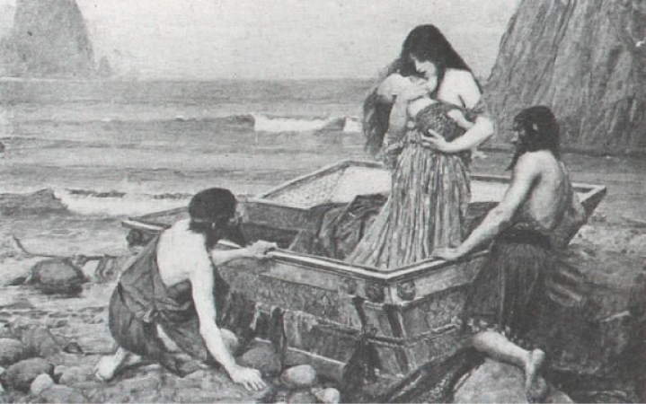
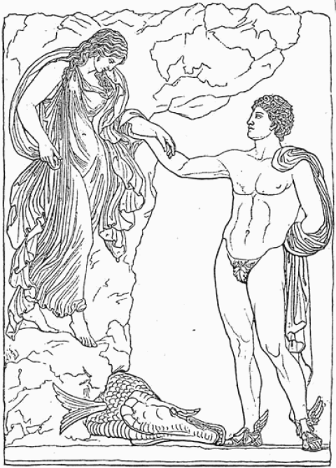
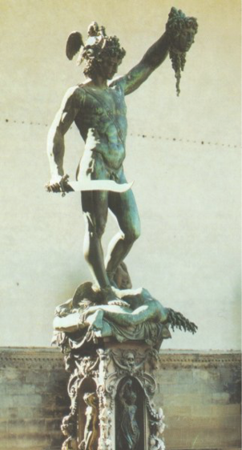
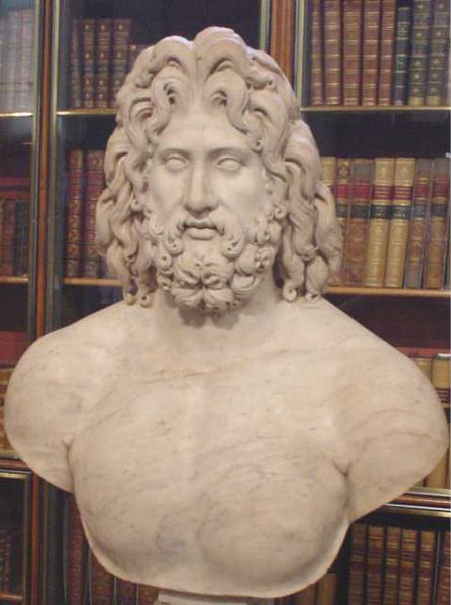
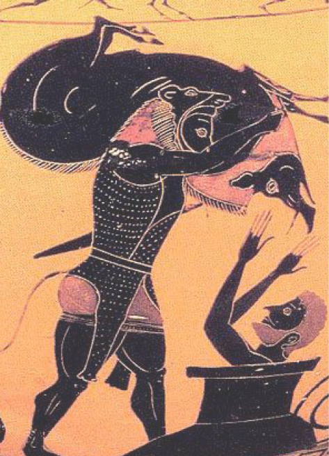
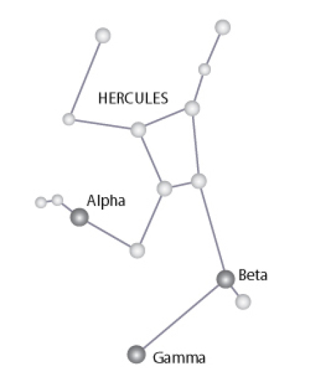
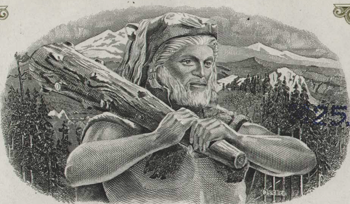
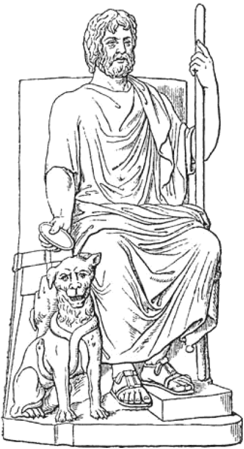
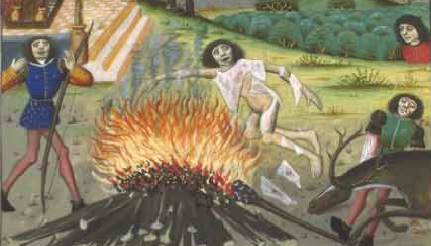

Perseus
Çok eskiden Argos’da yaşayan Yunanlıların Danaos soyundan geldiğine inanılırdı. Danaos, denizler tanrısı Poseidon ile bir su perisinin çocuğuydu. Bu nedenle Homeros ile Vergilius’un aralarında bulunduğu eski yazarların çoğu tüm Yunanlıları Danaalılar olarak anıyorlardı. İlk Argos hükümdarı çok başarılı bir asker ve büyük bir kahraman olan “Abas”dı. Abas, Yunan mitolojisinde adı sık sık geçen büyük bir kahramandı. Abas, Truva Savaşı’na katılmıştı ve Homeros’un ünlü İlyada Destanı’nda adı geçiyordu. Ünlü Abantlar boyunun adının ondan geldiği de söylenmektedir.
Abas, Danaoslar soyundan gelen Hypermestra ile Aigyptos soyundan gelen Lynkeus’un oğluydu. Abas’ın en az kendisi kadar ünlü olan oğulları ise Akrisios ile Proitos idi. Aigyptos oğulları amcaları Danaos’un kızlarını zorla kaçırıp onları kendileriyle evlenmeye zorlamışlardı. Bunun sonucunda zorla evlendirilen Danaos kızları korkunç bir plan yaptılar ve düğün gecesi gerdeğe girdikleri gece eşlerini öldürdüler. Danaos kızlarından yalnız Hypermestra kocasını öldürmemişti. Hypermestra, aynı zamanda kuzeni de olan Lynkeus’a kıyamadı ve onu öldürmedi. Bunun üzerine ikisinin birleşmesinden Abas adlı bir erkek çocuk doğdu. Abas, büyüyünce Argos’ta kral oldu. Daha sonra da güzel Aglae ile evlendi ve bu evlilikten Akrisios ile Proitos adında ikiz oğulları oldu. Akrisios’tan Danae, Danae’den Perseus doğdu. Arkadyalı ünlü avcı kız Atalante de bunların soyundandır.
Abas, Phokis’te Abai kentini kurmuştu. Söylentiye göre büyülü bir kalkanı vardı ve bu kalkanı görenler hemen savaşı bırakırlardı. Dolayısıyla savaş sırasında karşısına çıkanların hiç şansı olmazdı. Bazı başka kaynaklara göre ise su içmesiyle alay ettiği için bereket tanrıçası Demeter tarafından kertenkele yapılan Metanize’nın oğlu olduğu da söylenmektedir.
Abas’ın Aglae’den doğma “Proitos” ve “Akrisios” adlı ikizleri büyüdüklerinde birbirleriyle geçinemez oldular. En sonunda da babalarının ardından tahta geçmek için kıyasıya bir rekabet ve kavgaya giriştiler. Bu kavga o kadar kızıştı ki bu arada Proitos kardeşinin kızı Danae’ye tecavüz bile etti. Onların süre giden bu çekişmesi ülke halkını da usandırmaya başlamış, ülkede büyük huzursuzluklar çıkmıştı. Bunun üzerine iki kardeş ülkeyi paylaşmaktan başka çare bulamadılar.
Bu paylaşma sırasında Akrisios’a yedi su canavarının surlarla güçlendirdikleri Argos şehri düşerken; diğer önemli kent olan Tiryns da Proitos’un payına düştü. İki kardeş birbirinden nefret ediyordu ancak Akrisios’un nefreti daha büyüktü. Kardeşinden çok nefret eden Akrisios, aynı zamanda bir erkek çocuk özlemi içindeydi. Ancak bir türlü istediği çocuğa sahip olamıyordu.
Bunun üzerine Akrisios, bu konuyu araştırmak için kahinleriyle ünlü Delphoi Tapınağı’nın yolunu tuttu. Gerekli armağanları sunduktan sonra Delphoi Tapınağı’ndaki kadın kâhinin karşısına çıktı.
Kâhin:
“Evet Danaosoğlu, benden öğrenmek istediğin nedir?”
Akrisios:
“Ey yüce bilici, söyle bana neden benim bir erkek oğlum olmuyor?”
Kâhin:
“Kader tanrısı Tyche senin yazgını böyle yazmış.”
Akrisios:
“Peki bir erkek çocuğumun olması için ne yapabilirim?”
Kâhin:
“Yapabileceğin hiçbir şey yok. Üstelik...”
Heyecanlanan Akrisios:
“Evet, bitir sözünü ey yüce bilici, üstelik ne?”
Kâhin:
“Üstelik senin yazgında daha da kötü bir olasılık var.”
Akrisios:
“Nedir o?”
Kâhin:
“Sen bir oğul sahibi olamayacaksın, ama bir kızın olacak.”
Akrisios bu habere sevinmişti:
“Demek bir kızım olacak, ona da razıyım!”
Kâhin:
“Sevinmekte acele etme...”
Akrisios:
“Neden?”
Kâhin:
“Çünkü bu kızının doğuracağı torunun ileride seni öldürmeye çalışacak.”
Akrisios:
“Öyle mi? O zaman ne yapmam gerekiyor?”
Kâhin:
“Bu yazgıdan kaçmanın en güvenli yolu, doğacak kızını derhal öldürmektir.”
Akrisios kâhinin bu söylediklerine çok üzüldü. Ne var ki, çok geçmeden eşi hamile kaldı ve dokuz ayın sonunda bir kız çocuk doğurdu. Delphoi kâhininin dediklerini hatırlayan Akrisios doğan bebeğin öldürülmesi için adamlarına talimat verdi. Adamlar gidip bebeği annesinden aldılar ve öldürmek üzere uzaklaştılar. Ancak Akrisios’un karısı kocasının yanına koşarak ayaklarına kapandı. Kızlarının canını bağışlaması için kocasına yalvarmaya başladı. Bunun üzerine Akrisios’un babalık şefkati üstün geldi ve kızını öldürtmedi.
Ne var ki, kâhin kadının söylediklerini de bir türlü unutamıyordu. Bunun üzerine yeraltında tümüyle bronzdan bir ev inşa ettirdi. Daha sonra Danae adı verilen kızını buraya hapsetti. Danae’nin hava ve ışık alması için bronz evin damında bir aralık açtırdı ve deliğin başına da bir nöbetçi dikti. Bu yolla Danae’nin orada yaşaması sağlanmış oldu.
Böylece günler dayanılmaz bir sıkıntı içinde geçmeye başladı. Zavallı kız orada herkesten ve her şeyden uzak bir biçimde yaşıyordu. Derken günlerden bir gün kız tepesindeki delikten bulutların toplaştığını ve gökten odasına bir altın sağanağının yağdığını gördü. İşin aslında bu yağan altın sağanağı değil, o küçücük delikten güzel kızı gören Baştanrı Zeus idi. Zeus bu biçimde kızla birleşti ve onu hamile bıraktı. Aradan gerekli zaman geçtikten sonra Danae bir oğlan çocuk doğurdu ve ona “Perseus” adını verdi. Danae bu çocuğun babasının Zeus olduğundan emindi; çünkü o bronz evde onu hamile bırakabilecek başka bir güç olamazdı.
“Perseus” adının anlamı uzun süre dilbilimciler arasında tartışmalı bir konu olmayı sürdürdü. Bir zamanlar bu adın Yunan öncesi bir kaynaktan gelebileceği düşünülmüştü. Hatta bazı yazarlar bu adın, aslında kendilerine “Fars” diyen Perslerle bir ilgisi olduğunu bile düşünmüştü. Ancak kökeni “Argos” olan ve Yunanistan’da yaşayan bir çocuğa Fars kökenli bir ad vermenin hiçbir mantığı olamayacağı için sonradan bu varsayımdan vazgeçildi. En sonunda eski metinlerin titiz ve karşılaştırmalı incelenmelerinin sonucunda bu adın eski Yunancada bulunan “perthein” sözcüğünden geldiği anlaşıldı. “Perthein”in anlamı ise “tahrip etmek, yağma etmek, ziyan vermek” demekti. Bu nedenle Perseus’un “yıkıcı, yağmalayıcı” gibi bir anlamı olduğu anlaşılmış oldu.
Danae, bir süre sırrını sakladı, ama sonunda babası Kral Akrisios, bronz evdeki küçük çocuğun varlığından haberdar oldu. Bu olayı öğrenir öğrenmez büyük bir öfkeye kapıldı ve soluğu kızının yanında aldı.
Akrisios hışımla kızına çıkıştı:
“Bu da nereden çıktı şimdi? Bu çocuğun babası kim?”
Danae babasına karşı gururla başını kaldırdı:
“Yüce Zeus!”
Akrisios, bu küçük çocuğun kendi yaşamı için ölümcül bir tehdit olduğunu biliyordu. Bu nedenle ondan kurtulmayı düşündü. Ancak kızının söylediği söz içine kurt düşürmüştü. Ya gerçekten çocuğun babası Zeus ise ne yapacaktı? Zeus’un oğlunu öldürmek demek Zeus’un kahredici öfkesini üzerine çekmek demekti. O durumda Zeus peşine Erynsleri, yani yeraltı ülkesinin (Hades) intikam tanrıçalarını takabilirdi. Bu durumda sonu yine korkunç bir ölüm olabilirdi. Bu nedenle Akrisios, kızını ve torununu doğrudan doğruya öldürtmeye çekindi. Bu işten sıyrılmasını sağlayacak bir yol bulmak için düşünmeye başladı.
En sonunda şöyle bir yol buldu. Büyük bir sandık hazırlattı. Daha sonra kızı ile torununu bu sandığa koyup denize bıraktıracaktı. Sonuçta denizde öleceklerdi ama kendisi doğrudan doğruya onları öldürmüş olmayacaktı. Bu plan aklına yatan Akrisios, hemen gerekli talimatları verdi. Çok geçmeden söylediği gibi bir sandık yapıldı. Daha sonra Danae ile oğlu bu sandığa konuldu ve açık denize bırakıldılar.
Sandığın kapağı sıkı sıkıya kapalıydı. Bu nedenle Danae, küçük oğlu ile bindikleri acayip teknenin sürekli dalgalarla boğuştuğunu hissediyor, ancak neler olup bittiğini anlayamıyordu. Bu biçimde korku içinde bir gece geçirdi. Sabah olmasına karşın, kapalı sandıkta etrafını göremiyor; sadece dalgaların etkisi ile yukarı kalkıp yeniden suya çarptıklarını fark ediyordu. En sonunda sandık bir sürtünme ile bir zemine çarptı, bir süre kaydıktan sonra hareketsiz kaldı.
Danae, bir kumsala çıktıklarını anlamıştı ama kapağı sıkıca kapalı sandığın içinden nasıl çıkacaktı? Ne var ki, kader tanrıçası Tyche mi yoksa küçük çocuğun babası Zeus mu yardım etti, bilinmez, Diktys adında iyi kalpli bir balıkçı oraya geldi. Sandığın yanına ulaşınca içinde birilerinin olduğunu anladı. Sandığı kırarak Danae ile oğlunu dışarıya çıkarttı. Genç anne ile oğlunu evine götürdü, kendisi gibi iyi kalpli ve sevecen bir insan olan karısının ellerine bıraktı.
Diktys ile karısının çocukları yoktu. Bu nedenle denizden gelen bu zavallı kazazedeleri bağırlarına bastılar. Uzun yıllar iyi kalpli bu iki insanın yanında kalan Danae, büyümekte olan oğlunun balıkçıya çıraklık etmesinden hiç utanç duymadı. Böylece Danae ile Perseus yıllarca huzurlu bir balıkçı yaşamı sürdüler. Ne var ki, bu sakin ve huzurlu yaşam sürüp gitmeyecekti.
Danae ile Perseus’un geldikleri bu adanın adı Seriphos idi. Bu küçük adanın hükümdarı Polydektes çok zalim bir insandı. Adının anlamı “çok konuk ağırlar” olmasına karşın hiç de konuksever ve iyiliksever birisi değildi. Üstelik bu zalim hükümdar iyi yürekli balıkçı Diktys’in kardeşiydi. Polydektes, yıllar var ki yoksul bir balıkçı olan kardeşini ne aramış ne de sormuştu. Ama bir gün yolu onun evinin yakınlarına düşünce birden aklına kardeşini ziyaret etmek geldi. Bunun üzerine kardeşinin evine gitti.
Eve gidince Danae ile karşılaştı ve görür görmez ondan çok etkilendi. O sırada Perseus ergin yaşa gelmişti; ancak Danae güzelliğinden hiçbir şey yitirmemişti. Bu eve sık sık gelip gitmeye başlayan Polydektes, sonunda Danae’ye evlenmeyi önerdi. Ne var ki, kendini oğluna adamış Danae bu teklifi reddetti. Perseus olduğu sürece kadının kendisini kabul etmeyeceğini anlayan Polydektes, Perseus’u adadan uzaklaştırmak için bir yol bulmaya çalıştı.
Uzun düşünmelerden sonra aklına bir hile geldi. Pelops’un kızı Hippodameia’yı alacağı yalanını uydurarak yakınlarına evlenme şöleni çağrısı yaptı. Bu şölene katılanların “eronos” denen armağan vermeleri gerekiyordu. Kral Polydektes, Perseus’un yiğitlik ruhunu tahrik ederek onu zor bir işe koşmayı planlıyordu. Kendisi için en makbul hediyelerden birisinin Gorganlar denilen canavarlardan birisinin başı olabileceğini söylemeye başladı.

Perseus ve annesinin balıkçılar tarafından bulunması.
Gorgonlar, kimilerince batıda, Hesperislerin bah-çesi yakınlarında yaşadıkları söylenen ölümcül güçte canavarlardı ve çok tehlikeliydiler. Kral, hazırlıkları yapılmakta olan düğün için en değerli armağanın bir Gorgon’un başı olacağını her fırsatta söyleyip duruyordu. Bu arada kralın davet ettiği zengin yakınları ona birbirinden güzel ve değerli armağanları getirmeye başlamışlardı. Kral Polydektus, düğün için kendisine getirilen görkemli hediyeler sunulurken yanına Perseus’u alıyor, onun bu hediyeler karşısında ezilmesini sağlıyordu.
Arada sırada Perseus’a dönerek soruyordu:
“Eeee Perseus, senin hediyen ne zaman geliyor?”
Perseus:
“Hazırlıyorum kralım, ama korkarım benim hediyem bu getirilenler kadar görkemli olmayacak. Biliyorsunuz ben yoksul bir balıkçıyım.”
Kral:
“Yoksulluk hiç önemli değil Perseus. Bu gösterişli mallardan çok daha değerli hediyeler de var. Sen de onlardan birisini getirirsin.”
Perseus:
“Ne tür hediyeler bunlar kralım?”
Kral:
“Örneğin bana sunulacak bir Gorgon kafası, bütün bu gösterişli hediyelerden çok daha değerli olacak, onu bana sunanın saygınlığı çok daha büyük olacaktır.”
Perseus:
“Bu Gorgonlardan hangisinin başı sizin için daha değerli?”
Kral:
“Elbette Medusa’nınki!.. Onu getirenin kahramanlığı hiçbir kimsenin kahramanlığıyla ölçülemez.”
Kralın bu sözleriyle aklı çelinen yoksul ve saf bir genç olan Perseus, bu görkemli düğün hazırlıklarının altında kalmak istemiyordu. Sonunda Gorgonlardan Medusa’nın başını krala hediye olarak getirmeye karar verdi.
Bu kararı alan Perseus hemen yola çıktı. Gorgonlar denilen bu canavarlar, ilkel bir deniz tanrısı olan Phorkys’in kız çocuklarıydılar. Phorkys’in eşi Keto’dan doğan bu kız çocukların adları Stheno, Euyale ve Medusa idi. Bunlardan Medusa, bir ara Athena Tapınağı’nda Poseidon ile birlikte olmuştu. Buna öfkelenen Tanrıça Athena ceza olarak onu korkunç bir kılığa sokmuştu.
Medusa’nın bedeni pullarla kaplanmış, çok uzun dişleri ortaya çıkmıştı. Mor bir dili oluşmuş, altın kanatları, pirinç elleri, ıslıklar çalan yılanlardan saçları ortaya çıkmıştı. Her bakımdan korkunç ve ölümlü bir yaratığa dönüşmüştü. En önemlisi de Medusa’nın yüzünü gören anında taş kesiliyordu. Bu yüzden yanına yanaşıp onu öldürmek olanaksızdı. Ne var ki, Kral Polydektes tarafından dolduruşa getirilen genç Perseus büyük bir hırsa kapılmıştı. İhtiraslı gururu sayesinde verdiği karardan dönmedi ve bedeli ne olursa olsun yola düştü.
Perseus’un bu delice cesaretinin ona belâlı sonuçlar getirmemiş olmasının nedeni iki büyük tanrısal varlığın ona kanat germiş olmalarıydı. Bunlardın birisi, tanrıların habercisi Hermes idi. Hermes, Perseus’a yolculuğuyla ilgili çok önemli bilgiler verdi. Perseus’a yardım eden ikinci tanrısal varlık ise akıl, sanat ve savaş tanrıçası, Zeus’un kızı Pallas Athena idi. Medusa’ya öfkesi geçmemiş olan Athena da Perseus’a her türden destek verdi.
Perseus, kralın huzurundan çıkar çıkmaz sahilde bekleyen teknesine gitti. Kendisini engellememesi için annesine uğramamıştı. Önce Gorgonların nerede bulunabileceğini öğrenmek için Yunanistan’a yelken açtı. Sorup soruşturarak sonuçta Delphoi’ye gitti. Karşılaştığı tüm kâhin rahibeler ona Gorgonların nerede olduklarını kendilerinin de bilmediğini söylediler. Ancak Perseus’un vazgeçmeye niyeti yoktu. Kâhin kadınları sıkıştırmaya başladı. Sonunda onlardan bazı ipuçları öğrendi. Buna göre, Selli adındaki halkın yaşadığı bir yer vardı. Bu halk Demeter’in altın tanelerini, yani tahıl tanelerini değil de yalnız palamut meşesi yiyorlardı. Onların yaşadığı ülkeye, konuşan meşe ağaçlarının bulunduğu Dodona deniyordu. Gorgonların nerede olduklarını yalnızca Dodona’da yaşayanlardan öğrenmek mümkündü. Bu ipucunu alan Perseus hemen Dodona’ya gitmek için yola çıktı.
Perseus yola çıkmasına çıkmıştı, ama bir yandan da umutsuzluğa düşmüştü. Bu işin sonunu pek hayırlı görmüyordu. Bu nedenle üzgün bir ruh hâli içinde yol alıyordu. Bu yolculuk sırasında karşısına son derece güzel yüzlü, fakat acayip kıyafetli bir genç adam çıktı. Bu adamın elinde kanatlı altın bir asa, başında kanatlı şapka, ayaklarında kanatlı sandaletler vardı.
Perseus, bu genci görür görmez büyük bir sevince kapıldı, çünkü bu gencin insanları selâmete çıkaran rehber Hermes’den başka bir kimse olamayacağını hemen anlamıştı. Işıldayan yüzü ile haber tanrısı Hermes ona bazı bilgiler verdi. Medusa’ya saldırmadan önce dikkat etmesi gerekenleri ona anlattı. Hermes’in Perseus’a bildirdiğine göre ona en önemli yardımı Kuzey’deki Styksli su perileri yapabilirdi. Bu su perilerinin yaşadıkları yerde Graialar (Gri Kadınlar) denilen bir topluluk vardı. Perseus gerekli bilgileri bunlardan öğrenilebilirdi.
Hermes’ten bu bilgileri alan Perseus’un neşesi yerine gelmişti. Hemen Graiaları bulmak üzere yola koyulmaya karar verdi. Ancak yola çıkmadan önce Hermes ile Athena’nın ona verecekleri bazı önemli şeyler vardı. Hermes, Perseus’a orak biçiminde bir kılıç verdi. Bu kılıç o kadar sert ve sağlamdı ki Medusa’nın titanyum madeni kadar sert balık pullarına ancak onunla zarar verilebilirdi. Hermes ile Perseus konuşurlarken onların yanında olan Athena da söze karıştı. Medusa’nın karşısındaki canlıları taş haline getiren bakışını hatırlattı. Daha sonra da Perseus’e cilâlı bronzdan yapılmış özel kalkanını verdi ve şöyle dedi:
“Canavar sana saldırdığında onun yüzüne sakın bakma! Bu kalkanı kaldır ve canavarın yüzüne tut. Bu, bir ayna görevi görecektir, böylece canavarın hareketlerini bundaki yansımalarından izle ve ona göre tavrını belirle. Buna dikkat edersen ona öldürücü darbeyi indirebilirsin. Böylece canavarın ölümcül gözleri etkisiz kalacaktır. Bu dediklerimi sakın unutma.”
Tanrıça Athena ayrıca Perseus’a üç önemli teçhizat vereceğini bildirdi. Bunlar, yapacağı mücadelede ona çeviklik kazandırmak için ayaklarına geçireceği kanatlı botlar; öldüreceği Medusa’nın başını kestiğinde bu korkunç başı taşımak için ona gerekli olacak gümüşten, büyülü bir çuval; son olarak da başa geçirildiğinde insanı görünmez yapan Hades başlığıydı. Bütün bunları ona Styksli su perileri vereceklerdi.
Bütün bu bilgilerle donanan Perseus, Hermes’in kılavuzluğunda yola çıktı. Birlikte “Alacakaranlık Ülkesi”ne doğru hızlı bir biçimde yol almaya başladılar. Uzun bir yolculuğun sonunda Perseus ile Hermes, Yunanlıların dünyanın sınırını oluşturduğuna inandıkları Okeanos Irmağı’nı aştılar. Daha sonra da Kimmerilerin yaşadıkları “Kara Ülke”ye geldiler. Çok geçmeden de Atlas Dağı’nda oturan “Gri Kadınların” yanına ulaştılar.
Bu yaratıkların bedenleri kuğuya, başları insana benziyordu, kanatlarının altında kol ve elleri vardı. Grailar, aslında çok yaşlı ve çok acayip üç ihtiyar kadındı. Her şeyin alacakaranlığa gömüldüğü bir bölgede yaşıyorlardı. Her yerin yarı karanlıkta olduğu yetmezmiş gibi bu kadınların gözleri de yoktu. Yalnızca ortaklaşa kullandıkları bir tek göz vardı. Görmek istedikleri nesneyi bu tek gözü sıra ile birbirlerinin elinden alıp alınlarına yapıştırarak inceleyebiliyorlardı.
Hermes daha önceden Perseus’a, Medusa’yı bulabilmesi için ayrıntılı bir plandan söz etmişti. Buna göre Perseus’un ilk iş olarak gerekli sırrı vermeleri için Graiaları zorlaması gerekiyordu. Bunun için de Hermes, Perseus’a bir yöntem önermişti. Buna göre Perseus Graiaların bölgesine gidince hemen kendisini onlara tanıtmayacak ve gizlenecekti. Sonra uygun bir fırsat kollayıp onları izlemeye başlayacaktı.
Perseus, kendini gizlediği bir aralıktan yaşlı kadınların tek gözü birbirlerine aktarmaya başladıkları anı kollayacak ve tam o sırada harekete geçecekti. Göz el değiştirdiği için o sırada kadınların hiçbirisi çevreyi göremeyecekti. Perseus bu durumdan yararlanarak yerinden fırlayacak ve gözü kapacaktı.
Perseus, Hermes’in dediklerini aynen yaptı ve kadınların tek gözünü ellerinden kaptı. Zavallı kadınlar gözün nereye gittiğini birbirlerine sorarken Perseus söze karıştı ve gözü kendisinin aldığını söyledi. Gözü bir başkasının kaptığını anlayan cadı kadınlar feryat etmeye başlayınca Perseus onlarla pazarlığa başladı:
“Susun ve beni dinleyin. Size bir şey söyleyeceğim!”
Graialar:
“Heeeeeey yabancı, o bizim tek gözümüz, ne olur onu bize ver!”
Perseus:
“Onu size tek bir koşulla veririm.”
Graialar:
“Neymiş bu koşul?”
Perseus:
“Bana Kuzey’deki su perilerine nasıl ulaşacağımı söyleyin. Bana bunu söylerseniz gözü size veririm.”
Perseus bunu söyleyince yaşlı kadınlar kendi aralarında tartışmaya başladılar. İşin aslında akrabaları olan su perilerinin yerini söylemek istemiyorlardı. Ancak tek göz olmadan hiçbir şey yapamayacakları da ortadaydı. Sonunda Perseus’a yolu tarif etmeye karar verdiler.
Graialar, Perseus’a “Kuzey Rüzgârı”nın ötesindeki kutsal Hyperborealıların ülkesinin yolunu tarif ettiler. Bunun üzerine Perseus onlara tek gözü geri verdi. Olağan koşullarda Graiaların anlattıkları yolu bir ölümlü olarak Perseus’un tek başına aşması olanaksızdı. Ancak onun büyük bir talihi vardı. Yanında tanrıların habercisi, yorulmak bilmez ve her yeri bilen Hermes vardı. Böylece Perseus, haberci tanrı Hermes refakatinde, güler yüzlü, konuksever bir halkın her gün neşeli toplantılar, şölenler düzenlediği bir ülkeye geldi.
Burada büyük bir konukseverlikle karşılandılar. Büyük bir şölene konuk edildiler. Flüt ve lir eşliğinden dans eden genç kızlar biçimindeki su perileri, bir ara dansı kesip Perseus’a Tanrıça Athena’nın vaat ettiği teçhizatı sundular. Bunlar, kanatlı botlar, taşınacak eşyanın büyüklüğüne göre istenildiğinde boyutları değişebilen sihirli bir torba ve en önemlisi başına giyeni görünmez yapan bir şapkaydı.
Bu teçhizatı aldıktan sonra artık Perseus, Gorgonlarla karşılaşmaya hazırdı. Bu kez Hermes olmadan yoluna devam etti. İlk olarak Hesperislerin bahçesinin yakınlarına geldiler. Burada Hesperislerin babası güçlü Titan Atlas’la karşılaştılar. Atlas, Zeus tarafından cezalandırıldığı için göğü tutan sütunları göğsünde taşıyordu. Perseus onu görünce ondan yardım istedi. Ancak Atlas ona yardım etmedi ve Gorgonların yerini söylemedi.
Atlas’dan umduğu yardımı bulamayan Perseus’un imdadına bu kez Athena yetişti. Güzel tanrıçanın rehberliğinde, Mutluluklar Ülkesi’ni geride bırakıp, Okeanos’u aşarak Sisam dolaylarındaki “korkunç kız kardeşlerin”, yani Gorgonların adasına vardılar. Büyük bir şans eseri olarak adaya geldikleri sırada Gorgonlar uyuyorlardı. Aiskhylos’tan günümüze kalan trajedi parçasında Perseus’un, Gorgonların uyudukları mağaraya boğalar gibi çılgınca girdiği yazılıdır. İşin aslında Perseus’un bu yaptığı büyük bir hataydı; çünkü büyük kanatlı, altın balık pulları ile örtülü bedenli ve kıvranıp duran yılanlardan oluşan saçları olan bu canavarlara doğrudan doğruya saldırmak demek ölüm demekti. Bunun yerine onları kalkanının ayna yerine kullandığı parlak yüzündeki yansımalarından dikkatle izlemesi gerekiyordu.
Ne var ki, canavarlar uyuduğu için Perseus korkulan sona uğramadı. Bu arada Hermes ve Athena uyuyan canavarlardan hangisinin Medusa olduğunu Perseus’a söylediler. Medusa’ya doğrudan bakamayan Perseus, Athena’nın da yönlendirmesi ile canavara yaklaşarak, kanatlı sandaletleri sayesinde tepesinde çevik hareketlerle dolanmaya başladı. Bir süre bu biçimde dolandıktan sonra birden ani bir dalış yaptı ve orak biçimindeki kılıcı ile tek darbede Medusa’nın boğazını biçti.
Bu sırada atik davranan Perseus düşmekte olan kelleyi yakalayıp beline sardığı gümüşten dokunmuş çuvala soktu. Gorgon’un kesik boynundan biri Pegasos adındaki ölümsüz kanatlı at, diğeri Khrysaor (Altın Kılıç) hâsıl oldu. Bu arada ölümsüz olan öteki Gorgonlar da uyanmış, kardeşlerinin başsız cesedini görünce dehşete düşmüşlerdi. İlk şaşkınlığı üzerlerinden attıktan sonra kız kardeşlerini öldüren kişinin peşine düşmek istediler.
Ne var ki, bu sırada Perseus kendisini görünmez hale getirecek şapkayı başına geçirmişti bile. Bazı mitlere göre bu arada Pegasos’un sırtına atlamış, diğerlerine göre ise, kanatlı botları ile Hermesle birlikte güven içinde uçuyordu. Dönüş yolu üzerinde Perseus, kendisine daha önce kaba davranan ve yardımcı olmak istemeyen Atlas’ın karşısına çıktı. Ona bir oyun oynamak ve intikam almak istiyordu. Karşısına çıkan Atlas, Perseus’tan yanındaki gümüş torbayı açmasını istedi. Torbayı keyifle açan Perseus’un gösterdiği Gorgon kafasına bakan Titan Atlas anında taş kesildi. Böylece onun kitlesinden Kuzey Afrika’nın Atlas Dağları oluştu.

Perseus ve Andromeda.
Bu olaydan sonra Perseus ile Hermes, Habe-şistan’da mola verdiler. Hermes burada Perseus’a veda ederek yolunu ayırdı. Perseus, sahilde bir kayalığa zincirle bağlanmış çok güzel bir genç kız gördü. Yanına yanaşarak neden böyle bağlı olduğunu sordu. Andromeda adındaki bu kızın babası, ülkenin kralı Kepheus imiş. Annesi Kassiopeia ise güzelliğine kibirli, düşüncesiz bir kadınmış. Deniz tanrısı Nereus’un kızlarından (Nereidlerden) daha güzel olduğunu iddia etmiş. Bunu söylemekle yetinmeyip düzenlenen bir güzellik yarışmasına onlarla birlikte katılmış. Onun bu küstah tavrı ölümsüz tanrıçaları çok kızdırmış. Bunun üzerine tanrıçalar, Keto adındaki dev bir deniz yılanını ülke halkının başına bela etmiş. Yılan her gün birkaç kişiyi yakalayıp yutarmış. Kitlesel kıyımdan korkan halk Ammon kâhinlerine başvurarak bu afetin nedenini sormuş. Kâhinler onlara kraliçenin tanrılara karşı yaptığı küstahlığı anlatmışlar. Bu belanın cezasının halka çektirilmemesi için kızı Andromeda’nın bu dev yılana kurban edilmesi gerektiğini söylemişler.
Böylece halk hep birlikte Kral Kepheus’u kızını feda etmeye zorlamış. En sonunda çaresiz kalan kral, kızının sahilde bağlanıp canavara kurban edilmesine razı olmuş. Bağlanıp kaderine terk edilen kızı, az sonra Pegasos’un sırtında gelen Perseus gördü. Perseus, onu görür görmez âşık oldu. Dolayısıyla onun yanı başında beklemeye başladı. Deniz canavarı göründüğünde Perseus, Medusa’yı öldürürken kazandığı atiklik ve beceriyle onun da kafasını uçuruverdi. Çok uzun yıllar sonra torunu Herkül, Truva kralı Laodemon’un kızı Hesione’yi, aynı biçimde kurban olmaktan kurtaracaktır.
Perseus, Andromeda’yı ailesine götürdü ve onunla evlenmek istediğini açıkladı. Bunun üzerine Andromeda’nın ailesi, kızlarını memnuniyetle onun canını kurtaran kahramana vermeyi kabul ettiler. Ancak yine Kassiopeia’nın entrikasıyla kızın eski nişanlısı Agenor da düğüne davet edildi. Agenor, Belos hükümdarının kardeşi olarak biliniyordu. İki yüz savaşçısı ile birlikte gelen bu zorba, düğün şenliğini karıştırdı. Ancak buna karşı Perseus, Medusa’nın kesik başını göstererek karşıtlarını taş haline getirdi.
Sonunda düğünü yapılan Perseus, eşi ile birlikte annesinin bulunduğu adaya döner. Ancak Perseus evde kimseyi bulamaz. Komşular, balıkçı Diktys’in eşinin çoktan öldüğünü, annesi Danae’nin ise, evlenme önerilerine devamlı ret yanıtları verdiği Polydektes’in tehditleri karşısında, balıkçı ile birlikte kaçıp bir tapınağa sığındığını söylediler.
Bunları öğrenen Perseus, kraldan hesap sormaya karar verdi. Tam o sırada kralın sarayda bir şölen düzenlediğini ve bu şölene davet ettiği dostlarıyla birlikte eğlenmekte olduğunu öğrendi. Bunun üzerine bu fırsatı kaçırmak istemeyen Perseus doğruca saraya gitti. Daha sonra şölen salonunun kapısında durdu. Parlaklığı göz alan kalkanı, gümüşten torbası ile dikkatleri çekmemesi olanaksızdı. Çok geçmeden de torbadan “Medusa”nın başını çıkarıp orada bulunanlara gösterdi. Bir anda herkes taş olup bir dizi mermer heykele dönüştü. Efsaneye göre Seriphos Adası’nın aşırı kayalık olmasının nedeni buymuş.
Perseus’un bu başarısı adada büyük bir sevince neden oldu. Bütün adalılar, yaka silktikleri zorba hükümdarın başına gelenleri öğrenince rahat bir nefes aldılar. Danae ve Dictys’in saklandıkları yeri buldular. Perseus, Dictys’i adanın kralı ilân etti. Kendi de anası ve karısı Andromeda’yı alarak Yunanistan’a dönmeye karar verdi. Bu arada annesi ona olan biten her şeyi anlatmıştı. Perseus, artık çok yaşlanmış olan dedesi Akrisios’un öfkesinin geçtiğini ve kendilerine karşı yüreğinin yumuşamış olduğunu düşünüyordu. Dedesinin kendilerini bağışlayacağını umuyordu.
Danae, Perseus ve Andromeda, Argos’a vardıklarında, Akrisios’un kentten sürüldüğünü öğrendiler. O anda nerede olduğunu kimse bilmiyordu. Argos’a yerleştikten bir zaman sonra kuzey kentlerinden Larissa kralı Teutamides’in geniş katılımlı bir atletizm yarışması tertiplediğini duyunca bunu fırsat bilerek vücut formunu tekrar denemek istedi. Yarışmaya katıldı. Disk atma yarışında, bu çok ağır metali o kadar uzağa ve falsolu fırlattı ki disk, kralın konuğu olarak tribünde bulunan Akrisios’un başına isabet ederek ağır yaralanmasına ve kısa süre içinde ölümüne neden oldu. Böylece Delphoi’deki kâhin kadının bildirdiği kehanet gerçekleşmiş oldu.
Bu acı olay üzerine Perseus, dedesini öldürmenin acısı ile dedesinin annesi ve kendisinin ölümü için elinden gelen zulmü yapma günahını tartma ikilemi arasında kaldı. Dedesinin cezasını bilmeden veren Perseus, her ne koşulda olursa olsun büyüklere sevecenliği ve saygıyı emreden eski geleneklerin idealize edilmiş temiz yürekli evlât tipini temsil ediyordu. Bunun ödülü olarak da ailesiyle huzura ermiştir. Argos tahtı ona kaldı, fakat öldürdüğü dedesinin yerine geçmeyi içine sindiremedi ve büyük amcası Proitos’un oğlu Megapenthes’in egemenliğindeki Tiryns’e giderek onunla krallıkların takası üzerine anlaştı. Onu Argos’a yolladı, kendi Tiryns kralı oldu.
Perseus kral olduktan sonra sanatlar tanrısı Hephaistos’un çırakları dev inşaatçı Kyklopslara hem bu kentin hem de yeni kurduğu Mykenai kentinin, 8 metre kalınlığında, 20 metre yüksekliğinde taşlardan oluşmuş surlarını yaptırdı. Sonradan görkemli Mykenai uygarlığının merkezi olacak bu kentin adı, Perseus’un çorak bir alanda susadığı bir anda birden mucize eseri bir mantardan akarsu fışkırmasından gelirmiş. Perseus’un Andromeda ile evliliklerinden yedi oğlu (Perses, Alcaios, Heleos, Mestor, Sthenelos, Elektryon, Kyniros) ve iki kızı (Gorgophone-Gorgon öldüren ve Autukhthoe-toprakta doğmuş) oldu; bunlardan Elektryon, Herkül’ün dedesiydi..
Efsaneye göre, Medusa’nın kesik başı Athena’nın kalkanına yapıştırılmış. Zeus’un Athena’ya armağanı olan bu kalkan, heykel ve resimlerde de bu süsleme ile betimlenirdi. Perseus Efsanesi, sanata ve astronomiye çok fazla materyal kazandırmıştır. Elinde Medusa’nın başını taşıyan Perseus’a benzetilen takımyıldıza onun adı verilmiştir. Eşi Andromeda’nın (erkekler üzerinde egemenlik kuran anlamındaki) adı da, kuzey yarı gökküresindeki, oluşturduğu geometrik biçime “Pegasus Karesi” denilen galaksiye verilmiştir. Kuzey Amerika’da ve Asya’da yetişen çiçekli bir bitkiye de “Andromeda” deniyor. İnanca göre, Poseidon, kaprisleri ile facialara sebebiyet veren Kassiopeia’yı tepetaklak ederek gökyüzünde bir takımyıldıza dönüştürmüş.

Herkül’ün Doğumu ve Gençliği
Herkül’ün doğum öyküsü Baştanrı Zeus’un insanlara yönelik sevgi ve ilgisini açıkça gözler önüne serer. Büyük kahraman Herkül, Baştanrı Zeus ile Tiryns ve Anaxo kralı Electryon’un kızı ölümlü Alkmene’nin oğluydu. İşin aslında Alkmene, Alcaeus’un oğlu Thebai kralı Ampithryon ile evliydi, ancak bu evlilik baştan beri bazı sıkıntılar içindeydi. Zaten Zeus’un bir kahraman yaratmak için Thebai’ye gelmesinin ve çocuğu doğuracak kadın olarak Alkmene’yi seçmesinin bir nedeni de onun evliliğindeki bu sorunlardı.
Bir gün Zeus’un canı sıkkındır. Sıkıntısının bir nedeni de başları beladan belaya giren insanların durumuna üzülmesidir. Bu yüzden onlara yardım etmek için güçlü birisini yaratmaya karar verir. Baştanrı Zeus’un bu iyi niyetinin ürünü olarak ileride Herkül doğacaktır. Herkül, bir tanrı olmamasına karşın tanrılara kafa tutan bir kahramandır. Herkül’ün yaradılışındaki amaç, baştanrının insanlara yardım etme arzusuydu. Bu nedenle Herkül insanca özellikler ve erdemlerle donanmış, tam insanlara özgü bir kahraman olmuştur. İnsanlara yakın, onlarla dolaysız ilişkiler kurabilen, dürüst ve yardımseverdir.
Zeus, düşündüğü kahramanı doğurması için bir anne adayı aramaya başladı. Epeyce bir dolaştıktan sonra Thebai’ye gitti. Sonunda da Thebai kralı Amphitryon’un karısı güzel Alkmene’de karar kıldı. Kahraman Perseus’un soyundan gelen Alkmene güzelliğinin yanı sıra sahip olduğu erdemlerle de tanınıyordu. Alkmene bir savaş yüzünden yola çıkmak zorunda kalan Amphitryon’la henüz yeni evlenmişti. Zeus Alkmene’yi baştan çıkarmak için kocasının biçimine girerek bu yokluktan yararlanmaya karar verdi. Ardından da hemen harekete geçti.
Kraliçe Alkmene’nin kocası Kral Amphitryon savaşa gidince Zeus, onun kocasının kılığında şehre geldi. Zeus’u kralları zanneden kapıcılar ve muhafızlar krallarının şehre döndüğünü görüp sevindiler. Daha sonra onu karısının yanına götürdüler. Alkmene, Zeus’u kocası zannederek kollarının arasına aldı. Zeus, şehrin üzerine altın yağmuru yağdırırken Alkmene Zeus’tan hamile kaldı. O gece boyunca Zeus, Alkmene ile çiftleşti ve Zeus o geceyi emriyle biraz uzattı. Hatta bazı efsanelere göre o gece tam üç gün uzunluğunda sürmüştü.
Ancak ertesi gün Alkmene’nin kocası Amphytrion savaştan geri döndü. Hemen karısının yanına gidip onunla özlemle çiftleşti. Amphytrion, Alkmene ile evlendikten sonra Thebai kralı olmuştu, ancak Kral Elektryon’un kızı olan Alkmene, Amphytrion ile yatağını pek paylaşmak istemiyordu. Bunun için babasının sürülerini çalan Teleboa ve Taphos halkları ile yapılan savaşta öldürülen yedi kardeşinin intikamının alınmasını şart koşmuştu. Amphytrion çok uzun ve tehlikeli mücadeleleri göğüsleyerek zafere ulaşmış, en sonunda saraya dönmüştü. Ancak bütün istekleri karşılanmasına karşın Alkmene nazlanmayı sürdürüyordu. Kocasına bir gece önce zaten birlikte yattıklarını söylüyordu. Karısının bu garip davranışların sırrını çözmeye çalışan Amphytrion’un aklına kayın babasını kaza ile öldürdüğü geldi. Acaba karısı babasını bilerek öldürdüğünü düşündüğü için mi kendisine yine böyle soğuk davranmaya devam ediyordu?
Bu olayın öyküsü kısaca şöyleydi. Amphytrion, ülkeden çalınan çok miktarda sığırın Elis hükümdarı Polyksenos’a satıldığını öğrenmişti. Bu işi kestirmeden halletmek için sığırları para ödeyerek Polyksenos’dan alıp kayın babasına teslim etmek istemişti. Ancak deli dolu bir hükümdar olan Elektryon bu davranışı onur kırıcı bir zaaf olarak görüp feveran etmişti. Hırsızları cezalandırmak varken onların çaldığı sığırları para vererek almayı büyük bir düşkünlük olarak görüyordu. Amphytrion ile Elektryon bu biçimde tartıştıkları sırada azgın bir boğa hızla üstlerine gelmeye başladı. Boğanın geldiğini gören Amphytrion elinde bulunan mızrağı boğaya fırlattı, ancak mızrak boğanın boynuzundan sekerek Elektryon’a çarptı. Bu ani darbe nedeniyle Amphytrion’un kayınbabası hemen oracıktı öldü. Daha sonra bu konuda değişik söylentiler çıktı. Amphytrion’un kayınbabasını bilerek öldürdüğü kulaktan kulağa yayılmaya başladı.
Bu arada ortaya çıkan karışıklıktan yararlanan Sthenelus, Tiryns ve Anaxo’ya hükümdar olunca ilk iş olarak Amphytrion ile karısını Tiryns’ten Thebai’ye sürdü. O sırada Thebai kralı Creon idi. Creon, kentine gelen Amphytrion’u iyi karşıladı. Daha sonra yaşanan gelişmelerin ardından Amphytrion, Thebai kralı oldu. Karısının isteği üzerine de hemen Teleboalılara savaş açtı. Karısının kardeşlerinin intikamını alıp adaletin yerine getirilmesini sağlamaya çalıştı. En sonunda karısının dediğini yapan Amphytrion muzaffer bir şekilde ülkesine döndü. Ancak buna rağmen karısının kendisine hâlâ direnç göstermesinin nedenini bir türlü anlayamıyordu. Bunun nedenini anlamak için Thebaili kör kadın kâhin Teiresias’a danışmaya karar verdi ve hemen onun yanına gitti.
Kâhin kadın ona karısının Zeus ile birlikte olduğunu söyledi. Bu tanrısal birleşme gecesi normalin üç katı sürmüş ve mehtap üç kez doğmuştu. Bu nedenle bu birleşmenin ürünü olan Herkül’e daha sonra “Üçlü Ayın Oğlu” demek olan “Triselenos” ünvanı bile verilmişti. Böylece, bir yandan gayrimeşru çocuk olma lekesi taşıyan öte yandan tanrısal kan sahibi olarak Yeraltı Dünyası’na inip çıkma imtiyazı kazanan Herkül, en güçlü olma ününü elde etmişti.
Kâhin kadından gerçeği öğrenmesine karşın Amphytrion, bir türlü bu durumu kabullenemiyor, karısından kuşkulanmaya devam ediyordu. Bunun sonucu olarak Alkmene ile Kral Amphitryon arasındaki anlaşmazlık gün geçtikçe büyümeye başlamıştı. Tatsızlık artınca doğumun tehlikeye girdiğini gören Zeus işe karışmak zorunda kaldı. Olympos’tan aşağı inerek durumu Amphitryon’a bizzat kendisi açıklamak zorunda kaldı. Tanrıların tanrısı karşısında ne söyleyeceğini bilemeyen Amphitryon durumu kabullenmek zorunda kaldı.
Dolayısıyla Herkül ölümlü manevi babası Amphitryon ve ölümlü annesi Alkmene’nin soyundan yani Perseus soyundan geliyordu. İşin aslında Herkül’ün Argos soyundan olup Thebai’de doğmuş olması tamamen şans eseriydi. Herkül’ün gerçek babası olan Zeus, Amphitryon’un gönlünü almak için ona türlü hediyeler gönderdi. Sonunda Amphitryon, tanrıların tanrısı Zeus’tan olma çocuğun manevi babalığını kabul etmek zorunda kaldı.
O gece girmiş olduğu iki ayrı ilişkiden dolayı Alkmene iki ayrı bebeğe hamile kalmıştı. Hamilelik süresinin sonunda da ikiz çocuklarını doğurdu. Doğan çocuklardan Herkül’ün babası Zeus, kardeşi İphikles’in babası ise Kral Amphitryon’du. Ancak çok geçmeden Baştanrı Zeus’un karısı Hera bu durumu, yani Zeus’un kendisini Alkmene ile aldattığını öğrendi. Çok kıskanç bir tanrıça olan Hera çok sinirlendi ve o andan sonra doğacak bebeğe, yani Herkül’e kin gütmeye başladı.
Hera’nın olayı öğrenmesi bizzat Zeus’un gevşekliğinden olmuştu. Daha Alkmene hamileliğinin ortalarındayken Zeus bir gün boş bulunup Perseus soyundan doğacak ilk çocuğun Argos üzerinde hüküm süreceğini söyledi. Ayrıca Olympos’taki tanrılarla yaptığı sohbetlerde sık sık doğacak oğlunun ileride büyük bir kahraman olacağından söz ediyordu. Bu sohbetlere kulak misafiri olan kıskanç Hera’nın doğacak bu çocuğa yönelik kini günden güne büyümeye başladı. Böylece Hera’nın Herkül’e olan kini daha bebek doğmadan önce başlamış oluyordu. Nitekim kıskanç tanrıça değişik yollarla Herkül’ün doğmasını engellemeye bile çalıştı.
Bu doğumu engellemeye karar veren Hera, kıskançlıktan kudurmuş bir halde hemen Mykenai’ye geldi. O sırada orada Perseus’un soyundan Sthenelos hüküm sürüyordu. Hera onun karısına Alk-mene’ninkinden önce doğacak ve ileride kral olacak bir erkek çocuk sözü verdi. Bu çocuk daha sonra Herkül’ün kuzeni olacak olan Eurystheus idi.
Bu olayı hallettikten sonra Hera, hemen doğumlardan sorumlu olan sevgili kızı, Tanrıça Eileithyia ve kader tanrıçaları Moira’lara Alkmene’nin bebeklerinin doğumunun geciktirilmesi emrini verdi. Buna karşılık Sthenelos’un oğlu olacak olan, Herkül’ün kuzeni Eurystheus’un doğumunun hızlandırılmasını istedi. Böylece Eurystheus yedi aylık olarak doğarken, Herkül ve ikiz kardeşi İphikles on ay annelerinin karnında kaldılar. Sonuçta Zeus’un sözünün üzerine ilk doğan çocuk Herkül değil, Eurystheus oldu.

Elinde Medusa’nın kesik başını tutan Herkül.
Bu sırada hamileliğinde dokuz ayı tamamlayan Alkmene bir türlü doğum yapamıyordu. Hera’nın kızı ve doğumlardan sorumlu tanrıça olan Eileithyia, Alkmene’nin doğurmasına bir türlü izin vermiyordu. Böylece Alkmene türlü sıkıntılar ve acılar çekiyordu. Proitos’un kızı Galinthias ise Alkmene’nin dostuydu. Galinthias, Hera’nın emri ile Alkmene’nin doğumunun geciktirildiğini öğrenince çok üzüldü. Arkadaşının acılarına son vermesi için bir şeyler yapmalıydı. Doğum tanrıçaları tam dokuz gün dokuz gece Alkmene’nin evinin dışında elleri kolları bağlı durarak büyüyle doğumu engellemeyi sürdürdüler.
Ne var ki, Galinthias acılar içindeki arkadaşı Alkmene’ye çok acıyordu. Sonunda da arkadaşının acılarından kurtulması için bir hile yapmaya karar verdi. Uygun bir fırsat kollayarak Alkmene’nin evinin dışında bekleyen doğum tanrıçalarının yanına koşarak ve telaşlı bir biçimde gitti. Tanrıçalara Zeus sayesinde bebeğin sağlıklı bir şekilde doğduğunu, Alkmene’nin onlara rağmen bir erkek çocuk dünyaya getirdiğini söyledi. Bu yalana inanan doğum tanrıçaları, kendilerine tanınan doğum yaptırma ayrıcalıklarının önemsenmediğini düşünüp Zeus’a içerlediler. Öfkeyle söylenerek ayağa kalktılar. Bunun üzerine Alkmene’yi bağlayan ve doğum yapmasını engelleyen büyü bozuluverdi. Bu fırsattan yararlanan Alkmene de bebeklerini doğuruverdi.
Ancak doğum tanrıçalarının Galinthias’ın yaptığı kandırmacayı fark etmeleri uzun sürmedi. Durumu anlayınca Galinthias’tan öç almaya karar verdiler. Sonunda da öçlerini almak için onu bir gelinciğe dönüştürdüler. Ay tanrıçası Hekate bu duruma çok üzüldü ve bu zavallı hayvana acıdı. Onu kendisine kutsal hayvan seçerek odasında tuttu, besledi.
Herkül, büyüdüğünde Galinthias’ı unutmadı ve onun adına bir tapınak yaptırdı. Bu arada kendisinin geç doğmasına neden olan kuzeni Eurystheus’tan hep nefret etti. Alkmene de Eurystheus’ten hayatı boyunca nefret etmeyi sürdürdü. Eurystheus, Herkül’den önce doğduğu için Zeus’un söylediği kehanetin anlamı değişmişti; çünkü Zeus Perseus soyundan doğacak ilk çocuğun büyük hükümdar olacağı sözünü aslında kendi oğlu Herkül için söylemişti. Ancak söz ağzından çıktığı için bu durumu değiştiremezdi, böylece söylediği kehanet Eurystheus için geçerli sayılmış oldu.
Tanrıça Hera’nın müdahalesi sayesinde Eurystheus, erişkin birisi olunca kral oldu ve Herkül üzerinde emirle söz geçirme hakkına sahip oldu. Eurystheus kral olunca hemen bu yetkisini kullanmaya karar verdi. Herkül’ü huzuruna çağırtarak emrine girmesini istedi. Herkül ilk başta bu isteği reddetti. Ancak bu kez devreye Zeus girdi. Baştanrı, söylediği sözün geçerliliğini sağlamak adına oğlu Herkül’ün kral olan Eurystheus’un emrine girmesini sağladı.
Mitologlara göre Herkül’e bu adı, sanat ve güzellik tanrısı Apollon’un kâhini vermişti. İşin aslında ailesi Herkül’e bebekken dedesi Alkeus’tan esinlenerek, Alkides adını vermişti. Herkül büyüdüğünde bir dönem çılgınlık geçirdi ve bu öfke nöbeti sırasında ilk karısı olan Megara’dan olma çocuklarını öldürdü. Bunun üzerine hak ettiği ceza ve çilenin ne olduğunu öğrenmek için Delphoi’deki Apollon Tapınağı’nın rahibesi Kâhin Pythia’ya başvurdu. O da ona ceza olarak bir sürü zorlu iş verdi, ayrıca isim olarak da Herkül adını taşımasını buyurdu. Bu ad “Hera’nın Zaferi” anlamına geliyordu, yani tanrıçanın büyük kinine karşın hayatta kalmayı başarmış olmasını dile getiriyordu. Gerçekten de bu, onun hak ettiği bir unvandı, çünkü kindar Tanrıça Hera onu yaşadığı sürece hep insafsızca izleyecek, özellikle de kuzeni Eurystheus’un hizmetine girmesi için zorlayacaktır.
Alkmene, Galinthias yardımıyla ilk önce Herkül’ü ardından İphikles’i doğurduğundan İphikles, Her-kül’ün küçük ikiz kardeşiydi. İphikles daha sonra sürekli Herkül ile gezdi ve değişik zamanlarda ona yardım etti. Orkhomenos sakinlerine karşı Herkül’ün yanında mücadele ettiğinden Kral Kreon, onu küçük kızıyla evlendirerek mükafatlandırdı. Herkül’de de büyük kızı Megara’yı verdi. İphikles, sürekli olarak Herkül’ün yanında maceralara katılmıştır. Argonaut Seferi’nde ismi listede yer alır. Eurystheus sürekli olarak Herkül’e kötü muamele ederken İphikles’e iyi davranmıştır. Herkül ise İphikles’i hep korumuş ve iyi davranmıştır.
Herkül’ün inanılmaz bir gücü vardı. Ölümlü insanlar arasında daha önceki hiçbir kahraman onunla boy ölçüşemez. Çağlar boyu kuşaklardan kuşağa aktarılan ve “Herkül gibi güçlü.” sözünün doğmasına neden olan bu büyük gücün kaynağı konusunda değişik efsaneler vardır.

Herkül’ün babası Baş Tanrı Zeus’un
British Museum’daki bir büstü.
Bir efsaneye göre Zeus, oğlunun yenilmez birisi olmasını istiyordu. Bir gün çocuğu Hermes’e verdi ve ona çocuğu Hera’nın göğsüne tutup emzirmesi buyruğunu verdi. Hermes, Hera’nın uyuduğu bir sırada bu işi yerine getirdi, ama bebek Hera’nın göğsünden sütü öyle güçlü emdi ki Hera uyandı ve bebeği itti. Ama olan olmuştu, bu arada Hera’nın göğsünden akan süt Samanyolu’nu (Milky Way-Süt Yolu) oluşturdu. Başka mitologlara göre ise Athena ve Hera şans eseri bir gün Thebai bölgesinden geçiyorlardı. Athena, yeni doğmuş bebeğin sağlık ve güzelliğine hayran oldu. İyi kalpli tanrıça, bebeğin daha güzel büyüyüp gelişmesi ve gelecekte çok güçlü olması için bu bebeğe bir şans vermek istedi. Bebeği Hera’ya vererek kısa bir süre için emzirmesini istedi. Hera bunu kabul etti. Bebek Hera’nın göğsünü sıkıp, sütü kuvvetle emince Hera’nın göğsü acıdı ve bebeği itip Athena’ya verdi. Athena bebeği alıp Alkmene’ye verdi ve çocuğunu artık korkusuzca büyütebileceğini söyledi.
Böylece Hera’nın Herkül’e yönelik kini gün geçtikçe artmaya devam etti. Bu arada Herkül ve ikizi İphikles büyümeye devam ediyorlardı. Herkül sekiz aylık olduğunda Hera kıskançlığından onu öldürmeye çalıştı. Bir akşam Alkmene ikizlerini yatırmış, kendisi de uyumuştu. Hera gece yarısı odaya iki yılan gönderdi.
Gecenin en koyu karanlığında ve sessizliğinde iki kocaman yılan bebeklerin beşiklerine tırmanmaya başladılar. Bu sırada odanın içinde bir ışık hâsıl oldu; çocuklar uyanarak başları üzerinde tıslayan yılanları gördüler. İphikles feryat ederek yataktan fırlamaya çalıştı. Herkül ise derhal ayağa dikilerek belâlı yaratıkların gırtlaklarına sarıldı. Yılanlar acı ile kıvranıp kurtulmaya, Herkül’ün bedenine sarılmaya çalışıyorlardı; fakat çocuk öylesine güçle yılanların boğazlarını sıktı ki sonunda kendilerini bıraktılar. İkisi de ölmüştü.
İphikles’in feryadını duyan anneleri kocasını da uyandırarak bebek odasına koştu. Karı koca Herkül’ün ellerindeki cansız pelteleşmiş kocaman yılan bedenlerini hayretle seyrederken Herkül kahkahalar atıyordu. Bunu üzerine Alkmene ile Amphytrion hemen kör rahibe Teiresias’ı yanlarına çağırdılar. Rahibeye olan biteni anlattılar ve bu olayı yorumlamasını istedirler. Kör rahibe Tiresias onlara Alkmene’nin doğurduğu bu çocuğun tüm insanlığın kahramanı olacağı kehanetini söyledi. Daha sonra da orada bulunan herkesin önünde yiğidin hayat akışıyla ilgili kehanetleri bir bir anlattı. Bunun üzerine Amphitryon, Herkül’ün bir tanrı çocuğu olduğu konusunda hiçbir kuşkusu kalmadı.
Kral Amphitryon çocuklarının iyi bir eğitim almaları için hiçbir fedakârlıktan kaçınmıyordu. Onların her konuda çok iyi bir eğitim almaları için gerekli bütün girişimlerde bulundu. Savaş arabalarını kullanmayı bizzat kralın kendisi onlara öğretmişti. Hermes’in oğlu olan Autolycus, Herkül’e güreş yapmanın inceliklerini öğretmişti. Kılıç ustası ise Castor idi. Hermes’in bir diğer oğlu olan Harpalycus ise Herkül’e boks yapmayı ve yumrukla dövüşmeyi öğretmişti. Oechelia kralı olan ünlü Eurytus ise Herkül’e okçuluk dersleri vermişti.
Bütün bu derslerin yanı sıra Herkül ile İphikles’e müzik hocası Linos da eğitim veriyordu. Apollon’un oğlu olan yaşlı Linos, ikizlere edebiyat ve müzikle ilgili dersleri düzenli olarak vermeye çalışıyordu. İphikles, oldukça uysal ve çalışkan bir öğrenciydi. Öğretmenini büyük bir dikkatle dinliyor, ona karşı çıkmıyordu. Kendisine söylenenleri birebir yapmaya çalışıyordu.
Herkül ise ikizinin tam tersi bir yapıdaydı. Bir türlü yerinde duramıyor, kendisine anlatılanlara yoğunlaşamıyordu. Sürekli olarak hareket halindeydi. Üstelik çok şımarıktı ve aklına eseni hemen yapmak istiyordu. Ona söz anlatmak çok zordu. Herkül, Yunanlı gençlerin eğitiminde çok önem verilen ve öğretilmesi zorunlu bulunan müziğe hiçbir ilgi duymuyordu; belki de müzik hocasını sevmemişti. Bu yüzden öğretmenini sürekli kızdırıyor ve üzüyordu. Doğallıkla bunun sonucunda da Öğretmen Linos onu sürekli olarak disipline etmeye çalışıyor ve bazen de ona karşı sert davranmak zorunda kalıyordu.
Günlerden bir gün Herkül yine bir yaramazlık yapmış ve öğretmenini kızdırmıştı. Öğretmen Linos da bunun üzerine onu azarlamaya başlamıştı. Kendisine söylenen sert sözlere çok sinirlenen Herkül, sonunda dayanamayarak büyük bir öfkeye kapıldı. Orada bulunan bir iskemleyi (bazı söylentilere göre liri) aldığı gibi Linos’un kafasına indirdi. Herkül’ün acımasız gücüyle vurduğu bu darbenin sonucu olarak zavallı Linos oracıkta öldü.
Bunun üzerine Herkül cinayet suçuyla mahkemeye çıkarıldı. Herkül kendisini savunmaya çalıştı ve meşru müdafaa yaptığını söyledi. Ardından da Zeus’un oğlu Radamanthys’in hükmünü hatırlatarak kendisine verilecek cezadan kurtulmaya çalıştı. Sonunda mahkeme bilerek ve isteyerek öğretmenini öldürmediğine karar verdi ve Herkül’ü akladı.
Ancak mahkemenin verdiği bu karar Herkül’ün manevi babası Amphitryon’u pek ikna etmemişti. Üstelik kralın içi Herkül’ün geleceğinden yana pek rahat değildi. Manevi oğlunun tekrar cinnet geçirip kötü bir şeyler yapmasından korkuyordu. Bu arada Herkül on sekiz yaşına girmişti ve her gün bir yerde bir olayın içine karışıyordu. Yaptığı birçok yiğitçe iş olmakla birlikte sürdürdüğü deli dolu hayat her an başının bir belaya girmesine neden olabilirdi.
Günden güne yaptığı yiğitlikler artıyordu ancak bazen ölçüsüz hareketlerde de bulunuyordu. Bu durumdan kaygılanan manevi babası Amphitryon, onu uzaklara göndermeye karar verdi. Herkül’ü sürülere bakmakla görevlendirip uzak bir köye göndermek istediğini ona bildirdi. Bir odaya kapanıp ders çalışmaktansa kendisine teklif edilen bu iş Herkül’ün hoşuna gitti. Seve seve köye gitmeyi kabul etti.
Böylece genç Herkül bir köyde çobanlık yapmaya başladı. Hayatından memnundu, bütün gün kırlarda dolaşıyor, koşuyor, zıplıyor, büyük gücünü harcayacak değişik meşgaleler buluyordu. Bu arada eğitimine de devam ediyordu. Yeni öğretmenlerinden birisi bir sığırtmaçtı. Teutaros adında bir Skyth (İskit) olan bu sığırtmaç, ona ok atmasını ilk olarak öğreten kişiydi. İskitler Orta Asya’dan gelen bir kavimdi ve bunların en önemli özellikleri çok iyi ata binmeleri ve okçuluktaki inanılmaz başarılarıydı. Herkül, Teutaros’tan bu iki konuda çok yararlı bilgiler öğrendi. Bu arada babasından savaş arabası sürmeyi zaten iyice öğrenmişti. Bir yandan bunu geliştirirken bir yandan da Teutaros’un yanı sıra Eurytus’tan da okçuluk dersleri almaya devam ediyordu. Bu konuda o kadar ustalaşmıştı ki uçan kuşları istediği kanadından vurabiliyordu.
Zeus’un oğlu, Sarpedon’un kardeşi olan kahraman Radamanthys, Giritli olması sebebiyle ok atmakta büyük bir ustaydı. Radamanthys, Herkül’e bu işin inceliklerini tam olarak öğreten kişidir. Herkül, diğer bazı silahları kullanmasını da Kastor’dan öğrendi. Dioskour’lardan büyük savaşçı Kastor, Herkül’e her türlü silahsız ve silahlı savaş sanatını öğretti. Böylece kır yaşamanın sağlıklı havasında, iyi besinlerle beslenen, özgür ve neşeli Herkül hızla büyüdü ve boyu iki metreyi aştı. O artık Yunanistan’ın en güçlü adamıydı ve gücünü iyiye mi kötüye mi kullanacağını zaman gösterecekti.
Bu sırada Olimpos civarında kötü gelişmeler yaşanıyordu. Olimpos tanrıları geçmişte sık sık mücadele ettikleri titanlara (devlere) karşı üstünlük kazanmış ve bu titanların birçoğuna değişik cezalar vermişlerdi. Bu duruma içerleyen toprak ana Gaia sonunda doğurduğu titanları (devleri), Zeus’a karşı kışkırtıp ayaklandırdı.
Toprak ana Gaia çocuklarına şöyle demişti:
“Evlatlarım, gidin ve tanrılardan intikamınızı alın; çünkü Olimpos tanrıları kardeşlerinize çok zulüm ediyor. Prometheus’un ciğerini dev bir kartal her gün gagalıyor. Atlas ise sürekli olarak gökyüzünü taşımak zorunda. Diğer birçok titan kardeşlerinizin de elleri kolları bağlı. Çektikleri sıkıntıların ve acıların haddi hesabı yok. Bütün bunların hesabını sormak sizin hakkınız.”
Titanlar annelerinin bu sözlerinden sonra savaşı kazanmışçasına neşeyle uludular ve hep birlikte Olimpos’a saldırıya geçtiler. Birbiri ardına dağları yerlerinden söktüler ve dağlardan yapılmış merdivenle tanrıların evine tırmanmaya başladılar. Ama bu arada tanrılara bir kehanet gelmişti. Bir ölümlü onlara yardım etmedikçe tanrılar bir tek devi bile öldüremeyeceklerdi. Dolayısıyla Olimpos tanrıları kendileri için savaşacak güçlü bir ölümlüye muhtaçlardı.
Bunun üzerine Zeus oğlu Herkül’e Athena aracılığıyla savaşa katılması için haber gönderdi. Herkül hemen oraya koşarak devlere karşı kahramanca savaştı. Onun sayesinde Olimpos tanrıları devlere karşı savaşı kazandılar. Tanrıların kazandığı bu zaferden sonra Zeus, korkakları cesurlardan ayırmak için savaşa katılanlara Olympialılar unvanını lâyık gördü.Bu şerefe ölümlü olanlardan doğma yalnızca iki kişi lâyık bulundu. Bunlar Dionysos ve Herkül idi.
Bu başarıdan sonra Herkül yeniden çobanlığa dönmüştü. Ancak bir süre sonra ıssız bir köyde çobanlık yapmak Herkül’e sıkıcı gelmeye başladı. Bunun üzerine çoban ve sürü işlerini bırakıp gelecekteki hayatına nasıl bir yön vereceği konusunda rahat düşünme imkanı bulacağı ıssız bir yere gitti. Bir gün kendi kendine düşünürken yanına uzun boylu iki kadın geldi.
Kadınlar kendilerini tanıtmadan ya da başkaca hiçbir şey söylemeden Herkül’e şöyle dediler:
“İkimizden birini seç!”
Bu iki kadın Herkül’in kim olduğunu, aldığı eğitimleri biliyorlardı. Kadınlardan birisi ona rahat ve bol kazançlı, tembel yaşanan bir hayat vaat ediyordu. Diğeri ise bol çalışmayı, erdemi, başarıyı ve sürekli çaba gerektiren ama tehlikeli bir hayatı vaat ediyordu. Herkül, uzunca bir süre düşündü, ama hemen bir karar veremedi. Bunun üzerine kadınlar yanından ayrıldılar.
Herkül, kadınlar gittikten sonra da düşünmeye devam etti. Canının çok sıkıldığını ve sıkıntıdan kurtulmak için artık kendisine uğraşacak bir iş bulması gerektiğini anladı. Böylece ikinci kadının vaat ettiklerini seçmiş oldu.

Fırtına Başlıyor
Artık Herkül yetişkin bir adam olmuştu. Yalnızca kendisi için değil başkaları için de iyi bir hayat yaşamak istiyordu. Bu nedenle insanlara yardımcı olması gerektiğine karar verdi.
O sıralarda Yunanistan, çeşitli canavarların ve azılı haydutların dolaştığı ormanlarla doluydu. Bu canavarlar ve haydutlar insanlara yaşamı zehir ediyorlardı. Anaların ve babaların acılı feryatlarının göklere yükselmediği gün geçmiyordu adeta. Bu durumun farkında olan Herkül, ülkeyi bu zararlı yaratıklardan temizlemeye karar verdi.
İlk iş olarak da kendi memleketi Thebai ve çevresine büyük zararlar verdiği söylenen bir arslanı öldürmek istedi. Bu işi başardığında bunun kendisi için önemli bir onur ve büyük bir erdem kaynağı olacağını düşünüyordu. Bu karara varan Herkül, manevi babası Amphitryon’un sarayına döndü ve hazırlıklara başladı. Sonra da babasının sürülerinin otladığı dağın eteklerindeki ormana gitti.
Kithairon Arslanı denilen bu arslan, son derece yırtıcı, çok güçlü ve iri bir hayvandı. Sürülere büyük zarar veren bu arslanı avlamaya hiçbir avcı cesaret edemiyordu. Herkül, hayvanı avlamak için en son görüldüğü yere yakın olan Kral Thespios’un (Thespius) sarayına yerleşti. Her gün avlanmaya çıkıyor, akşam olunca uyumaya geliyordu. Kral Thespios’un karısı Megamede’den olma elli kızı vardı. Kahramanın dölünden erkek çocukları olsun isteyen Thespios, her gece olmak üzere Herkül’ün odasına ayrı bir kızını gönderiyordu. Herkül, karanlıkta bu kızların hepsiyle birleşti. Her defasında ilk geceki kızla birlikte olduğunu sanıyordu. Sonunda bu bekleyiş sona erdi ve Herkül, ellinci gün arslanı öldürmeyi başardı. Bu arada kırk dokuz kızı hamile bırakmıştı. Daha sonra Herkül’ün Thespiosoğulları (ya da Thespiades, Herküloğulları) adı verilen kırk dokuz oğlu oldu. Arslanı öldürdüğü gün saraya dönmediğinden, ellinci kızla birlikte olmamıştı.
Herkül öldürdüğü aslanın postunu omuzlarına atıp açık ağızlı kafasını da kendine miğfer yaptı. Daha sonra doğan çocuklarının kırk kadarı anneleriyle birlikte Sardinya Adası’na giderek orada koloniler kurdular. Herkül’ün birlikte olmadığı ellinci kız bakire kalmayı tercih etti ve bir Herkül Tapınağı’nda rahibe oldu.
Herkül, Kithairon arslanını öldürdükten sonra Thebai’ye dönüş yolunda Orkhomenos kralı Erginos’un elçileriyle karşılaştı. Elçiler, Orkhome-nos’tan aldıkları vergiyle ülkelerine dönüyorlardı. Bilinmeyen bir nedenle elçilerle Herkül arasında tartışma çıktı. Tartışma daha sonra kavgaya dönüştü. Herkül onlara hakaret edip burunlarını ve kulaklarını kesip bir ipe geçirdi ve bunu boyunlarına asıp geri gönderdi. Elçilerinin uğradığı hakareti gören Erginos çok kızdı ve ordularıyla Thebai’nin üzerine yürüdü.
Thebai kralı Kreon, hem vergiyi ödemeye devama hem de savaşmamaya kararlıydı, ama Herkül bunu kabul etmedi. Thebai’li gençleri silah altına topladı. İkiz kardeşi İphikles ve manevi babasının da yardımıyla bunlara karşı savaştı. Başlarında Herkül bulunan Thebaililer Erginos’un ordusunu bozguna uğrattılar. Ancak bu savaş sırasında Herkül’ün manevi babası Amphityron, oğluyla birlikte savaşırken öldü. Bizzat Athena tarafından silahlandırılan Herkül, Erginos’la çarpıştı ve elleriyle onu öldürdü.
Thebai kralı Kreon, elde edilen zaferin büyük ödülü olarak Herkül’ü güzel kızı Megara ile, İphikles’i de küçük kızıyla evlendirdi. Tanrılar bile bu düğüne gelerek Herkül’e hediyeler verdiler. Hermes güzel bir kılıç, Apollon seçkin oklar, Hephaistos oklarını taşıyacağı altın işlemeli bir sadak ve Athena da çok sağlam bir zırh verdi. Herkül, Megara ile evlenince, kendisine İalos adında bir oğul vermiş olan ilk eşi Automedusa’dan boşanmak zorunda kaldı. Megara, Herkül’e üç çocuk doğurdu.
Daha sonra Herkül karısı Megara ve çocuklarını da alarak Mykenai’ya geldi. Mykenai kralı Herkül’ün nefret ettiği kuzeni Eurystheus idi. İşin aslında Herkül onun hizmetine girmek istemiyordu. Ancak babası Baştanrı Zeus’un isteği üzerine onun krallığını tanımak ve hizmetine girmek zorunda kaldı. Eurystheus ise Herkül’ün geldiğini duyunca onun iktidarını elinden alacağını sanarak askerlerine Herkül’ün Mykenai surlarından içeriye alınmaması emrini verdi.
Ne var ki, Herkül’ü durdurmak öyle kolay bir iş değildi. Herkül önüne çıkan engelleri kaldırarak saraya girdi. Onun saraya girdiğini fark eden Eurystheus kaçıp saklandı ve Herkül ile Pelops aracılığıyla konuştu. Eurystheus, Herkül’in kendi isteği ile onun emri altına girmesinden hoşlanmamıştı. Onu başaramayacağı işlere göndermeyi ve böylece ondan kurtulmayı planladı. Ona ilk görevini vermezden önce epey bir süre geçti. Bu sürede Herkül sıkıldı ve babası Zeus’a rağmen bir ölümlünün hizmetinde bulunmaktan hoşlanmadığından Delphoi Tapınağı’na gitmeye karar verdi. Oradaki kâhine ne yapması gerektiğini sordu.
Apollon’un rahibi Pythia, Herkül’e ileride başarması gereken görevleri pek de ayrıntıya girmeden söyledi. Herkül bu görevlerin zorluğuna aldırmıyordu. Onu asıl üzen, bu görevleri Eurystheus için gerçekleştirecek olmasıydı. Bu yüzden canı sıkıldı ve karamsarlığa kapıldı. Kendisini günahlarından arındırmak istese de, Pythia’nın öğüdünü dinlemek istemedi. Ne var ki, Zeus bir kez daha devreye girdi. Olimpos’tan aşağıya inerek oğluyla konuştu ve onu ikna etti. Sonunda Herkül babasını dinleyerek Tiryns’e gitti.
Herkül canı sıkkın olarak Eurystheus’un kendisine vereceği görevleri evinde beklerken ezeli düşmanı Hera da boş durmuyordu. Herkül’ün kendisini daha da kötü hissetmesi için bu durumdan yararlanmaya karar verdi. Bir gün ormanda dolaşıp avlanan Herkül evine dönünce, Hera onun cinnet geçirmesini sağladı. Hera’nın yarattığı bir hayal görmeye kapılan Herkül, kendi üç çocuğunu ve kardeşi İphikles’in iki çocuğunu kendisine saldıran titanlar (devler) olarak görmeye başladı. Daha sonra da onlara ok atmaya başladı. Böylece beş çocuğu ve en küçük oğullarını kurtarmaya çalışan karısı Megara’yı okla vurup öldürdü.
Herkül, yayını titanlara yönelttiğini sanmıştı ve bu eylemine devam etmek üzereydi. Tanrıça Athena son anda oraya yetişti. Herkül’ün göğsüne bir taşla vurup onu bayılttı. Herkül, kendine gelince Hera’nın tılsımı ile içine sürüklendiği çılgınlık sırasında çocuklarını ve karısını öldürdüğünü dehşetle fark etti.
Bu facia üzerine yeniden aklı başına gelen Herkül, kendini bir kan gölü içinde bulmuş ve gördüğü manzaraya anlam verememişti. Bir dakika önce tatlı tatlı söyleşmekte olduğu ciğerparelerinin cesetleri başında dili tutulmuş durumda beklerken uzaktan bu cehennemi drama tanık olarak dehşete düşen insanlar içinde sadece Amphytrion onun yanına yaklaşma cesaretini buldu.
Herkül’ün bilmeden içine sürüklendiği bu korkunç bunalımın gerçek nedeninin Hera olduğunu kendisine anlatmaya çalıştı. Ancak bedbaht Herkül yıkılmıştı. Kendisini öldürmek istiyordu:
“Canımdan çok sevdiklerimin katili oldum!” diye haykırdı.
Amphytrion, sesi titreyerek onu yatıştırmaya çalıştı:
“Oğlum, bu işi yaparken bilincin yerinde değildi, sen masumsun. Böylesi bir konuda suçlanamazsın sen!”
Herkül bu mazerete kulak vermedi:
“Bu ölümlerin intikamını kendimden alacağım!” diyerek dışarı fırladı.
Uzaklara koştu ve bir noktada kendisini yere atı. Pelerinine sarılarak kıvranmaya başladı. Daha sonra da kılıcını çekip kendini öldürmeye kalkıştı. Tam o andan bir mucize oldu. Bu, tanrıların gökyüzünden indirdikleri bir mucize değildi, Herkül’ün sadık bir dostu olan Theseus’un oraya gelmesiydi. Bir anda Herkül’ün yanında beliren Theseus onun kollarına yapışır. İkisi arasında bir konuşma başlar:
Theseus:
“Dur Herkül, ne yapıyorsun? Sen kaç kez benim canımı kurtardın, şimdi sıra bende. Sana can borcumu ödeme zamanım geldi.”
Herkül:
“Bırak beni dostum, ben bu acıyla yaşayamam artık.”
Ne var ki, Herkül sonunda dostunun onu Atina’ya götürerek zaferlerini paylaştıracağı sözlerine ikna olmuştu. Sonunda geniş bir soluk alarak şöyle dedi:
“Evet, güçlü olmam gerek, ölüm bana kendisi gelsin!”
Bunun üzerine iki arkadaş birlikte Atina’ya giderler. Bilge Theseus, ne yaptığını bilmeden katil olan insanın suçlu sayılamayacağını, algısını yitirmiş bu kişilere şefkat göstermek ve yardım elini uzatmak gerektiğine yurttaşlarını ikna eder. Ancak bu düşünceleri tek kabul etmeyen Herkül’ün kendisidir. Artık kişiliğine cani olma lekesi sürülmüştür ve çevresindekilere de bu kirliliği bulaştıracaktır.
Herkül Atina’da uzun süre kalmadı. Daha sonra akıl danışmak için tekrar Delphoi’deki Apollon Tapınağı’na gitti. Oradaki Kâhin Pythia’ya her şeyi anlattı. Pythia, ona Mykenia’ya giderek kuzeni Eurystheus’un hizmetine girmesini tekrar söyleyince Herkül bu sefer ona boyun eğdi. Eurystheus’un sarayına döndü.
Bir süre sonra Kral Eurystheus, Pelops aracılığıyla Herkül’e ilk emrini verdi. Herkül’ün başarmak zorunda olduğu tam on iki zorlu görev vardı. Ancak Eurystheus’un bir şartı vardı. Herkül işlerini başarıp bunların kanıtlarını getirdiğinde bunları şehrin kapısına bırakacak, içeriye sokmayacaktı. Eurystheus, Herkül’den saklanmak için tunçtan bir küp yaptırmış, içine sığınıyor ve Pelops aracılığıyla Herkül’le konuşuyordu.
Mikenia kralı Eurystheus’un Herkül’e yaptırdığı işlere “Herkül’ün görevleri veya işleri” denir. Zor işleri dile getirmek için kullanılan “Herkülce işler” deyişinin kaynağı işte bu zorlu görevlerdi.

Herkülce İşler
1. Nemea Arslanı’nın Öldürülmesi
Eurystheus’un Herkül’e verdiği ilk görev, Argos Yaylası’nın kuzeyinde, Appeas Dağı yamaçlarında yaşayan bir arslanı öldürmekti. Bu arslanın anası Typhon’un eşi Canavar Ekhidna idi. Babası ise köpek Orthros idi. Bu iki korkunç yaratığın oğlu olan Nemea Arslanı’nın postuna hiçbir silah işlemiyordu.
Nemea Arslanı, ay tanrıçası Hekate’nin elinde büyümüştü. Hekate ise arslanı sonra Hera’ya vermişti. Hera onu Argolis civarında, Peloponnes ormanlarındaki Nemea bölgesinde serbest bırakınca canavar oradaki sürüleri kırıp geçirmeye, etrafa korku salmaya başlamıştı. Her gün insanlara ve hayvanlara saldırıyor, ortalığı kırıp geçiriyordu. O bölgedeki insanlar korkudan kendilerini evlerine, çiftliklerine kapatmış, dışarı çıkamıyorlardı.
O bölgeye giderken Herkül, oğlu bu arslan tarafından öldürülen Molorkhos adında yoksul bir köylünün evinde kalmıştı. Zavallı adamın tek koyununu kendisi için kesmesini engelledi. Bir süre adamcağızı teselli etti. Sonra ona oğlunun öcünü alacağına dair söz verdi.
Çok geçmeden arslanın bulunduğu bölgeye gelen Herkül, hemen işe koyuldu. Bir eline yayıyla okunu, bir eline zeytin ağacından kesip yaptığı ve hiç yanından ayırmadığı kocaman topuzunu almıştı. İlk başta sürüleri ve insanları katleden bu iri arslanı kolay avlayacağını düşünmüştü. Canavarı ilk önce uzaktan görüp incelemek istedi. Bu amaçla ormanın içinde pusu kurarak beklediyse de günlerce bir başarı elde edemedi.
Bunun üzerine Herkül, günlerce iz sürerek Nemea Arslanı’nı aramaya başladı. Sonunda bir akşam mağarasına dönerken arslana rastladı. Hayvanın kafası ve göğsü kanla kaplıydı. Belli ki bu iri arslan, yine bir katliamdan dönmekteydi. Herkül, arslan kendisine doğru yaklaşınca karnına zehirli bir ok attı. Ok, hayvanın derisinden sekerek çimlere düştü. Arslan dört bir yanı arayarak, kendisine oku atanı bulmaya çalıştı. Bunuz üzerine Herkül, ikinci okunu korkunç arslanın göğsüne attı. Ancak bu ok da yine sekti.
Herkül attığı okların hayvanın derisine işlemediğini görünce bronz bir kılıç ile hayvanı öldürmeye çalıştı. Ne var ki, kılıç da hayvanın derisine işlemiyordu. Bunun üzerine Herkül, canavarın gerçekten kılıç, ok, mızrak gibi silahlarla öldürülemediğini anladı. Onunla boğuşmayı bıraktı. Kalın budaklı sopasıyla hayvanı inine kadar takip etmeye karar verdi.
Arslan iki çıkışlı bir mağarada yaşıyordu. Herkül, çıkışlardan birisini büyük taşlarla kapadı. Daha sonra elinde sopasıyla diğer girişten içeriye girdi. Arslan ile içeride uzun bir süre boğuştu. Sonunda elindeki sopanın kalın tarafıyla hayvanın kafasına kuvvetli bir darbe indirebildi. Vurduğu darbenin etkisiyle sopası kırıldı. Bunun üzerine arslan kendisine saldırdı. Yapacak başka bir şeyi kalmayan Herkül, kuvvetli kollarıyla arslanı boğazından yakaladı ve sıkmaya başladı. Sonunda arslanı boğarak öldürdü.
Bu ilk görevi tamamlayan Herkül, saatlerce uğraşmasına rağmen arslanın postunu bir türlü yüzemedi. Derken imdadına, yaşlı bir kadın kılığına bürünen Athena yetişti. Herkül’e bu postu yüzmek için en iyi aletin, aslanın kendi pençeleri olduğunu anlattı. Bu küçük yardımla postu yüzen Herkül, Nemea Arslanı’nın her türlü kesici silaha karşı dayanıklı postunu daha sonra kendisi için bir zırh gibi kuşandı. Arslanın ağzı açık olan kafasını da miğfer olarak başına geçirip Eurystheus’a postu sunmak üzere yola koyuldu.
Herkül, postu Mykenai’ye getirdi. Eurystheus, böylesi bir canavarı öldürmüş olan Herkül’den öyle çok korktu ki ona şehrin içine girmeyi yasakladı. Baştanrı Zeus, eşine ait olan bu arslanın hatırasını yaşatmak için onu alıp takımyıldızlar arasına koydu.
Herkül, Nemea Arslanı’nın postunu Kral Eurystheus’e vermek istedi. Ancak Kral, bu posta ok işlemediğini bilmediğinden postu Herkül’e bıraktı. Herkül’e ikinci ve daha zor bir iş vermeye karar verdi. Herkül bu postu uzun yıllar boyunca üzerinden çıkarmadı. Daha önce öldürdüğü Kithairon Arslanı’nın postunu ise ikiz kardeşi İphikles’e hediye etti.
2. Lerna Ejderi’nin Öldürülmesi
Argos’un güneyindeki Lerna Bataklığı’nda Ekhidna ile Typhon’un kızı olan bir ejder yaşıyordu. Lerne Ejderi, Nemea Arslanı gibi Ekhidna’dan doğma dokuz başlı bir canavardı. Lerne Ejderi’nin babası olan Typhon Canavarı, uzun süre önce Zeus’un titanlarla olan savaşında, Tanrıların Tanrısı Zeus’u bile bir süre etkisiz duruma getirebilmişti. Bu kadar güçlü bir canavardı. Herkül’ün ikinci zorlu görevi işte bu köpek bedenli, dokuz yılan başlı bir canavar olan bu ejderi öldürmekti.
Söylendiğine göre Lerna Ejder’i Herkül’ü sınamak üzere Hera tarafından özel olarak beslenip yetiştirilmişti. Hera bu korkunç canavarı Amymone Irmağı’nın kaynağındaki bataklık bölgesinde, civardaki büyük bir çınarın altında büyütmüştü. Ejderin dokuz başı vardı, uyurken bile nefesi öldürücüydü. Herkül, Eurystheus’a bilgi vermeden, kardeşi İphikles ve yeğeni İolaos ile birlikte gidip bu canavarı Lerna Bataklığı’nda aradı.
Su kaynaklarıyla dolu bu geniş bataklık arazide uzun süre canavarı aradılar. En sonunda onu altında yuvasının bulunduğu bir tepenin üzerinde buldular. Canavar gelenleri görünce inine kaçarak saklanmaya çalıştı. Bunu gören Herkül onu hemen ininden çıkartabilmek için alevli oklar kullandı. Ona bu biçimde davranmasını Athena tembihlemişti. Alevli oklarla ininden dışarıya çıkmaya zorlanan canavar, tıslayarak korkusuzca kendisine yaklaşan Herkül’e saldırmaya başladı. Canavar Herkül’ün ayaklarına dokuz kafasıyla sırayla hamleler yapıyor, onu yere düşürmeye çalışıyordu. Bu arada Herkül, canavara alevli oklar atmayı sürdürüyordu; ancak bu oklar canavarın üstünden sekiyor ve bir işe yaramıyordu. Bunun üzerine Herkül, daha önce Hermes’in kendisine hediye ettiği kavisli bir kılıçla canavarın kafalarını tek tek kesmeye başladı. Ne var ki, bu yolla canavarın öldürülmesi olanaksızdı, çünkü kesilen kafaların yerine iki kafa birden çıkıyordu. Bunun üzerine Herkül’ün yardımına İphikles’in oğlu, yeğeni İaolos yetişti. İaolos amcasına bir dağlama aleti getirdi. Herkül, canavarın bir başını kestiğinde İaolos hemen eti dağlayarak yeni bir kafanın çıkmasını engelliyordu.
Ancak buna rağmen canavarın öldürülmesi olanaksız görünüyordu, çünkü başlardan biri ölümsüzdü. Üstelik kıskanç Tanrıça Hera da boş durmuyor, büyüttüğü canavarın sonunu zorlaştırmak amacıyla Lerna Ejderi’ne yardım için dev bir yengeç gönderdi. Yengeç Herkül’ün topuğunu ısırınca Herkül kızdı ve yengeci ezerek öldürdü. Bu yengeç, Herkül’ün acı çekmesine neden olduğu için Hera tarafından göklere çıkarılarak takımyıldız yapıldı.
Herkül, yengeci öldürdükten sonra yeniden ejderle boğuşmaya döndü ve kafaları kesmeyi sürdürdü. İaolos’un kesilen kafaların yerlerini dağlaması işe yarıyor, oralardan bir daha yeni kafa çıkmıyordu. En sonunda kafalar kesile kesile tükendi. Yalnızca en ortadaki ölümsüz olan kafa kalmıştı. Herkül çok zorlanarak da olsa kalan bu son kafayı da kılıcıyla kesmeyi başardı. Ne var ki, kafa kesildiği halde, ölümsüz olduğundan canlıydı. Herkül, bu kafayı büyük bir itina ile Eleon yolu üzerindeki ağır bir kayanın altına gömdü. Sonra da üzerine kocaman bir kaya yerleştirdi.
Bu arada ejderin kesik yerlerinden akan kanlar orada irili ufaklı birikintiler oluşturmuştu. Bunun üzerine Herkül ile İphikles, bu zehirli kanla oklarının ucunu zehirli hale getirmeyi düşündüler. Herkül, oklarının ucunu bu birikintileri oluşturmuş ejderin zehirli kanına batırarak onları zehirli hale soktu. Bu zehirli oklar daha sonra pek çok yerde Herkül’ün çok işine yaradı.
Herkül, Mykenai’ye döndüğünde Eurystheus, bu görevi başarısız saydı; çünkü İphikles ve İaolos ona yardım etmişti. Bu yüzden onu yeni bir işle sınamak istedi. Ama bundan böyle ikiz kardeşiyle yeğeni onunla birlikte gitmeyecekti.
3. Tunç ayaklı ve altın boynuzlu Kutsal Keryneia Geyiği’nin yakalanması
Eurystheus’un yerine getirilmesini emrettiği üçüncü görev, Artemis’e ait olan ve yakalanması imkansız Kutsal Keryneia Geyiği’nin yakalanıp canlı olarak Mykenia’ya getirilmesiydi. Artemis bir gün Oinoe ormanlarında dolaşırken beş geyik yavrusu bulmuştu. Bunların dördünü kendi arabasına koşmak için seçip beşincisini de Hera’nın emriyle, Herkül’ü sınamak üzere Keryneia Dağı’nda serbest bırakmıştı.
Boynuzları altın kaplı ve bir boğa kadar iri olan geyiklerden bu beşincisi muhteşemdi ve kutsal sayıldığından onu avlamak yasaktı. Çok hızlı koşmasıyla ünlü bu dişi geyiği yakalamak için Herkül, Keryneia Dağı’na geldi ve geyiği kovalamaya başladı. Tam iki yıl peşinde koştuğu halde onu yakalayamadı. Bu görevi yerine getirmek için Herkül geyiğin ardından koşmakla yetiniyordu, çünkü Artemis’i kızdırmamak için geyiğe zarar vermek istemiyordu.
Geyik kaçarak Artemision Dağı’na geldi. Daha sonra iyice kuzeye Hyperborea bölgesine gitti. Geyik burada yorularak gerisin geriye döndü ve karlarla kaplı Arkadhia’daki Ladon Irmağı’nı geçerek karşıya kaçmak isterken Herkül’ün zehirsiz uçlu oklarından bir tanesiyle hafifçe yaralandı. Geyik bir uç kısma geldi, suya atlamak için kararsızlık yaptı. Herkül tam bu anda onu yakalayabildi ve ayaklarını bağlayıp sırtına vurdu.
Herkül, sırtında geyikle Arkadhia’ya dönerken yolda Artemis ile Apollon’a rastladı. İki tanrı Herkül’e, geyiği okla yaralaması yüzünden hem de kendilerine ait kutsal bir malı çalmakla suçladılar. Herkül sorumluluğu Eurystheus’a yıkarak, onun verdiği görevden bahsederek tanrılardan kurtuldu. İki tanrı ilerlemesine böylece izin verdiler.
Herkül geyiği getirip Mykenai’deki Eurystheus’a verdi. Tanrıça Artemis’ten korkan kral da çok geçmeden geyiği salıverdi.
4. Erymanthos Dağı’ndaki Yaban Domuzu’nun Getirilmesi
Eurystheus’un Herkül’e verdiği dördüncü görev, Erymanthos bölgesinde yaşayan ve etrafa zarar veren çok iri ve azgın bir Yaban Domuzu’nun getirilmesiydi. Bu domuz en son olarak Psophis köylülerinin hasadını yok etmişti. Kral bu nedenle onun kendisine getirilmesini istiyordu. Bu Yaban Domuzu, çok vahşi, hızlı ve kısa bacakları olan bir hayvandı. Artemis’e adanmıştı, çok iri ve vahşiydi. Eurystheus, bu sefer Herkül’ün işini zorlaştırmak için hayvanın canlı olarak getirilmesini istedi. Dolayısıyla Herkül hayvanı ele geçirmek için öldürücü bir alet kullanamamak zorundaydı.
Herkül hemen yola çıktı. Domuzu bulmak için giderken bir ara yolu Lapith topluluklarının arasına düştü. Bu sırada Silenos’un oğlu Kentauros (At Adam) Pholos onu evinde konuk etti. Pholos ile Herkül arkadaştılar. Bir süre sohbet ettiler. Derken Herkül, dostundan içki çıkartmasını istedi. Pholos, içkinin diğer Kentauroslarla ortak olduğunu, tek başına içkiyi açmak istemediğini söyledi. Bu içki, bir zamanlar Dionysos’un Kentauroslara hediye ettiği ve henüz içilmemesi gereken, üzerinde tanrısal yasak olan bir şaraptı.
Ne var ki, Herkül çok ısrar edince Pholos şişeyi açtı ve iki arkadaş birlikte içmeye başladılar. Az sonra içtikleri yıllanmış şarabın güzel kokusunu diğer Kentauroslar duyup geldiler. Bunun üzerine aralarında bir tartışma çıktı. Çok geçmeden de bu tartışma Herkül ile Kentauroslarla arasındaki bir kavgaya dönüştü. Bu kavga sırasında Herkül, birçok Kentaurosu öldürdü. Birçoğu oradan kaçmaya başladılar.
Herkül çok sinirlenmişti ve kaçanları kovalamaya başladı. Onları ünlü bir eğitmen olan Kentaur Kheiron’un yaşadığı Malea’ya kadar takip etti. Hepsinin toplu olarak bulunduğu mağaraya seri ok atışları yapmaya başladı. Talihsiz bir ok, At Adamlardan birinin kolunu delip geçerek, Herkül’ün arkadaşı Pholos’un dizine saplandı. Çok geçmeden de Pholos öldü.
Olanlar Herkül’ü çok üzdü. Bunun üzerine büyük bir hırsla domuzun peşine düştü. Herkül, domuzun yaşadığı bölgeye gelince hemen hayvanı aramaya başladı. Bir süre sonra da izini buldu ve onu kovalamaya başladı. Herkül’den kurtulamayan domuz en sonunda gidip inine sığındı ve uzun bir süre dışarı çıkmadı. Herkül, inin ağzından yüksek sesle bağırarak onu korkuttu ve dışarı çıkmasını sağladı. Ancak dışarıda hayvanı bir türlü yakalayamıyordu. Bunun üzerine onu kuzeye doğru, 0karlarla kaplı bir bölgeye sürdü. Karın içinde koşmaya başlayan hayvan bir süre sonra yoruldu. Bunun üzerine Herkül onu yakaladı ve omzuna vurup Mykenai’ye doğru yola çıktı.
Bu sırada Herkül’ün sırtında Nemea Arslanı’nın postu olduğundan domuzun iğrenç, sert ve sivri kılları derisine etki etmiyordu. Durup dinlenmeden yürüyerek domuzu krala teslim etti ve bu işi de başarmış oldu.
5. Kral Augeias’ın Ahırlarının Temizlenmesi ve İphikles’in ölümü
Elis kralı Augeias, Helios’un oğlu olup Pelopon-nes’te yaşıyordu. Augeias, Yunanistan’ın en zengin kralıydı ve en fazla hayvana o sahipti. Babasından kalma çok büyük bir sürüsü vardı. Üç binden fazla sığırdan oluşan sürüsü eski tarzda, saraydan pek uzak olmayan çitle çevrili bir alanda barınıyordu. Kral Augeias ahırlarında biriken gübreleri yıllarca kaldırtmayı ihmal ettiğinden topraklar gübrelenemiyor ve bu durum ülkeyi verimsizliğe itiyordu. Dolayısıyla bu ahırların temizlenmesi çoktandır kimsenin altından kalkamadığı büyük bir iş olarak duruyordu.

Herkül’ün Yaban Domuzu’nu yakalaması.
Eurystheus, hem Herkül’ü aşağılamak hem de bu pis işi ona yaptırmak için Augeias’ın ahırlarının temizlenmesi görevini Herkül’e verdi. Herkül ahırları temizlemeyi kabul etti. Augeias’ın yanına gitti ancak ona bir görevle geldiğini söylemedi. Bunun yerine Kral Augeias’a bir teklifte bulundu. Ahırları temizleyecek, ancak bunun karşılığında Augias’tan belli sayıda hayvan alacaktı. Böylece ahır temizlemeyi bir amaç için yapmış olacaktı.
İlk başta Kral Augeias, Herkül’ün yaptığı teklife çok sevindi. Ama arslan postu giymiş bu kahramanın böyle pis bir işe gönüllü olmasının altında bir neden olması gerektiğini düşünmeden de edemedi. Bunun üzerine bir hile düşündü. Herkül’e bir ödül vaat etmeye karar verdi. Eğer Herkül tüm ahırları bir günde temizlerse krallığının yarısını Herkül’e vereceğini söyledi. Biraz düşünen Herkül, hayvan talebinden vazgeçip bu şartı kabul etti. Kral Augeias, bu teklifi yaparken Herkül’ün bir tek kürekle bu işi yapmaya çalışacağını düşünüyordu. Dolayısıyla o kadar gübrenin bir günde taşınması asla söz konusu olamazdı. Ancak kral yanılıyordu; Herkül onun sandığından çok kurnazdı.
Herkül, bu işi yapmak için aklını çalıştırdı. İlk iş olarak otuz yıldır temizlenmeyen ahırlara doğru yönelen derin ve uzun bir hendek kazdı. Daha sonra ahırların yakınından geçmekte olan Alpheios ve Peneios ismindeki iki ırmağın kendi yataklarında akmasına iri taşlarla engel oldu. Ardından nehirleri bir araya getirerek ahırlara doğru kazdığı hendeğe yöneltti. Böylece korkunç bir girdap yarattı. Gübreler, hızla akan nehir suları ile ahırlardan kısa sürede temizlendi.
Bu sırada Kral Augeias, Herkül’ün bu işi kendisine verilen bir görev olarak zaten yapmak zorunda olduğunu öğrendi. Bunun üzerine verdiği sözden caydı ve kararlaştırılmış olan krallığının yarısını Herkül’e vermeyi reddetti. Bu döneklik karşısında Herkül çok sinirlendi. Herkül’in ısrarı ve anlaşmazlığın mahkemeye görülmesini talep etmesi üzerine kral bu kez de onu ülkesinden kovdu. Üstelik ona arka çıkan kendi oğlu Phyleus’u de Elis’den kovdu.
Kralın bu yaptığı Herkül’de büyük bir intikam alma duygusu uyandırdı. Bu hakaretin öcünü almak için Arkadhia bölgesine gidip gönüllülerden bir ordu topladı.
Herkül’ün bir ordu topladığını haber alan Kral Augeias da kendi birliklerinin başına Molinoid’leri ve onların yanı sıra yeğenleri Eurytos ile Kteatos’u geçirdi. Bunlar yapılan savaşta Herkül’ün ordusunu yendiler. Daha da kötüsü bu savaş sırasında Herkül’ün ikiz kardeşi İphikles de öldü.
Herkül ikiz kardeşinin ölümüne çok üzüldü ve Augeias’tan öç almak için fırsat kollamaya başladı. Bir süre sonra 3. İsthmia Şenlikleri düzenlendi ve Elis’liler bu şenliklere kendilerini temsil etmek üzere Molinoid’leri gönderdiler. Herkül, Kleonai’de pusu kurup bunları öldürdü. Ardından kralı tepelemek için Elis’e bir saldırı düzenledi. Bu kez şehri alıp kralı öldürdü. Bu seferden sonra Herkül, Olimpiyat Oyunlarını tertipledi ve Olimpiyat’taki kutsal kapalı alan olan Altis’i kurdu.
Bütün bu olayların ardından Herkül, Mykenai’ye döndü ve Eurystheus’e Augeias ahırlarını temizlediğini bildirdi. Ancak Eurystheus, Herkül’ün Auge-ias’la yaptığı anlaşmadan haberi olduğunu bildirdi. Augeias’ın krallığının yarısı gibi bir ücret karşılığında ahırları temizlediği için bu görevi iptal ettiğini bildirdi.
6. Stymphalos Gölü Kuşlarının Yok edilmeleri
Herkül’e verilen altıncı görev, Stymphalos Gölü kuşlarının, bulundukları bölgeden kovalanması işiydi. Arkadia’da yalçın dağlarla çevrili bir vadide bulunan Stymphalos Gölü’nün çevresinde yaşayan ve Stymphalos kentinde yaşayanların başına bela olan kuşların buradan kovalanması gerekiyordu. Arkadhia’nın bu bölgesinde sık ormanlarla kaplı bir yerde yaşayan bu kuşlar, vaktiyle bir kurt istilasıyla kuzeydeki ülkelerinden kaçarak buraya sığınmışlardı. Burada Ares’in gözetiminde büyük miktarda üreyerek orman ve çevresi için büyük bir afet haline gelmişlerdi.
Halkın başına bela olan, çekirge sürüsü gibi kalabalık bu kuşlara kimse bir şey yapamıyordu. Bu kuşların gagaları ve pençeleri tunçtandı. Tüylerini ok gibi fırlatıp karşılarındakini öldürebiliyorlardı. Çok vahşiydiler ve çiftçilere çok zarar veriyorlardı. Ayrıca bu kuşların insan eti de yediği söyleniyordu. Kral Eurystheus, kuşları o bölgeden kovması için Herkül’e emir verdi.
Kuşları sığındıkları sık ormanlık bölgeden çıkarmak çok zordu. Herkül uzun süre bu işi nasıl halledebileceğini düşündü, ancak bir çıkar yol bulamadı. Bunun üzerine koruyucu tanrıçası Athena’ya danışmaya karar verdi. Athena ona bu işi, ancak büyük bir zille yapabileceğini söyledi. Demircilerin tanrısı Hephaistos, vaktiyle bronzdan yapılma, keskin bir ses çıkaran, Krotala ismindeki zilleri Athena’ya vermişti. Athena bunları Herkül’e verdi.
Tanrıça Athena’dan bu zilleri alan Herkül hemen Arkadia’nın yolunu tuttu. Çok geçmeden Stymphalos Gölü’nün kıyılarındaki sık ormanlık bölgeye geldi. Çok tiz ses çıkartan zilleri kuvvetle çalmaya başladı. Aniden çıkan seslerden korkan kuşlar ağaçlardan havalandılar. Herkül, sık ormandan dışarı uçarak kaçan kuşları oklarıyla birer birer hakladı. Birçoğunu öldürdü, kalanlar da korkarak bölgeden uzaklaştılar.
Herkül bunu tamamladıktan sonra Mykenia’ya döndü ve krala görevi başardığını bildirdi. Eurystheus, bu görevi saymamazlık yapamadı. Kahramanın Athena’dan yardım aldığını bilmiyordu. Stymphalos Gölü’nden kovulan kuşlar ise Karadeniz’deki Ares’in adasına geldiler ve oraya yerleştiler. Yıllar sonra Herkül, Iason ve arkadaşlarıyla altın postu aramak için Kolkhis’e giderken bu adaya uğradılar. Kuşlar, orada onlara da saldırdılar.
7. Girit Boğası’nın Getirilmesi
Girit Boğası’nın kökeni hakkında iki efsane vardır. Bazılarına göre Zeus, Europe’yi (bugünkü Avrupa kıtasının adı ondan geliyor) çok beğenmiş ve Tyr ya da Sidon kumsalında ona yaklaşabilmek için beyaz bir boğa kılığına girmişti. Bu şekliyle kızın ayaklarının dibine yatınca kız önce korktu sonra cesaretlenip hayvanı okşadı, sonra sırtına bindi. Boğa ayağa kalkıp denize koşmaya başlayınca Europe, çığlıklar atarak boynuzlara tutunmaktan başka bir şey yapamadı.
Boğa kılığındaki Zeus yüzerek Europe’yi Girit’e getirdi. Zeus orada Gortyna’da bir çınarın gölgesinde kızla birleşti. Zeus, bu aşkın anısına o ağaca yapraklarının hiç dökülmemesi ayrıcalığını tanıdı. Europe, Zeus’a üç oğul verdi. Bunlar, Sarpedon, Radamanthys ve Minos idi. Buna karşılık Zeus da Europe’ye üç armağan sundu. Europe’yi koruması için özel olarak yaptırdığı Girit’teki dev robot, avını hiçbir zaman kaçırmayan köpek ve hedefinden hiç şaşmayan bir mızrak. Zeus daha sonra şekline girdiği boğayı da takımyıldızları biçiminde düzenleyerek burç yaptı.
Bazılarına göre Herkül’ün getirdiği bu boğa Girit kralı Minos’un karısı Pasiphae’nin âşık olduğu hayvandır. Efsaneye göre Zeus’un oğlu Minos, Girit tahtı üzerindeki hakkını kanıtlayan bir işaret istiyordu. Bunun için Minos, Poseidon’a bir adak adayarak denizden bir boğa çıkarmasını istedi. Hatta Poseidon denizden ne gönderirse göndersin onu kurban edeceğini de söylemişti. Amacı gönderilen canlıyı Poseidon’a keserek kurban etmekti.
Bunun üzerine denizler tanrısı Poseidon, Mi-nos’un bu ricasını yerine getirdi ve onu sınamak üzere çok gösterişli dev bir boğa yolladı. Minos, boğanın güzelliğine hayran oldu. Bunun üzerine de onu kurban etmekten vazgeçti ve sürülerine katmayı tercih etti. Bu arada Poseidon’a başka bir boğa kurban etti. Ancak onun sözünde durmaması Poseidon’u çok kızdırdı. Minos’a ceza vermek için bu kocaman boğayı delirtti. Daha da kötüsü Poseidon, Minos’un karısı Pasiphae’yi deli boğaya âşık etti. Minos’un eşi kraliçe Pasiphae, bu azgın boğa ile çiftleşmek için dayanılmaz bir ihtiras duydu ve bu sıkıntısını hünerli Daidolos’a söyledi. Daidolos onun için tahtadan bir düve, doğurmamış genç inek maketi yaptı. Bu maket o kadar gerçekçi oldu ki boğanın ilgisini çekti. Pasiphae maketin içine girdi ve boğayla çiftleşme böylece gerçekleşebildi. Pasiphae, bu birleşmeden hamile kaldı ve yarı insan yarı boğa bir varlık olan meşhur Minotauros Boğası’nı doğurdu.
Bu Minotauros boğası daha sonra Giritlilerin başına büyük belalar açtı. Bunun üzerine aynı zamanda bir mimar olan Sanatçı Daidalos bu canavarı binlerce dehlizden oluşan karışık bir yapı olan Girit’teki labirente (labyrinthos) koydu. Herkül sonraları bu iri boğayı aynı labirentte öldürülecekti.
Öte yandan Poseidon’un delirttiği ve Minota-uros’un babası olan boğa ise kraliçe Pasiphae’yle çiftleştikten sonra Girit adasının altını üstüne getirmeye devam etti. İşte Kral Eurystheus, Girit’i mahveden bu azgın boğayı canlı olarak tutup getirmesi görevini Herkül’e verdi. Bu görevi yerine getirirken de Herkül’ün herhangi bir kesici ve öldürücü alet kullanması yasaktı.
Herkül, hemen bir gemiye binerek Girit’e gitti. Kral Minos’tan boğayı yakalamak için yardım ve izin istedi. Minos yardıma yanaşmadı, ama onun boğayı tek başına yakalamasına ses çıkarmayacağını bildirdi. Bunun üzerine Herkül çıldırmış durumdaki boğayı bir yerde sıkıştırıp elleriyle yakaladı ve onunla birlikte Mykenai’ye döndü. Hayvanı Eurystheus’a teslim etti. Eurystheus de bu hayvanı Herkül’den nefret eden Hera’ya adamak istedi.
Ne var ki, Tanrıça Hera, adına sunulan bu kurbanı kabul etmedi. Hera’nın kendisine sunulacak olan bu boğayı reddetmesinin nedeni, hiç kuşkusuz boğayı Herkül’ün yakalamış olmasıydı. Hera, nefret ettiği Herkül’ün boğayı yakalayarak elde ettiği ün ve zaferin kendi adıyla anılmasını istememişti. Bunun üzerine Eurystheus ne yapacağını bilemedi ve deli boğayı serbest bıraktırdı. Boğa serbest kalınca kudurmuş gibi kaçtı, Argolis’i kat edip Korinthos’tan geçti ve Attike’ye ulaştı. Burada meşhur Marathon Ovası’na yerleşti ve etrafa büyük zarar vermeye, insanları öldürmeye, kargaşaya neden olmaya başladı. Bunun üzerine Herkül, bir sefer tertipleyerek yeniden boğayı yakalamak için o bölgeye gitti. Boğayı yakaladı ve Delphoi’ye götürerek tapınakta Apollon’a kurban olarak sundu. Sonradan Yunanlı sanatçılar onun tapınakta bu boğayı kestiği an ile ilgili görsel olarak çok güzel sayısız çalışmalar yaptılar.
8. Diomedes’in Atlarının Getirilmesi
Tydeus’un oğlu, Troya Savaşı’nın Akalı kahramanlarından Trakyalı Kral Diomedes’in kızıl renkteki atları insan eti yiyerek besleniyorlardı. Diomedes, hoşlanmadığı ve sevmediği konuklarını bu atlara yedirerek böylece onlardan kurtuluyordu. Eurystheus’in Herkül’e verdiği sekizinci görev bu garip atların yakalanması ve Mykenia’ya getirilmesi işiydi. Böylece Eurystheus, hem bu kötü adetten o ülkeyi kurtararak kendisi için olumlu bir ün sağlayacak hem de atlara sahip olacaktı.
Diomedes, savaş tanrısı Ares’in oğlu olup Trakyalıların kralıydı. Ağızlarından alevler çıkan esrarengiz dört ata sahipti. Bu atların isimleri Podargos, Lampon, Ksanthos ve Deinos idi. Diomedes onları insan etiyle beslenmeye alıştırılmıştı. Diomedes’in atları o kadar vahşi ve güçlüydüler ki onları tunçtan yemliklere bağlamak gerekiyordu. Sıradan deri kolan ve kayışlarla bağlanamıyorlardı, demir zincirlere bağlanmak zorundaydılar. Bistonların kralı Diomedes, ülkesinden gelip geçen yabancıların büyük bir kısmını atlarına yedirmekle ünlüydü.
Eurystheus’un bu atları alıp getirmesini ve Diomedes’in katliamlarına bir şekilde son vermesini kendisine emretmesi üzerine Herkül yola çıktı. Bu iş için tek başına yola çıkmamış, yanına birkaç arkadaşını da almıştı. Herkül ve arkadaşları yorucu bir yolculuğun ardından Tesalya’ya geldiler. Konaklamak için Admetos’un sarayına geldiler. Admetos, Herkül’ün yakın arkadaşıydı. Biraz hoşbeş ettikten sonra Herkül arkadaşını çok üzgün buldu. Bunun nedenini sorduğunda ise Admetos, ona hiçbir şey söylemedi.
Gerçekte Kral Admetosz eşi Alkestis’i kaybetmişti. Alkestis, Kral Pelias’ın kızıydı. Alkestis’in ölümü biraz tuhaf olmuştu. Zeus, Apollon’un oğlu olan hekimlerin ustası Asklepios’u öldürmüştü. Apollon da öç almak için Zeus’un yardımcıları Kyklopları (Tepegöz Devler) yok etmişti. Bunun üzerine çok sinirlenen Zeus, Apollon’u ceza olarak yeryüzüne sürmüş ve bir sene Admetos’un hizmetinde uşaklık yapmaya mecbur etmişti.
Çok geçmeden Tanrı Apollon, Admetos ve Alkestis ile dost olmuştu. Apollon, karı kocanın kendisine gösterdiği yakın ilgiye karşılık kader tanrıçaları Moira’lardan öğrendiği bilgileri Admetos’a öğretmişti. Admetos’un kader ipliği kopmak üzereydi. Admetos bunu öğrenince Apollon’a henüz ölmek istemediğini söylemişti. Apollon da kader tanrıçalarıyla konuşmuş ve ipliğin kesilmesini biraz geciktirmişti.
Admetos, kendisinin yerine ölecek birisini bulursa o kişi ölecekti. Bunu duyan Admetos anne babasına koştu ve içlerinden birinin kendisinin yerine ölmeye istekli olup olmadıklarını sordu. Ancak anne ve babasından aldığı yanıt olumsuzdu. Annesi de babası da hayatın güzel ve canın kıymetli olduğunu söyleyerek oğullarının yerine ölmeyi kabul etmediler.
Tabii bu durum Kral Admetos’u çok üzmüştü. Üzgün Admetos’u gören Kraliçe Alkestis, ona neden üzgün olduğunu sordu. Admetos, ilk önce durumu karısına anlatmak istemedi, ancak Alkestis çok ısrar edince durumu ona anlattı. Kocasını dinleyen Alkestis şöyle dedi:
“Kocam için bir canımı vermeye ne var? Ben senin için seve seve ölürüm. Söyle kader tanrıçalarına benim ipimi kessinler.”
Bunun üzerine kader tanrıçaları, Kraliçe Alkes-tis’in ipliğini kestiler ve Alkistis öldü. Admetos ise fedakâr eşini kaybetmenin derin üzüntüsü içindeyken Herkül çıkagelmişti. Ne var ki Herkül, Admestos’un bir ölümün yasını tuttuğunu anlamıştı. Arkadaşına sordu:
“Admetos, kim öldü de bu kadar üzülüyorsun?”
Admetos:
“Çok sevdiğim hizmetçilerimden biri öldü.”
Ne var ki, onun bu yanıtı Herkül’e pek inandırıcı gelmemişti. Akşam yatma vakti gelince Admetos, hizmetçilerini çağırıp Herkül’ü sarayın uzak odalarından birine götürmelerini istedi. Böylece Herkül kralın ağıtları ve ağlamalarını duyup rahatsız olmayacaktı.
Herkül odasında yiyip içmeye başladı. Ama çok geçmeden hizmetçilerin tuhaf davranışlarından kuşkulandı ve birini tutup sorguya çekti. Biraz ısrardan sonra Alkestis’in öldüğünü öğrenince birden çok üzüldü. Kendi kendine sızlanmaya ve yakınmaya başladı:
“Aziz dostum acılar içerisinde kıvranırken ben burada oturup tıka basa yemek yedim, şarap içip neşelendim, şarkı söyledim.”
Bunun üzerine Herkül yerinden kalkıp Hades’e gitti. Alkestis’i her zamankinden daha güzel ve genç olarak orada buldu. Persephone, kendi rızasıyla Alkestis’i Herkül’e verdi ve Herkül, Alkestis’le birlikte Admetos’un sarayına döndü. O sırada Admetos ise karısının cenaze töreninden yeni dönmüştü. Admetos karısının ölüler diyarından geri geldiğine önce inanmadı. Sonra Herkül’e gözyaşlarıyla bol bol teşekkür etti. Daha sonra da dostunun onuruna büyük bir ziyafet tertipledi. O gece büyük bir şölen yaşandı.
Ertesi sabah Herkül arkadaşlarını alarak Diomedes’in atlarını getirmek üzere yoluna devam etti. Bir süre sonra Trakya sahillerine geldiler. Hemen atlara bakan hizmetçileri kovalayıp çoğunu etkisiz hale getirdiler. Daha sonra Herkül, Diomedes’i yakalayarak onu tunç yemliklere attı. Böylece Diomedes’i kendi atlarına yedirmiş oldu. Atlar sahiplerini yedikten sonra sakinleştiler, Herkül onları çözdü ve gemisine bindirmek üzere kıyıya getirdi.
Kıyıda, hayvanları savunmaya ve ölen krallarının intikamını almaya gelen Biston yerlileri, Herkül ve adamlarına saldırdılar. Herkül atların gözetimini Abderos isimli arkadaşına devrederek yerlileri kovalamaya başladı. Bu sırada atlar aniden koşmaya başlayınca Abderos’u sürükleyerek öldürdüler. Herkül, yerlileri hallettikten sonra atları bulup gemiye bindirdi. Arkadaşının hatırası yaşasın diye orada bir şehir kurarak şehre Abderos (bugünkü Abdera kenti) ismini verdi.
Herkül, atları Mykenia’ya getirip Eurystheus’a verdi. O da bunları kutsaması için Hera’ya verdi. Efsaneye göre bu atların soyundan gelenler Büyük İskender zamanında bile varlıklarını sürdürüyorlardı.
9. Amazon Kraliçesi Hippolyte’nin Kemerinin Getirilmesi
Eurystheus’un Herkül’e verdiği dokuzuncu görev, Amazonların efsanevi kraliçesi Hip-polyte’ye ait büyülü kemerin getirilmesi işiydi. Bu kemer söylentiye göre savaş tanrısı Ares’e aitti. Ares, altın zincirlerden örülü gösterişli kemeri Amazonların kraliçesi Hipployte’ye kendi kavmi üzerindeki iktidarının sembolü olarak vermişti. Bu görevin Herkül’e verilmesine neden olan, Eurystheus’un kızı Admete’nin isteğiydi. Kızının bu isteğini kıramayan Kral Eurystheus, Herkül’den Amazonlar kraliçesinden kemerini kendisine getirmesini istedi.
Bu görevi alan Herkül, kemeri ele geçirmek üzere Amazonların ülkesine gitme hazırlıklarına başladı. Sefer için gönüllü savaşçılar topladı ve birkaç gemiyle yola çıktı. İlk olarak Ege Denizi’ni geçtiler. Daha sonra Dardanel (Çanakkale) Boğazı’nı geçerek Propontis (Marmara) Denizi’ne girdiler. Burada yaşadıkları değişik maceraların ardından Bosphorus (Boğaziçi)’u geçerek Karadeniz’e çıktılar ve sahil boyunca doğuya doğru gitmeye başladılar.
Sinop’u geçtikten sonra bugünkü Samsun yakınlarındaki Thermodon ırmağı ağzındaki Themiskyra (Terme) limanına demir attılar. Burası Amazonların başkentiydi. Amazonlar gelen Yunanlı yiğitleri iyi karşıladılar, onlara ellerinden gelen misafirperverliği gösterdiler. Özellikle Kraliçe Hippolyte konuklarına değişik ikramlarda bulundu.
Daha sonra Herkül, kraliçe ile konuştu ve ona gelişlerinin amacını bildirdi. Kraliçe Hippolyte bu isteğe olumlu yaklaştı ve kemerini vermeye memnuniyetle razı oldu. Ne var ki, Herkül’ün düşmanı Hera gelişmeleri Olimpos’tan izliyordu. Herkül’ün görevini bu kadar kolay başarmasını hiç istemiyordu. Bu olumlu gidişi bozmak için işe müdahil olmaya karar verdi. Hemen bir Amazon kadını kılığına girdi ve Themiskyra’ya gitti. Çok geçmeden de Herkül ve arkadaşları aleyhine kışkırtıcılık yapmaya başladı.
Amazonlar arasında Herkül’ün aslında kraliçelerini kaçırmak için geldiği söylentisini yaymaya başladı. Bu kışkırtmalar çok geçmeden sonuç vermeye başladı. Savaşçı kadınlar birbirlerini dolduruşa getirerek şehirde büyük bir isyana neden oldular. Bunun üzerine Kraliçe Hippolyte çoğunluk karşısında bir şey yapamadı ve gelen yabancı erkeklerin öldürülmesini onayladı. Bunun üzerine Amazon kadınlar savaş düzeni alıp atlarına atladılar. Önünde Herkül’ün gemilerinin durduğu kamp yerine saldırdılar.
Herkül’e ilk saldıran, kendisine çok güvenen rüzgârın gelini olarak anılan Aillea oldu. Ancak genç kız bu kez çok çetin bir cevize rastlamıştı, kendinden daha hızlı olan Herkül’ün karşısında geri çekilmek zorunda kaldı. Herkül onu geri kaçarken yakaladı ve öldürdü. Herkül, geçmişte yedi kez kadınlar arası dövüşte birinci olmuş şampiyon savaşçı Prothei ve onun gibi pek çok Amazon kadınını da arka arkaya öldürdü. Herkül kendisi kadınlardan nefret ettiğinden onları çok sayıda öldürürken hiç yavaşlamadı.
Bu arada Artemis’le birlikte ava katılan üç kafadar kızla savaştı. Bu kızlar mızrak kullanmada çok usta olsalar da Herkül, onları da yakalayıp öldürdü. Çarpışma sürerken Herkül, savaşçıların komutanı Melanippe’yi gözüne kestirdi ve onu yakaladı. Onun yakalanması, savaşı daha da kızdırdı ve kavganın gittikçe şiddetlendiği bir anda Herkül, istemeyerek Kraliçe Hippolyte’yi de öldürmek zorunda kaldı. O ölünce savaş bitti.
Melanippe yeni kraliçe oldu ve altın örme kemeri Herkül’e vererek ülkelerini terk etmesini istedi. Herkül, yine başından türlü maceralar geçerek Mykenai’ye ulaştı ve kemeri Eurystheus’a ulaştırdı. Eurystheus da kemeri kızına hediye etti.
10. Geryoneus’un Sığırlarının Getirilmesi
Eurystheus’un Herkül’e verdiği onuncu görev, Khrysaor’un oğlu Geryoneus’un Erythia adasındaki sığırlarının Mykenia’ya getirilmesi işiydi. Geryoneus’un bu sığırlarına Çoban Eurytion bakıyordu. Eurytion’un yanında ona yardımcı olarak Typhon ile Ekhidna’dan doğma canavar köpek Orthros bulunuyordu. Oradan çok uzak olmayan bir yerde Hades’in çobanı Menoites, yeraltı tanrısının sürülerini otlatıyordu. Kral Eurystheus Herkül’den Geryoneus’un sürülerini alıp kendisine getirmesini emretmişti.
Bu işin en zor kısmı dünyayı çevreleyen Oke-anos’u geçmekti. Herkül, bu sorunu çözmek için Güneş’in kayığını ödünç aldı. Bu kayık, Güneş’in her akşam Okeanos’a vardıktan sonra dünyanın doğusundaki sarayına dönebilmesi için kullandığı büyük ve içi boş olan, altından bir kayıktı. Güneş kayığını önce Herkül’e vermek istemedi. Ancak Herkül, Libya Çölü’nden geçerken sıcaktan o kadar rahatsız oldu ki Güneş’i oklarıyla tehdit etti.
Güneş, Herkül’ün bu cüreti karşısında çok şaşırdı. Herkül, Okeanos’u geçene kadar kayığı ödünç olarak istiyordu. İşi bitince kayığı geri verecekti, bu konuda kesin olarak söz verdi. Aksi halde Güneş’e ok atmaya başlayacaktı. Sonunda Güneş razı oldu ve kayığını geçici olarak Herkül’e verdi. Herkül ve arkadaşları, kayığa binip Okeanos’a açıldı. Okeanos, Hera’nın araya girmesiyle dalga yaparak kayığın içindeki Herkül’i sınamak istedi. Herkül, çıkan dalgalara sinirlenip okuyla üzerinde bulunduğu Okeanos’u tehdit etti. Okeanos, Zeus’un oğlundan korktu ve çok geçmeden deniz yatıştı. Sonunda Herkül ve arkadaşları Erythia’ya vardılar.
Canavar köpek Orthros onları görür görmez hemen üzerlerine saldırdı. Herkül canavar köpeği, zeytin ağacından yaptığı yeni gürzü ile öldürdü. Köpeğin yardımına koşan Çoban Eurytion’u da tepeledi. Daha sonra Herkül, arkadaşlarının yardımıyla sığırları alarak dönüş yoluna çıktı. Olup biteni gören Hades’in çobanı Menoites, koşarak Geryoneus’un yanına gitti ve ona olan biteni anlattı. Hemen oraya gelen Geryoneus, Anthemos Irmağı kıyısında yetişip Herkül’e saldırdı. Herkül zehirli bir okla Geryoneus’u öldürdü. Herkül ve arkadaşları, sürüyle birlikte kıyıya doğru ilerlerken Korinthos bölgesinde yaşayan dev Alkyoneus’la karşılaştılar. Alkyoneus, iri taşlar atarak Herkül’i kızdırdı. Bunun üzerine kahramanımız Athena’nın da yardımıyla gürzü ile devi öldürüp yoluna devam etti.
Herkül ve arkadaşları, birçok ülkeler gezdikten sonra bugünkü Fransa topraklarına geldiler. Marsilya ile Rhone Vadisi arasındaki Liguria’da çok sayıda yerlinin hücumuna uğradılar. Herkül, oklarıyla bunların büyük çoğunluğunun hakkından geldi. Cephanesi tükenince de yerde taş aradı. Aksi gibi yerde taş bulunmuyordu. Sonunda çaresiz kalan Herkül, çıkar yolu Zeus’a yalvarmakta buldu. Onu dinleyen Zeus, gökyüzünden taş yağdırmaya başladı. Herkül bu taşları düşmanlarının üzerine fırlatmaya başladı ve onları bozguna uğrattı.
Bu vartayı da atlattıktan sonra yollarına devam ettiler. Ancak bu kez de Liguria’da Poseidon’un oğulları Mebion ve Derkynos isimli iki haydut, Herkül’ün sürüsünü ele geçirmeye kalkıştı. Arkadaşları sürüye bakarken Herkül onlarla savaşmak zorunda kaldı ve ikisini de öldürdü. Roma’nın yükseleceği Latium bölgesinden geçerken sürülerini gelecekteki Forum Boarium yerinde otlamaları için serbest bıraktı. Hayvanlar otlayıp karınlarını doyururken Herkül, üç başlı bir dev olan Cacus ile dövüşmek zorunda kaldı.
Cacus, Herkül’ün sürüsünden dört inek ve dört öküzü ondan habersiz alıp mağarasına saklamıştı. Ne var ki, hayvanlar böğürmeye başlayınca Herkül olan biteni öğrenmiş oldu. Hemen Cacus’un mağarasına gitti. Cacus’la kıyasıya bir çarpışmaya tutuştu ve sonunda gürzüyle onu alt etti.
Oradan güneye doğru ilerleyen Herkül ve arkadaşları, sürüyü Calabria’da Region’dan geçerken boğalardan birisi kaçıp İtalya’yla Sicilya’yı ayıran boğazı yüzerek geçti. Kaçan boğa Elymeler ülkesinde Eryks Adası’na ulaştı. Afrodite ile Poseidon’un oğlu olan, buranın kralı Eryks, kaçan boğayı elde etmek istedi. Bu yüzden kaçan boğasını almaya gelen Herkül’le çarpıştı. Uzun süren bu çarpışmanın sonunda Eryks öldü. Herkül, krallığı oranın yerlilerine bıraktı. Yıllar sonra Herkül’ün soyundan gelen Lakedaimonlu Dorieus oraya gelip krallığı ele geçirecekti.

Herkül ve arkadaşlarının güttüğü sürü, İonia Denizi’nin Hellen kıyılarına geldiklerinde başlarına yeni bir felaket daha geldi. Hera tarafından gönderilen sığır sinekleri birden sürüye saldırdılar. Sineklerin ısırıklarıyla canları yanan hayvanlar azgınlaşıp deli gibi koşmaya başladılar. Koşa koşa Trakya dağlarının yan kolları üzerine dağıldılar. Herkül çeşitli yönlere gruplar halinde dağılan hayvanları toplamak için arkadaşlarıyla birlikte çok uğraştı ve çok zaman harcadı.
Sürüyü toplamaları tam bir haftalarını aldı. Ancak bütün sürüyü toplayamadılar. Az bir bölümü dağlarda vahşi olarak yaşamaya başladılar. Skythia (İskit) ovalarında başıboş halde dolaşan yabani sığırların bunların soyundan geldiği söyleniyordu. Herkül, hayvanları kovalarken Strymon Irmağı yolunu kesmişti. Herkül, işini zorlaştıran ırmağı lanetledi ve içini kayalarla doldurdu. Bu yüzden o zamana kadar içinde irili ufaklı teknelerin dolaştığı ırmak, seyir için imkansız bir sel yatağı halini aldı.
Bütün bu badireleri atlattıktan sonra Herkül ve arkadaşları en sonunda kıyıya gelince hayvanları kayığa bindirdi ve Okeanos’un diğer kıyısına, Tartessos’a geçtiler. Herkül, yanında sığır sürüsüyle İspanya, Galya, İtalya, Sicilya kıyılarını takip ederek Mykenai’ye vardı. Yolda başından değişik başka maceralar geçti. Cebelitarık’a onun adına dikilen Herkül Sütunları bu dönüşün anısına dikilmiştir. Yol boyunca konakladığı yerlerde tapınaklar inşa edilmiştir. Herkül, başına bir bela gelip sürüsünü bırakıp savaşmaya giderken, sürünün gözetimini Hephaistos yapmaktaydı. Sonunda sığır ve boğalardan oluşan dev sürüyle birlikte Eurystheus’un sarayının girişine vardı. Eurystheus, sürünün tamamını Hera’ya kurban olarak sundu.
11. Hesperis’lerin Bahçesinden Altın Elmaların Getirilmesi
Zeus ile Hera evlendikleri zaman Gaia (Yer) onlara altından elmalar veren bir ağaç hediye etmişti. Hera bu elmaları o kadar beğendi ki, ağacı Atlas Dağlarının bir yamacındaki bahçesine dikti. Dünya’yı omuzlarında taşıyan dev Atlas bu bahçeye yakın bir yerde bulunuyordu. Atlas’ın kızları ise ara sıra gelip bu bahçeyi yağmalamayı huy edinmiş olduklarından Hera elmaların gözetimini Typhon ve Ekhidna’dan doğma yüz kollu bir ejderin gözetimine bırakmıştı. Akşam’ın üç perisi olan Aigle (Parlak), Erythie (Kırmızı) ve Hesperarethousa’yı (Grubun Arethousa’sı) elmaların başına bekçi olarak koydu.
Eurystheus, verdiği tüm görevleri Herkül’ün başarmasından sinir olmuştu. Ona kimsenin cüret edemeyeceği bir görev vermek istedi ve ondan Hesperis’lerin bahçesindeki elmaları istedi. Herkül’ün Hesperis’lerin elmalarının nerede olduğu konusunda hiçbir fikri yoktu. Bu amaçla Makedonya üzerinden Kuzey’e doğru yola çıktı. Yolda Ares’in oğlu olan Kyknos ile karşılaştı. Bu dev, Ekhedos Irmağı kıyısında yolcuların önünü kesiyor, onlara türlü işkenceler yapıyor, ganimetlerini zorla alıp sonra da zavallıları öldürüyordu.
Kyknos’un Delphoi’ye giden hacılara sataşması Apollon’u kızdırmıştı. Herkül bölgeye gelince Apollon’un eline bir fırsat geçmiş oldu. Herkül, yaratılışı gereği hırsızlara ve katillere karşıydı. Onların insanlara zulmetmesine çok sinirleniyordu ve derslerini vermeyi kendine bir görev biliyordu. Durum böyle olunca Herkül’ün Kyknos ile savaşmasında şaşılacak bir yan yoktu. Herkül, bu kan dökücü, şiddet yanlısı adamın karşısına çıktı. Kyknos, karşısındakinin kim olduğunu bilmiyordu. Herkül’ün parlak kalkanı ilgisini çekti ve onu almak üzere saldırdı. Kyknos da çok güçlüydü, gücü neredeyse Herkül’ünkine yakındı. O yüzden iki devin arasındaki dövüş saatler, hatta günler boyu devam etti.
İki güçlü adam uzun uzun dövüştüler. İkisi de yorulmak bilmiyordu. Bir ara fırsatını bulunca Herkül, mızrağıyla Kyknos’u boynundan yaraladı. Kyknos can çekişerek öldü. Bu olayı öğrenen savaş tanrısı Ares çok sinirlendi ve gelip oğlunun öcünü almak üzere Herkül’in karşısına çıktı. Ares elindeki büyük mızrağı büyük bir öfkeyle Herkül’e savurdu. Athena mızrağın yönüne müdahale ederek onun hedefi ıskalamasını sağladı. Bunun üzerine Ares kılıcını çekmeye yeltendi, ama Herkül daha hızlıydı. Mızrağıyla Ares’e hücum ederek onu kalçasından yaraladı. Ares ölümsüz olduğundan öldürülmesi imkansızdı, ama işte yaralanmıştı. Herkül yaraladığı savaş tanrısını orada öylece bıraktı. Periler gelip yaralı Ares’i Olympos’a götürüp tedavi ettiler. Ares iyileşince ölen oğlu Kyknos’u bir kuğuya çevirdi.
Herkül yoluna devam ederek İllyria’ya, Eridnos kıyılarına kadar gitti. Burada Themis ile Zeus’un kızları olan ve bir mağarada yaşayan perilere rastladı. Perilere amacını söyledi ve onları sorguladı. Periler aradığı yer hakkında bilgiyi ona ancak deniz tanrısı Nereus’un söyleyebileceğini söylediler. Bunun üzerine Herkül onlara kendisini tanrının yanına götürmelerini istedi. Nereus’un uyuduğu bir sırada periler Herkül’ü ona götürdüler. Periler ihtiyar Nereus’un şekilden şekile girme özelliğinden bahsettiklerinden Herkül, Nereus’u sıkıca bağladı ve sorgulamaya başladı. Nereus sorulara yanıt vermemek için şekilden şekile girse de bağlı durumda olduğundan kaçamadı ve sonunda konuşmak zorunda kaldı. Herkül, Nereus’u serbest bırakma karşılığında bahçenin yerini öğrendi.
En sonunda Herkül, altın elmaların bulunduğu bahçenin olduğu bölgeye doğru yola çıktı. Eridanos kıyılarından hareketle Libye’ye (Kuzey Afrika) vardı. Burada bir dev olan Anthious’la karşılaştı. Anthious, deniz tanrısı Poseion ile toprak tanrısı Gaia’nın oğluydu ve Marok bölgesinde oturuyordu. gelip geçen bütün yolcuları da kendisiyle dövüşmeye zorluyordu. Onları kolayca yendikten sonra da cesetleriyle babasının arabasını süslüyordu. Anthious, annesine (toprağa) ayak bastığı sürece öldürülmesi imkansız bir devdi.
Herkül, bu dev ile uzun süre boğuşmak zorunda kaldı. Herkül onu tam üç kere yere çaldı, ama bu kanlı canavar toprağa değer değmez daha güçlü olarak ayağa kalkıyordu. Herkül onun hakkından gelemiyordu, çünkü kendisi dövüştükçe yoruluyor, ama Anthious yere bastıkça yeniden enerji doluyor ve tekrar ona saldırıyordu. Çok geçmeden Herkül bu durumu fark etti. Bunun üzerine onu kollarıyla havaya kaldırıp havada sıktı. Yere ayak basamadığından Antaios yoruldu ve Herkül’ün acı kuvvetine yenildi ve öldü. Herkül, daha sonra bu devin karısı İphinoe ile birleşti ve ondan Palaimon isminde bir oğlu oldu.
Herkül, Mısır’ı boydan boya geçerken Mısır kralı Bousiris’in haydutlarıyla karşılaştı. Bousiris, Poseidon’un bir oğluydu ve acımasız bir kraldı. Üstelik Hesperis’lerin bahçesinin yerini de biliyordu. O bahçedeki elmaları getirsinler diye bir sürü haydudu bir araya getirip oraya göndermişti. Bu haydutlar ile Herkül karşılaşınca Herkül bunların hepsini öldürdü. Daha sonra saraya gidip Bousiris’i de öldürmek isterken yakalandı ve her yerinden güçlü bağlarla bağlandı.
Tutsak edilip bağlanan Herkül bağlarından kurtulamıyordu. Bousiris ise Herkül’ü, Zeus’a kurban etmek üzere hazırlıklara başlanması emrini verdi. Kurban töreninin amacı Zeus’u yatıştırmaktı, çünkü bir süredir Mısır’da kıtlık baş göstermişti. Bousiris bunun nedenini Kıbrıs’tan gelen bir kahin olan Pharisos’a sormuştu. Pharisos da ona Zeus’u yatıştırmak için her yıl bir yabancının kurban edilmesi gerektiğini söylemişti. Bousiris ilk iş olarak o anda elinin altındaki tek yabancı olarak zavallı Kâhin Pharisos’u kurban edivermişti. İkinci yılın kurbanı da Herkül olacaktı.
Elleri kolları bağlı olan Herkül başında çiçekten taçlar olduğu halde kurban edilmek üzere sunağa götürüldü. Herkül artık daha fazla dayanamadı ve bağlarını kopararak Bousiris’i kaptığı gibi elleriyle öldürdü. Bousiris’in oğlu İphidamas’ı haberci Khalbes’i ve bütün saray maiyetini de bir bir öldürdü. Bu işi bitirdikten sonra Mısır’dan ayrılarak yoluna devam etti. Çok geçmeden Mısır ile Libya arasında bir yerde yaşayan, küçük boylu insanlardan oluşan Pygmai’lerin bölgesine geldi. Pygmai’ler Herkül’e kardeşleri Anthious’un öcünü almak üzere kahramanın uyuduğu bir anda çok kalabalık olarak saldırdılar. Pygmai’ler de Gaia’nın çocukları olduğundan Antaios’la kardeştiler. Herkül uyanıp onların boylarına gülmeye başladı. Onların bazılarını toplayıp Nemea Arslanı’nın postunun içine hapsetti ve Eurystheus’a götürmek üzere sırtına vurdu.
Bu badireyi de atlatan Herkül yoluna devam etti. Bir süre sonra karşısına Nil Nehri çıktı. Nil vadisinden yukarıya çıkarken Tithonos’un oğlu Emathion’la karşılaştı. Emathion, Eos (Şafak) ile Tithonos’un oğlu olup Memnon’un kardeşlerinden birisiydi. Emathion, Herkül’e saldırınca kahramanımız onu öldürdü ve krallığını da Memnon’a verdi. Herkül sonunda Kuzey Afrika’daki Dış Deniz’e ulaştı. Güneş’in kayığını kullanarak Kafkas Dağı’nın karşı eteklerine ulaştı. Kafkas dağına çıktı ve burada Zeus tarafından zincire vurulmuş Prometheus ile karşılaştı.
Kendisi bir titan (dev) olan Prometheus, rezene bitkisinin dalının ucunda, Hephaistos’un ocağından çaldığı ateşi insanlara verdiği için Zeus tarafından acımasız bir cezaya çarptırılmıştı. Kafkasların zirvesinde bir kayaya zincirle bağlanmıştı. Dev bir kartal her gün gelip Prometheus’un ciğerini gagasıyla parçalayarak yiyordu. Ertesi gün bu ciğer yeniden oluşuyor ve dev kartal bir kez daha gelip ciğeri parçalıyor, bu böyle her gün devam ediyordu.
Herkül, uçuruma ulaştığında orada Promet-heus’un eşi kızıl saçlı Pyrrha ve oğlu Deucalion’u gördü. Bu ikisi kartal ayrıldıktan sonra Prometheus’un yaralarına merhem sürüp, ona su ve yiyecek veriyorlar, başından hiç ayrılmıyorlardı. Herkül, Zeus’tan çekindiği için ilk önce bir şey yapmadan oturup onları seyretti. Sonra Pyrrha ve Deucalion, Herkül’den kendilerine yardım edip edemeyeceğini sordular. Herkül üzgün olarak olumsuz yanıt verdi, ama Prometheus’un yanına oturup onunla uzun uzun dertleşti. O geceyi titanın eşi ve oğluyla uçurumdan pek uzak olmayan ormanlık bir yerde geçirdi. Yemek yedi ve uyudu. Ertesi sabah titanın karaciğerini yemekle Zeus tarafından görevlendirilmiş, Typhon’un oğlu dev kartal Ethon’un gelmesiyle Pyrrha ve oğlu uzun sopalarla Prometheus’un yanına koştular. Dev kartal, gece yenilenmiş karaciğeri yeniden yemeye başlarken, her gün bıkmadan yaptıkları gibi, kartalı kovalamaya çalıştılar.
Pyrrha ve oğlu orada bekleyip kartalı kovalamasalar, kartalın orada daha fazla kalıp, Prometheus’un karaciğerinden daha çok yiyeceği belliydi. Uzun sopalarla vurup, attıkları taşlar yüzünden devasa kartal hem karaciğerden yemeye çalışıyor, hem de yaralı gagası ve pençeleriyle onlara karşı koymaya çalışıyordu. Herkül, Pyrrha ve Deucalion’un bağırış çağırışlarını ve kartalı kovmaya çalışmalarını üzüntüyle seyretti. En sonunda onların durumlarına acıdı. Ani bir kararla düşüncesini değiştirdi. Yayına zehirli bir ok koydu ve acımasız kartalı zehirli bir okla öldürüverdi.
Kartalı öldüren Herkül, daha sonra Prometheus’u zincirlerinden kurtardı. Pyrrha ve Deucalion Her-kül’e teşekkür ettiler. Olympos’tan durumu izleyen Zeus, oğlunun bu eylemine kızmadı, çünkü Herkül hem onun oğluydu hem de devler savaşında ona yardım etmişti. Ama Prometheus’a, Hephaistos’un ocağından ateşi çalarak insanlara verdiğinden dolayı hâlâ çok kızgındı. Bağlı olduğu zincirler ondan sonsuza kadar çözülmesin diye Styx üzerine yemin etmişti. Bu nedenle yemini bozulmasın diye zincirlerin bir kayayı tutmasını emretti. Böylece, Hephaistos’un yaptığı dev zincirler büyük bir kayayı tutmaya başladı.
Ayrıca tanrıların babası, Prometheus’u uzun zaman için Kafkas Dağı’nda hapis edilmesi kararını vermişti. Bu kararını çiğnememek için, titan o günden itibaren elinde, üstünde Kafkas Dağı’nın bir taşı olan bir demir yüzük taşımak zorunda kaldı. Ancak sonuçta Prometheus serbest kalmıştı. O da ilk iş olarak kendisini kurtaran Herkül’e teşekkür etti. Herkül, Kral Eurystheus’un kendisine verdiği görevden bahsedince Prometheus hemen onu uyardı. Elmalara sadece Atlas’ın kendisi el sürebilirdi. O yüzden Herkül’ün ne yapıp edip elmaları almaya Atlas’ı göndermeyi becermesi gerekiyordu. Herkül, Prometheus’la vedalaşıp yoluna devam ederek Hyperborea ülkesine geldi.
Herkül sonunda altın elmaların bulunduğu bahçeyi buldu. Ancak bütün aramalarına rağmen altın elmaları bulamadı. Bunun üzerine gidip Atlas’ı buldu. Atlas’a Hesperis’lerin bahçesinden üç elma toplayıp kendisine getirmesini istedi. Bu durumu bir fırsat bilen Atlas, bir hile düşündü.
Dünya’yı taşıma görevinden kurtulmak isteyen Atlas, Herkül kendisinden yardım isteyince sinsice bir plan yaptı. Kendisi dönünceye kadar Dünya’yı sırtında taşırsa elmaları ona getireceğini söyledi. Herkül, kabul etti ve Dünya’yı sırtına aldı. Atlas elmaları aldı ve Herkül’in yanına geldi. Daha sonra da elmaları ona vereceğine Eurystheus’a kendisinin götüreceğini belirtti. Herkül’e yükü bir süre daha tutması gerektiğini söyledi.
Bu kurnazlığın amacını anlayan Herkül, Dünya’yı taşımayı kabul etti, ama sırtına bir omuzluk yerleştirene kadar birkaç dakika Atlas’ın onu tutmasını istedi. Atlas, yaklaşıp Dünya’yı omuzlarından alır almaz da yana kaçtı. Sonra elmaları alarak oradan ayrıldı. Herkül’i kandırmak isterken kandırıldığını anlayan Atlas korkunç bir biçimde haykırdı. Eski Yunanlılar gök gürültüsünün Atlas’ın Herkül’e haykırışı olduğuna inanıyorlardı.
Bu sırada elmaları korumakla görevli olan üç Hesperis, elmaların çalınmasına çok üzüldüler. Hera da çok sinirlenerek onları ağaca dönüştürdü. Birisi kavak, birisi karaağaç, birisi de söğüt oldu. İleride Argonaut’lar buraya geldiklerinde bu ağaçların altında dinleneceklerdi. Anthious ise göğe çıkarılıp yılan burcuna dönüştürüldü. Herkül, uzun bir geriye dönüş yolculuğunun sonunda altın elmaları getirip Eurystheus’a verdi. Arslan postu içinde getirdiği ufak Pygmai’leri de ona hediye etti. Eurystheus ise bu altın elmaları ne yapacağını bilemediğinden onları Herkül’e geri verdi. Herkül, altın elmaların ikisini Athena’ya sundu. Diğerini ise nifak tanrıçası Eris istediğinden ona verdi. Daha sonra bu tek altın elmayı Eris, Peleus ile Thetis’in düğününde üzerine “en güzele” yazarak tanrıçaların arasına attı ve sonunda Truva’nın mahvına kadar gidecek olan olayları başlattı. Athena ise kendisine sunulan iki elmayı alıp Hesperis’lerin bahçesine götürüp bıraktı.
12. Kerberos’un Atina’ya Getirilmesi
Kerberos, Yunan mitolojisinde, Ölüler Diya-rı’nın tanrısı olan Hades’in yönettiği, yeraltının kapısında bekçilik yapan üç başlı köpektir. Değişik yazarlara göre Kerberos’un başlarının sayısı değişmektedir. Örneğin, Hesiodes’e göre elli, Horace’a göre ise yüz başı vardı. Kuyruğu bir yılan olan ve sırtında sayısız yılan başı bulunan, ısırıkları zehirli bu köpek, Herkül’ün on iki görevi arasında yer alıyordu. Kerberos, Yunanca “çukur iblisi” (çok derinlerdeki, şeytani çukur) demektir. Yarı kadın-yarı yılan Ekhidna ile dev Typhon’un oğlu olan Kerberos’un kardeşi Orthros’tur. Dev zincirlerle bağlı olan bu köpeğin görevi, yeraltına giren ölülerin tekrar yeryüzüne çıkmalarını önlemektir.
Kerberos’un karşısında kimse duramamıştır. Yalnızca üç kere yenilmiştir. Bunlar şunlardır: 1- Görevi Kerberos’u yakalamak olan Herkül tarafından yakalanarak; 2- Müzik yeteneğini kullanan Orpheus tarafından uyutularak; 3- Lethe Irmağı’ndaki su yardımıyla Hermes tarafından uyutularak. (Roma mitolojisinde ise bu yenilgilerin bazıları değişiktir. Bunlara göre ilaçlı çöreklerle Aineias tarafından uyutularak ve yine bir Roma masalında ilaçlı çöreklerle Psykhe tarafından uyutularak.) Kerberos, özellikle kapıların, eşiklerin ve sınırların bekçisi olmanın ilk örneği olarak kabul edilmiştir. Orta Çağ’dan günümüze kurgu yapıtlarda sıkça bu özelliğiyle yer almıştır (örneğin, Dante’nin “İlahi Komedya”sında vb).
Herkül’ün on ikinci ve son görevi, Hades’in krallığını yaptığı Ölüler Diyarı’nın bekçi köpeği olan Kerberos’u Atina’ya getirmekti. Herkül, bütün yeteneği ve cesaretine rağmen eğer Zeus’un emriyle ona yardım eden Hermes ve Athena’nın desteği olmasaydı hiçbir zaman bu işin üstesinden gelemezdi. Herkül bu görevi başarmak için ilk iş olarak Eleusis’in sırlarını öğrenmek üzere Atina’nın 30 mil batısındaki Eleuis’e gitti. Buradaki öğreticiler, iman sahiplerinin güven içinde öteki dünyada yollarını bulmalarını sağlıyorlardı. Buradaki baş öğretici Eumolphos aynı zamanda Poseidon’un oğluydu. Eumlophos, Herkül’e Eleusis’in sırlarını verdi. Ayrıca Herkül’ü at adamları öldürdüğü için affetti.
Eleusis’ten yardım ve bilgi alan Herkül, Tanareum bölgesinde Ölüler Diyarı’na geçiş yapabileceği girişi buldu. Burası bugünkü Karadeniz Ereğlisi’nde bulunan Cehennem Mağarası’ndan başkası değildir. Herkül, Athena ve Hermes’in yardımı ile girişten geçti ve Ölüler Diyarı’na girdi. Daha sonra Ölüler Diyarı’na girişteki ırmaktaki bekçi olan Charon’u da yine Hermes’in yardımı ile geride bırakan Herkül Kerberos’u ararken, Ölüler Diyarı’nda bir dizi insanla karşılaştı ve bunların bazılarını kurtardı.
Herkül’ün kendi ülkelerinde dolaştığını gören ölüler, korkarak kaçıştılar. Bunlardan sadece ikisi kaçmadan bekledi. Bu iki kişi Theseus’un öldürdüğü Medusa ve Kahraman Meleagros idi. Herkül, Medusa’yı görünce hemen kılıcını çekti, ama ona rehberlik eden Hermes onun boş bir hayalden başka bir şey olmadığını söyledi. Meleagros’u görünce de Herkül telaşlandı ve hemen yayını gerdi, ama Meleagros ona yaklaşarak dokunaklı sözlerle ağladı. Herkül dayanamayıp onunla birlikte anlattıklarına üzülüp ağladı. Herkül, Meleagros’a hayatta hiç yakınının kalıp kalmadığını sorunca Meleagros, kız kardeşi Deianeria’nın hâlâ hayatta olduğunu söyledi. Herkül Meleagros’a geri döndüğünde kız kardeşi ile evleneceği ve onu koruyacağı sözünü verdi. Bu seçim ileride Herkül’in ölümüne yol açacaktı.
Herkül Hades’te ilerlemeye devam etti. Ölüler Diyarı’nın ileri bölümlerinde daha ölmemiş olan Theseus ile Pirithoos’a rastladı. Bu ikisi Persephone’yi kaçırmaya geldiklerinden Hades tarafından zincire vurulmuş durumdaydılar. Herkül, Persephone’nin izniyle Theseus’u kurtardı. Pirithoos ise cüretkarlığının bedeli olarak orada kaldı. Herkül daha sonra işlediği bir hatadan dolayı iri bir kayanın altında cezasını çekmekte olan Askalaphos’u da kurtardı. Askalaphos, nar tanesi yiyerek orucunu bozan Persephone’yi ihbar ettiği için bu cezayı çekmekteydi. Serbest kalınca da bereket tanrıçası Demeter, bu kez Askalaphos’u bir baykuşa çevirdi.
Zorlu bir yolculuğun ardından Herkül, tanrı Hades ve karısı Persephone’nin karşısına çıkıp durumunu anlattı. Sonunda onları ikna etti ve Kerberos’u geri getirmek üzere izin aldı. Hades’in bir tek şartı vardı. Köpeği sadece elleriyle yakalamalıydı. Herkül, köpeği yakaladı. Kerberos, onu akrep kuyruğuna benzeyen dikenli kuyruğuyla defalarca sokmasına rağmen Herkül cehennemin bekçisi olan bu köpeği bırakmadı. Sonunda köpek yatıştı ve ona boyun eğdi.
Sonunda Herkül, Eurystheus’un sarayına köpekle birlikte geri döndü. Eurystheus köpeği görünce öyle korktu ki hemen koşarak her zaman saklandığı tunç küpün içine girdi. Eurystheus ilk başlarda Kerberos’la ne yapacağını bilemedi. Sonra onu sarayından uzak bir yerde bir mağaraya kapattırdı. Eurystheus’un Molottos ismindeki bir komşusu Kerberos’u buradan çalıp ondan yeni yavrular üretmek amacıyla elindeki bazı dişi köpeklerle birlikte başka bir mağaraya kapattı. Köpeğin ortadan kaybolduğunu fark eden Eurystheus, Herkül’den köpeği bulmasını istedi. Herkül bütün Peloponisos’u köşe bucak arayıp Kerberos’u kapatıldığı mağarada buldu ve Molottos’u da döverek cezalandırdı. Daha sonra Kerberos’u tekrar geri getirdi. Ama Eurystheus bu iğrenç görünüşlü köpeğe daha fazla tahammül edemedi ve Herkül’e onu alıp Hades’e geri götürmesi emrini verdi. O da onu götürüp Hades’e geri verdi.
Herkül’ün Kerberos’u yeryüzüne çıkardıktan sonra etrafa saçılan zehirli salyasından dünya üzerindeki ilk zehirli bitkiler oluşmuş ve buradan yayılarak diğer ülke ve topraklarda da yetişmeye başlamıştı.
Bu son işin tamamlanmasıyla birlikte Herkül, Mikenia kralının kendisine verdiği bütün görevleri yerine getirerek cezasını çekmiş oldu. Eurystheus, Herkül’e verdiği toplam on iki görevin ikisini yapılmış saymamıştı. Bu işlerin sayılmamasının nedeni, Herkül’ün bütün görevlerini tek başına ve karşılık beklemeksizin yapmak zorunda olmasıydı. Oysa bu iki görevini yerine getirirken Herkül bu koşullara uymamıştı. Eurystheus’un geçersiz saydığı iki görevden birincisinde Herkül, Lerna Ejderi’ni yeğeni İolaos’un yardımıyla öldürmüştü. İkincisinde ise “Kral Augeias’ın ahırlarının temizlenmesi” işini ücret karşılığında yapmıştı.
Kral Eurystheus’un, “Stymphalos Gölü kuşlarının öldürülmesi” işinde Athena’nın Herkül’e verdiği Krotala ismindeki zillerden de haberi yoktu. Olsaydı bu görevi de kuşkusuz iptal ederdi. Böylece Herkül görevleri tamamlanınca özgür kaldı. Sonunda kuzeni Eurystheus’un boyunduruğundan kurtulmuştu.

Arganoutlar, Altın Post ve Herkül
Tesalya’da bulunan Poseidon’un oğlu ve İolkos kralı Aison, devlet yönetimiyle ilgili işlerden bıkmıştı. Devlet işlerinden bunaldığı için yönetimi devretmek istiyordu. Ancak oğlu İason henüz çok küçüktü. Bu yüzden, oğlu büyüyene kadar yönetimi kardeşi Pelias’a bırakmaya karar verdi.
Aradan yıllar geçti. Pelias, ülkeyi istediği gibi yönetiyordu. Ancak bu arada genç İason da büyüyordu. İason’u Tesalya ormanlarından yaşayan ünlü Kentauros (At Adam) Kheiron eğitmişti. İolcus Prensi’nin adı, aynı zamanda hünerli bir hekim olan Kheiron tarafından konmuştu: İason, “İyileştirici” anlamına geliyordu. İason, on sekiz yaşını tamamladıktan sonra krallığı amcasından devralmayı düşünüyordu. Ne var ki, kral olan Pelias’ın yönetimi yeğenine devretmek gibi bir düşüncesi yoktu.
Pelias, bu amaçla değişik planlar yapmaya başladı. En sonunda yeğeni İason’u, İolkos’tan sürmek için ona çok tehlikeli bir görev vermeye karar verdi. Böylece yeğeninden sorunsuz bir biçimde kurtulacağını düşünüyordu. Bu görev, Doğu Kolkhis Krallığı’nda bulunan efsanevi Altın Post’un getirilmesi göreviydi. Pelias, yeğenine Altın Post’u geri getirdiğinde iktidarı ona devredeceğini söyledi.
Yunan efsanelerine göre, güneş tanrısı Helious’un oğlu olan Kolkhis kralı Aietes, çok büyük bir zenginliğe sahipti. Ayrıca, bir koçun altın postuna ya da “Altın Post”a sahip olduğu da söyleniyordu. İason’un getirmek için yola çıktığı bu Altın Post’un öyküsü şöyleydi.
Yunanistan’daki Boeotia kralı Athamas ve eşi Nephele’nin iki çocukları vardı: Delikanlı Phriksos ve kız kardeşi Helle. Kral eşi ve çocuklarıyla mutlu bir yaşam sürüyordu. Ne var ki, Kraliçe Nephele ansızın öldü. Bir süre sonra da Kral Athamas, Thebe kralı Cadmus’un kızı Ino ile ikinci evliliğini yaptı.
Ancak Ino, çocukları bir türlü kabullenemedi ve onlardan kurtulmak için bir plan yaptı. Önce Boeotia tarlalarına zararlı bir madde dökerek ürünlerin zarar görmesini sağladı. Kral Athamas, ürünlerin zarar görmesinin nedenini ve ürünlerin nasıl kurtulacağını tanrılara sordurmak üzere baş danışmanlarını Delphoi’ye yolladı. Oradaki kâhinlerin vereceği karara uyacaktı. Bu arada Kraliçe Ino danışmanlara rüşvet vererek “çocuklarının kurban edilmesi gerektiği” yanıtını krala götürmelerini sağladı.
Gelen kararı gören kral, kendi çocuklarını kurban etme konusunda tereddüde düşmüştü. Ama Kraliçe Ino, bir kez daha devreye girdi ve Boeotialı rahiplere de rüşvet verdi. Böylece rüşvet alan tüm rahipler, ülkenin kurtarılması için çocukların kurban edilmesi konusunda ısrar etmeye başladılar.
Bunun üzerine çaresiz kalan kral, çocuklarını kurban etmek için yakınlarda bulunan bir dağa götürdü. Bu arada olan biteni çocukların öz anneleri Nephele, Ölüler Diyarı’ndan izliyordu. Çocuklarını kurtarmak için Tanrı Hermes’ten yardım istedi. Kral tam çocuklarını kurban etmeye hazırlanırken Tanrı Hermes’in gönderdiği bir “Altın Postlu Koç” (Aries) çocukların yanına geldi.
Çocuklar hemen koçun sırtına bindiler. Koç da uçarak onları Asya’ya doğru götürmeye başladı. Ancak Çanakkale Boğazı üzerindeyken küçük Helle dengesini kaybedip koçun üzerinden aşağı düştü (bu yüzden Yunanlılar Çanakkale Boğazı’na “Hellespont” derler). Ancak Helle, boğaza düştükten sonra deniz tanrısı Poseidon gelip onu kurtardı.
Bu arada Phriksos ise yoluna devam etti. Koç, onu Kafkasya dağlarında Kolkhis (Gürcistan) denilen yere bıraktı. Böylece kurtulan Phriksos, minnettarlığını göstermek için koçu Zeus’a kurban etti. Zeus da Koç’u gökyüzüne çıkarttı, gökteki Koç Burcu böylece oluştu.
Zeus’a kurban edilen koçun postunu Phriksos, Kolkhis kralı Aietes’e verdi. Kral Aietes de bu eşsiz postu savaş tanrısı Ares’e adanan bir korulukta saklamaya başladı. Altın Post, bir meşe ağacına çivilendi. Ağacı saran ve hiç uyumayan dev bir ejderha tarafından korunuyordu.
İşte Pelias’ın yeğeninden getirmesini istediği Altın Post, bu posttu. İason, amcasının asıl niyetinin kendisini ölüme yollamak olduğunu anlamıştı, ancak anlamamış gözüktü. Maceracı bir yapıya sahip olduğu için kendisini amcasına ve bütün İolkos halkına kanıtlamak istiyordu. Bu nedenle tehlikeli yolculuğa çıkmayı ve Altın Post’u, İolkos’a getirmeyi kabul etti.
İason, bu zor işin üstesinden gelebilmek için Phiriksos’un oğlu Argos’tan yardım istedi. Phiriksos bir zamanlar bu postun üzerinde uçarak Orkhomenos’tan ayrılarak doğuya uçmuş, yolda kız kardeşi Helle, Marmara Denizi üzerindeyken boğaza düşmüştü. Argos, İason’a yardım için Athena’ya danıştı ve onun verdiği talimatlara uygun bir gemi yaptı. Gemi, Tesalya’nın bir limanı olan Pagasai’de inşa edildi. Kereste Pelion Dağı’ndan geldi. Ayrıca Dodona bölgesinin kutsal meşe ağacından kesilen pruvası da çok özeldi. Athena pruvayı bizzat kendisi yonttu ve ona konuşma özelliği verdi. Böylece pruva kehanette bulunabiliyordu. Gemiye Argo ismi koyuldu.
Bu efsanevi gemi, çok hızlı gidebiliyordu. Argo, elli beş kürekli bir gemiydi. Zaten Argo’nun anlamı “hızlı” idi. Gemiyi yapan ustanın adı Arestor’un oğlu olduğu söylenen Argos idi. Teknenin önünü Zeus’un Kehanet Ağacı’ndan dev bir dal süslüyordu. Bu dalı İason’a, Tanrıça Athena vermişti. Aynı zamanda geminin koruyuculuğunu yapacağını da bildirmişti. Argo gemisine binip Altın Post’u aramaya çıkanlara daha sonra Arganoutlar denildi.
Geminin inşası bitince İason, ne kadar gözü pek, atılgan, yiğit varsa hepsini toplamaya başladı. Sefere katılan Arganoutlar, Truva Savaşı’ndan önceki kuşaktan kişilerdi. Arganoutlar arasında o dönemin en büyük iki kahramanı olan Yarı Tanrı Herkül ile maceracı Theseus da vardı. Gemide genellikle savaşçı ve cesur kişiler olmakla birlikte değişik insanlar da vardı.
İason seferi için etrafa haberciler göndermişti. Sefere katılıp türlü maceralar yaşamak isteyen kendine güvenen yiğitlerin içinden İason istediklerini kendisi seçti. Apollon’a kurban kesilerek yola çıkılmak istendi, ama pruvası konuşma yeteneğine sahip olan Argo gemisi, Herkül çok iri olduğundan onu taşımak istemedi. Athena bu işi kolayca çözümledi. Seferin geleceğine dair Kâhin İdmon’a danışıldı. Kahin ise herkesin sağ salim döneceğini, bir tek kendisinin seferde öleceğini bildirdi!
Arganoutlardan birisi işte bu Kâhin İdmon idi. Bir diğeri Çalgıcı Orpheus idi. İason, Orpheus’u mutlaka gemisine almak istiyordu. Orpheus’un annesi esin perileri olan Musalardan Kalliope, babası da bir Tırakya prensiydi. Orpheus’un lir çalma şarkı söyleme gücünün sınırı yoktu. Ona hiç kimse, hiçbir şey karşı koyamazdı.
“Tırakya dağlarının durgun ormanlarında,
Çalgısının peşinden sürüklüyor Orpheus,
Bütün o ağaçları, yırtıcı hayvanları.”
Canlı cansız ne varsa arkasından giderdi Orp-heus’un. Tepelerdeki ağaçları bile yerlerinden oynatabilirdi, ırmakların akışını bile değiştirebilirdi.
İason’un Orpheus’u tekneye almak istemesinin nedeni denizlerdeki korkunç sirenlere karşı önlem almak içindi. Sirenler güzel sesleri ile denizcileri kendilerine çekiyor ve gemilerini tehlikeli adalara çekerek kazaya uğratıyorlardı. Sonra da onları öldürüyorlardı. Yapacakları uzun yolculukta her an sirenlerle karşılaşabilirlerdi. İşte o zaman Orpheus lirini çalıp şarkı söyleyerek denizcileri sirenlerin etkisinden kurtarabilirdi.
Gerçekten de Argonotlar yol boyunca şarkılarıyla onları sarhoş etmeye çalışan sirenlerle birkaç kez karşılaştılar. Sirenlerin büyülü seslerini duyup farkında olmadan onların bulunduğu kayalıklara doğru kürek çekmeye başlıyorlardı. Her seferinde Orpheus lirini alarak çaldığı güzel ezgilerle denizcileri uyandırıyor, onlar da onun lirine eşlik ederek güçlü bir koro oluşturuyor, böylece sirenlerden kurtalmayı başarabiliyorlardı.
Sefer sırasında denizciler arasında ne zaman bir tartışma ve kavga baş gösterse Orpheus hemen çalgısını çalıyor, gergin sinirleri yatıştırıyordu. Kürek çekenler ne zaman yorulmaya başlasa, yine imdada Orpheus yetişiyordu. Onun çalgısından çıkan ezgiler, bitkin denizcileri ansızın güçlendiriyordu.
İason’un gemiye aldığı insanlar arasında yalnızca bir kadın vardı. Bu, güzeller güzeli Atalanta idi. Atalanta’nın babası Arkadyalı İasus, eşi Atalanta’ya hamileyken bir erkek çocuğu olmasını çok istiyordu. Erkek çocuk beklerken kız çocuk doğunca çok sinirlendi, bebeği alıp bir ormana bıraktı. Bunu gören Tanrıça Artemis, Atalanta’yı emzirmesi için bir dişi ayıyı görevlendirdi. Dişi ayının emzirdiği Atalanta’yı daha sonra bir avcı buldu ve usta bir avcı olarak yetiştirdi. Atalanta büyüyünce çok iyi bir atlet, usta bir avcı ve dillere destan güzellikte bir genç kız oldu.
Atalanta dünyanın en hızlı koşan atletiydi. Koşmak için soyunduğunda bütün erkekler gözlerini ondan alamıyordu. Koruyucusu Tanrıça Artemis’in öğüdüne uyarak bakire kalmak için yemin etmişti. Kendini avcılık sporuna adamıştı. Birçok av ve koşu yarışına katılmış, birinciliği kimseye kaptırmamıştı.
Gemide bulunanlardan bazılarının adları şöyleydi: İason, gemiyi inşa eden Usta Argos, Dümenci Tiphys, Şair Orpheus, Bilici İdmon, Hylas, Amphiaros ve Mapros adlı, Borlas’ın oğulları Kalais ile Zetes, ikizler denilen Leda’nın oğulları Kastor ile Polluks ve Herkül...
O dönemde Yunanlılar, Karadeniz’e Pontus Eukseinos diyorlardı. İason’a söylendiğine göre gidecekleri yer Kolkhis’in en doğusundaki bölgeydi. Burası Yunanlılara göre “yeryüzünün ve denizin en uzak sınırlarında”ydı. Demek ki Arganoutların gidecekleri yer, bugünkü Gürcistan’dan başka bir yer değildi.
Bütün hazırlıklarını yapan Arganoutlar, Kolkhis’te olduğuna inandıkları Altın Post’u almak için Teselya’da bulunan Yunan kıyı kenti İolkos’tan yola çıktılar. Tanrı Apollon’a adanan kurbanlar, Kâhin İdmon tarafından iyiye yorumlandı. Onun bildirdiğine göre bu yolculuktan, kendisinden başka, yolcuların hemen hemen hepsi geri dönecekti.
Gemi Ege Denizi’ne açıldı. Günlerce kürek çektiler. İlk durak Lemnos Adası’ydı. Demircilik ve ateş tanrısı Hephaistos’un atölyesinin olduğu bu adadaki kadınlar Tanrıça Afrodit’e saygısızlık yapmışlardı. Afrodit de kadınlara kötü bir koku bulaştırmıştı. Bunun üzerine erkekleri Trakyalı kadınlarla ilişki kurmaya başlayınca bu kadınlar da kocalarını öldürmüşlerdi. Adada erkek olmadığından Lemnoslu kadınlar, Argonotları iyi karşıladılar. İason, kraliçeleri Hypsipyle’ye âşık oldu ve onunla birlikte oldu. Bu birliktelikten olan oğlu Euneus daha sonra Lemnos kralı olacaktı. Diğer Arganoutlar da Lemnoslu kadınlarla birlikte oldular, bu kadınların çoğu hamile kaldı.
Lemnos adasından ayrılan Argo, Dardanel (bugünkü Çanakkale) Boğazı’na yöneldi. Boğaza girmeden önce Samothrake (Semendirek) Adası’na uğradılar. Burada çok büyük bir tapınak vardı. Ozan Orpheus’un öğüdüne uyarak adadaki gizemli törenlere katılarak ölümlere karşı koruma elde etmeye çalıştılar.
Daha sonra Dardanel Boğazı’nı geçerek Marmara (Propontis) Denizi’ne girdiler. Marmara De-nizi’nin güney kıyılarına izleyerek Troas (Biga) Yarımadası’ndan sonra Arteke (bugünkü Erdek)’ye geldiler. Burada karşılaştıkları Dolionlar kralı Kyzikos onları çok iyi karşıladı. Büyük bir konukseverlikle yedirdi, içirdi, hepsini en iyi biçimde ağırladı. Daha sonra da yolcu etti. Arganoutlar Arteke’den ayrıldılar. Arktonnesos (bugünkü Kapıdağı) Yarımadası’nı dolaşmaya başladılar.
Ancak hava karardıktan sonra büyük bir fırtına çıktı. Dalgalar Argo gemisini yeniden Arteke sahillerine geri getirdi. Argonotlar sabaha doğru sahile indiler. Sabah karanlığında gelenleri düşmanları Pelasglar sanan Kyzikos ve adamları onlara saldırdılar. Çarpışma sırasında Arganoutlar, tanıyamadıkları kralı öldürdüler. Daha sonra hata anlaşıldı, ancak olan olmuş, kral Kyzikos ölmüştü. Arganoutlar çok üzüldüler ve kralın cenaze törenine katıldılar.
Daha sonra Arganoutlar yeniden denize açıldılar. Aktonnesos Yarımadası’nı dolaştıktan sonra bugünkü Bandırma yakınlarındaki Daskyleion’un kıyısından geçerek Mysia adıyla bilinen bölgeye girdiler. Bugünkü Mudanya yakınlarında bulunan bölgenin en önemli limanında karaya çıktılar. Buradan zeytin, meyve, sebze, et, zeytinyağı ve su alarak erzaklarını tamamladılar.
Daha sonra Gemlik körfezine geldiler. Kıyıya yanaştılar. Hylas, Herkül ve Polyphelos karaya çıktılar. Bu arada yolculuk sırasında Herkül küreğini kırmıştı. Yeni bir kürek yapmak için hemen körfezin yakınında bulunan ormana daldı. Bu arada Hylas’a bir testi vererek tatlı su araması için ormana yolladı. Hylas, Kral Theiodamas’ın oğluydu. Herkül, babasını öldürdükten sonra Hylas’ı hizmetli olarak yanına almıştı. Onu hiç yanından ayırmamış, Arganoutlar seferine bile götürmüştü.
Hylas ormanda su ararken Askanios (bugünkü İznik) Gölü’nün perileri onu gördüler. Bu çok yakışıklı delikanlıyı görünce şaşırdılar, dayanamadılar ve onu yakalayıp suyun dibine doğru sürükleyerek kaçırdılar. Polyphelos, delikanlının kaybolduğunu fark etti. Seslenerek onu çağırmaya başladı. Herkül ile beraber ikisi, uzun uzun “Hylas! Hylas!” diye boş yere haykırıp durdular. Ancak perilerin kaçırdığı gençten ses seda çıkmadı.
Marmara Denizi’nde fırtına başlamak üzereydi. Rüzgâr tanrısı Boreas’ın tavsiyesiyle Arganoutlar, Herkül dışındaki iki kişiyi almadan hareket ettiler. Polyphelos, sonradan o bölgede Bursa adını alan Klos şehrinin temelini attı. Daha sonra Kloslular yılın belli bir gününde Olimpos (Uludağ)’a doğru tırmanarak “Hylas! Hylas! Hylas!” diye üç defa bağırıp güzel delikanlıyı aramayı sürdürdüler.
Daha sonra karşı yakaya geçen Arganoutlar, Bithyna’da bulunan bugünkü İzmit çevresinde yaşayan Bebrycianlar ülkesine girdiler. Bebryicianların kralı Poseideon’un oğlu dev Amykos idi. Amykos’un annesi Bithynyalı Melie, yabancıları bir kutuya girmeye zorlayarak öldüren bir periydi. Arganoutlardan Polydeukes, bu tehlikeli devle çarpışarak onu öldürdü.
Daha sonra İstanbul Boğazı’na doğru ilerlemeye başladılar. Ancak Kalkhedon (bugünkü Kadıköy)’u geçmiş, tam boğaza girmek üzereyken bir fırtınaya yakalandılar. Fırtına Argo’yu Bisanthe (Tekirdağ) taraflarındaki Salmydessus’a kadar sürükledi. Orada Poseidon’un oğlu olan gözleri görmeyen bilici kral Phineus’a rastladılar.
Bu kralın başına Harpyalar dadanmıştı. Kanatlı, kadın yüzlü canavar olan Harpyalar, zavallı adam ne zaman yemek yemek istese gelip yiyeceklerini alıyorlardı. Üstelik dokundukları yiyeceklere çok kötü bir koku bıraktıkları için bu yiyecekleri bir daha kimse yiyemiyordu. Rüzgâr tanrısı Boreas’ın oğulları Kalais ile Zetes, bu Harpyaları yenip kovaladılar. Argonotların bu iyiliğine karşılık Phineus, Argonotlara, özellikle de İason’a ileride karşılarına çıkacak tehlikeleri nasıl atlatabileceklerini bir bir anlattı.
Phineus:
“İstanbul Boğazı’nı geçtikten sonra Pontus Eukseinos (Karadeniz)’e çıkabilmek için çok tehlikeli olan Mavi Kayalar’ın arasından geçmeniz gerekiyor. Bu kayalara çok dikkat edin.
İason:
“Bu kayalar neden tehlikeli?”
“Çünkü onlar Symplegadlar, yani çarpışan kayalardır.”
“Ne demek bu?”
“Mavi Kayalar diye anılan bu iki kaya, aralarından bir tekne geçince yerlerinden oynuyor. Sonra birden birleşip kapanıyor, böylece arada ne kalırsa her şeyi paramparça ediyor.”
“Peki bu kayaların arasından nasıl geçebiliriz?”
“Kayaların yakınına gelince ilk iş olarak kayaların arasından bir güvercin uçurun. Eğer güvercin geçebilirse, siz de hemen onun arkasından geçmeye çalışın. Yoksa vazgeçip geldiğiniz yere geri dönün!”
Argonotlar, Phineus’un dediklerini harfiyen uyguladılar. Bugünkü Rumeli Feneri açıklarında bulunan Çarpışan Kayalar’ın yanına gelince İason bir güvercin uçurdu. Uçurduğu güvercin ancak kuyruğundan birkaç tüyünü yitirerek karşı yöne geçmişti. Bunun üzerine onun arkasından Argo teknesi, Symplegadların arasına girdi ve kuş gibi ancak geminin kıçı biraz zedelenerek geçmeyi başardı. Bu sırada İstanbul Boğazı’nın derinliklerinden beliren deniz tanrısı Triton, kayaları iyice birbirinden ayırmıştı. Argo aralarından süzüldükten sonra Çarpışan Kayalar bir daha yerlerinden oynamaz oldular.
Arganoutları gök gürültüsünü andıran seslerle birbirlerine yaklaşan, çarpan, sonra yeniden uzaklaşan bu büyülü kayaların arasından geçiren aslında Tanrıça Athena’ydı. Şarap renkli güvercini o yönlendirmişti. Bu arada Argo’da bulunan Trakyalı ozan Orpheus’un çaldığı lirin büyülü sesi de hem kayaları yatıştırmış, hem de Arganoutlara büyük cesaret vermişti.
Bu engeli de aşan Arganoutlar sonunda Pontus Eukseinos’a çıktılar. Aslında bu denizin adı “koyu karanlık” anlamına gelen Ahşaena idi. Yunanlılar ise ona İran ya da İskit dilindeki bu ad yerine Pontus Eukseinos diyorlardı. Burada Eukseinos, “mutluluk veren, dost ve konuksever”, Pontus ise “deniz” anlamına geliyordu. Böylece bu deniz Yunan dilinde “Konuksever Deniz” anlamına geliyordu. Ahşaena, Arganoutlar için gerçekten konuksever bir deniz olmuştu. Bu denizde oldukça rahat yol alıyorlardı.

Herkül’ün tasvirlerinden biri.
İstanbul Boğazı’nı geçip Pontus Eukseinos’a açılan Argo gemisi ve Arganoutlar, Pontus Eukseinos’un Anadolu kıyılarını izleyerek doğuya doğru gitmeye başladılar. İlk uğrak yerleri Tinus’ların bulunduğu Orkinos Adası’ydı. Burada Apollon’un heybetli heykeli karşısında şaşkınlığa düştüler.
Daha sonra Paflagonya kıyılarını izlemeye başladılar. Çok geçmeden Mariandylerin ülkesine geldiler. Mariandynler Trak soyundan geliyorlardı. Bölgenin önde gelen şehirlerinden Mariandyn’i kurmuşlardı. Bu şehirde Kral Lykos tarafından görkemli bir şekilde misafir edildiler, çünkü kralın en büyük düşmanı Bebrycianların kralı Amykos’u öldürmüşlerdi. Bu yüzden Lykos, onları hemen bırakmadı. Birkaç gün ağırlamak istedi.
Mariandyn’i Herkül çok iyi biliyordu, çünkü Kral Eurythos’un ona verdiği görevlerden birisi Hades’e inip cehennem köpeği Kerberos’u getirmekti. Herkül, bu şehrin hemen kıyısındaki Cehennem Ağzı Mağarası’ndan Hades’e inmişti.
Şehir dışındaki kırlık alanda dolaşırlarken Herkül, Acheron Vadisi’ne giden Cehennem Ağzı Mağarasını arkadaşlarına gösterdi:
“İşte Acheron Vadisi’ne buradan indim.”
Theseus, iyiden iyiye meraklanmıştı:
“Bu Acheron Vadisi dediğin de ne?”
Herkül:
“Acheron, Güneş ile Toprak’ın oğludur. Olimpos tanrılarıyla devler arasındaki savaşta susuzluktan kırılan devlere su verdiği için Zeus tarafından lanetlenerek Yeraltı Ülkesi’ne kapatıldı. Hades’in Ölüler Ülkesi’ne gitmek için önce Acheron’un bulunduğu vadiden geçmek gerekiyor. Oraya da işte bu mağaradan gidiliyor.”
Theseus:
“Sen Hades’i gördün mü? Nasıl birisi?”
Herkül:
“Ölüler Ülkesi tanrısının adının anlamını bilmiyor musun?”
“Yok, bilmiyorum.”
“Hades, ‘görünmez’ anlamına gelir. Onu görebilen tek ölümlü benim, çünkü ülkesinden hiçbir zaman dışarı çıkmaz. Diğer tanrılar gibi eğlencelere falan katılmaz. Yalnız yılda bir kez sağlığını kontrol ettirmek için Olimpos Dağı’na gider. Orada felaketleri uzaklaştıran, selamet getiren, yardımsever Paian tanrıya gider.”
“Ölüler Ülkesi nasıl bir yer, biraz anlatsana.”
“Çok ürkütücü bir yer. Orayı görmeyene anlatmak olanaksız... Üstelik oraya girişin kolay olduğunu da sanma. Ölü ruhların bile oraya girmesi çok zor.”
“Neden?”
“Onları Acheron Irmağı’ndan geçiren bir kayıkçı var. Kharon adındaki bu kayıkçı, ölü ruhları ırmaktan geçirmek için para alıyor.”
“Biliyorum. Bu nedenle ölülerin ağızlarına bir obolos (metelik) konuyor ya...”
“Doğru. Parayı almazsa Kharon, ruhları kovuyor ve asla yumuşamıyor.”
“Peki toprağa gömülmeyen ruhlara ne oluyor?”
“Toprağa gömülmeyen ruhlar Hades’in ülkesine ulaşamıyor. Onlar yüz yıl havada gezinip duruyorlar.”
“Peki sen oraya nasıl inebildin?”
“Bana Athena ve Hermes, yardım etti. Hades’ten çaldıkları görünmezlik maskesini bana verdiler. Onu taktım, böylece Ölüler Ülkesi’ne görünmeden girmeyi başarabildim.”
“Peki sonra ne oldu?”
“Sonra Tanrı Hades’in yanına gittim. Ona durumumu anlattım. O da bana köpeği incitmeden yakalamam ve geri götürmem koşuluyla izin verdi. Köpeği yakalayıp şu gördüğün mağaradan çıkarttım.”
Bu konuşmadan sonra şehre dönmek üzere yola çıktılar. Orman kıyısından giderken bir azgın boğa önlerine çıktı. Kimse ne olduğunu anlamadan boğa Bilici İdmon’u bir boynuz darbesiyle öldürdü. Herkül ve arkadaşları Argos’a geldiklerinde birkaç gündür hasta olan Dümenci Tiphys’in de öldüğünü gördüler. İki arkadaşlarını toprağa verdiler.
İyi başlayan ancak sonunda iki arkadaşlarının ölümüyle sonuçlanan Mariandyn molasının ardından yeniden yola koyuldular. Mariandyn’de üç gün kalan Argonotlar, erzaklarını yenilemiş, dinlenmiş ve güçlenmişlerdi. Yaklaşık bir hafta süren bir yolculuktan sonra Sinobe’ye (bugünkü Sinop civarı) geldiler. Burada gemiye üç denizci daha katıldı. Şehirden erzak aldılar, sonra da demir alıp yeniden denize açıldılar.

Altın Postun Peşinde
Sinobe’den demir alan Argonotlar yorucu bir yolculuğun sonunda Amasis’e (bugünkü Samsun) geldiler. Burada hiç mola vermeyerek yollarına devam ettiler. Üç gün sonra Ünye yakınlarında yaşayan ve Yunanlılara çelik yapımını öğrettiği söylenen zanaatkâr bir toplum olan Khaliblerin ülkesini geçtiler. Birkaç gün sonraysa Amazonların yurdunun kıyılarına gelmişlerdi.
Herkül:
“İşte Amazonlar ülkesi burası! Şu ileride gördüğünüz nehir Thermodon. Kıyıya yaklaşmadan açıktan geçelim.”
Kalais:
“Neden?”
Herkül:
“Bizi fark ederlerse saldırırlar. Erkeklerden, hele de kadınlara kötü davranan Yunanlı erkeklerden pek hoşlanmazlar.”
Theseus:
“Biz kadınlara kötü mü davranıyoruz?”
Herkül:
“Onların gözünde öyle... Eğer onların şehrine bir gidersen ne demek istediğimi anlarsın.”
“Bak sen, çok merak ettim doğrusu.”
“Eğer işlerimiz yolunda gider, Altın Post’u alırsak dönüşte oraya uğramayı düşünüyorum.”
“Neden?”
“Küçük bir işim var.”
Bu arada Argo’nun dümeni açığa kırılmıştı. Amazonlar ülkesine pek yaklaşmadan uzaktan geçtiler. Epeyce yol aldıktan sonra yeniden kıyıya yanaşmaya başladılar. Uzunca bir süre daha doğuya doğru yol aldılar.
Yolculuk uzadıkça gemi mürettebatının canı sıkılıyordu. Bu adamların çoğu gerçek anlamda denizci değillerdi. Bu nedenle bitmek bilmeyen deniz yolculuğu birçoğunu usandırmıştı. Birçoğu artık yolculuğun bir an önce sona ermesini istiyordu. Polydeukes:
“Daha ne kadar yol alacağız İason? Bu Kolkhis denilen yer nerede? Bu yolculuk hiç bitmeyecek gibi görünmeye başladı.”
İason:
“Kolkhis’e gelip gelmediğimizi bize Herkül söyleyecek?”
Şaşıran Herkül:
“Ben mi? Ben ömrümde buralara gelmedim. Kolkhis’in nerede olduğunu nereden bileyim.”
İason:
“Amazonlar yurdunun doğusunda bir adaymış...”
Herkül:
“Ama ben buradan ileriye gitmedim.”
İason:
“Hatırlasana Herkül, Trakya’da gözleri görmeyen kâhin Phineus’la konuşmuştum ya...”
“Evet, hatırlıyorum.”
“Ona Kolkhis’i nasıl bulacağımızı sordum. O da bana Kolkhis’in Thermodon Nehri’nin ağzında yaşayan Amazonlar ülkesinin ilerisinde olduğunu söyledi. Burası bir adaymış.”
Amphiaros:
“Peki bu adayı nasıl bulacağız?”
İason:
“Bu adanın adı Aretias... Adayı bulmamızı sağlayacak olan ise bu adada yaşayan kuşlar. Bu kuşları Herkül tanıyormuş.”
Herkül:
“İason, sana söyledim, ben buralara gelmedim. Buralarda ne ada ne de kuş muş bilmiyorum.”
İason:
“Sana biliyorsun demedim ki!”
Şaşıran Herkül:
“Eeeeee, o adadaki kuşları nasıl bileceğim peki?”
İason gülümsedi:
“Ünlü cezanı çekmek için yaptığın işler var ya... Hani Kral Euyrthos’un yapmanı buyurduğu işler...”
“Eeee, ne olmuş o işlere?”
“Yapmak zorunda olduğun o işlerden birisi Stymphalos Gölü’ndeki kuşları kovalamak değil miydi?”
“Evet.”
“Tamam işte, o kuşlar Stymphalos Gölü’nden kaçıp buraya gelmişler.”
“Vay canına, doğru mu söylüyorsun?”
“Evet, kâhin öyle söyledi.”
“Anlıyorum... Ben de bu kuşlar nereye gitti, neden kimse onlardan söz etmiyor diyordum. Demek buraya gelmişler.”
İason bu açıklamalardan sonra Herkül’e döndü:
“Bu kuşlar Aretias Adası’nda yaşıyorlarmış. Sen şimdi geminin önüne geç ve gözlerini gökyüzüne dik. Bu kuşları gördüğünde bize haber ver. Onları izleyerek adayı bulalım.”
Bunun üzerine Herkül, geminin ön tarafına geçip gökyüzüne dikkatle bakmaya başladı. Üzerlerinden sürüler halinde, değişik değişik birçok kuş geçiyordu. Bu bölge Karadeniz’in kuzeyinden gelen kuşların sıcak ülkelere göç etme yolu olduğu için çok hareketliydi.
İkinci gün birden bire Herkül bağırdı:
“Tamam, işte! Şu ileride görünenler onlar. Bakın bakın, gagaları ve kanatları nasıl da parlıyor!”
Böylece kuşları izleyerek ertesi gün Aretias adasına ulaştılar.”
Bu ada kıyıdan 1,5 kilometre açıktaydı. Yaklaşık 40.000 metrekarelik bir alana sahipti. Adada özellikle Yunanlılar tarafından çok sevilen Akdeniz defnesi ve Yalancı Akasya başta olmak üzere birçok yabani ağaç vardı. Adada esas olarak karabataklar ve martılar yaşıyordu. Ancak ada aynı zamanda göçmen kuşların uğrak ve dinlenme yeriydi.
Adanın ilk çağlardaki adı Areionesos idi. Sonradan Yunanlılar ve Amazonlar adayı Aretias, Nesos, Area, Areos adlarıyla anmışlardı. Çok sonraları Romalılar ise buraya Chalceritis adını vermişlerdi. Bir efsaneye göre ada bugünkü Giresun şehrinin güney doğusunda yer alan ve görünümü bir kartal gagasını andıran Gedikkaya’dan kopan bir parçanın denize yerleşmesiyle oluşmuştu.
Arganoutlar adaya yaklaştıklarında canavar Stymphalos kuşları onlara saldırdı. Kuşların gagaları ve pençeleri tunçtandı. Tunçtan tüylerini ok gibi fırlatabiliyorlardı. Bu saldırıyı hiç beklemeyen Arganoutlardan birçoğu yaralandı. Birisi öldü. Bunun üzerene kalkanlarıyla kendilerini korumaya çalıştılar.
Arganoutlar bu biçimde direnmeye çalışırken Herkül, bu kuşları Hephaistos’un zilleriyle kovaladığını hatırladı. Hemen kılıcını kalkanına vurarak ses çıkartmaya başladı. Diğer Arganoutlara da ses çıkartmalarını söyledi. Bunun üzerine gemidekiler kalkanlarını birbirine çarparak acayip sesler çıkarmaya başladılar. Bir süre sonra kuşları korkutup adadan kaçırtmayı başardılar.
Kuşların kaçtığını gören Arganoutlar rahat bir soluk aldılar. Daha sonra İason’a bakmaya başladılar.
Theseus:
“Şimdi ne yapıyoruz?”
İason:
“Bilici bana bu kuşları kaçırdıktan sonra gemimizi adaya yanaştırmamızı ve adada bulunan Amazonların yaptıkları Ares Tapınağı’na kurbanlar sunmamızı söyledi. Sonra da adada Altın Post’u arayacağız.”
Bunun üzerine Arganoutlar gemiyi adaya yanaştırdılar ve adaya çıktılar. Adada ilk karşılaştıkları Humuza Taşı’ydı. Günümüzde Giresunluların Hamza Taşı dediği bu taş, aslında doğurganlığın simgesiydi. Humuza “doğum” anlamına geliyordu. Bu taş, eski Anadolu’nun doğum ve kadınlık tanrıçası Kibele inancı için yapılmış bir anıtın parçasıydı. Arganoutlar bu taşa gereken saygıyı gösterdiler.
Daha sonra adada bulunan tapınağa doğru ilerlemeye başladılar. Bu tapınak, bir açık hava tapınağıydı. Amazon kraliçeleri Otrere ve Antiope, tarafından savaş tanrısı Ares adına yaptırılmıştı. Tapınak taştan yapılmıştı ve çatısı yoktu. Tapınağın dışında çakıl taşından yapılmış siyah bir sunak (kurban taşı) vardı.
Arganoutlar hep birlikte koyun kurban etmek için tapınağa doğru gittiler. Tapınağın içine girmeden Amazonların kurban kesmek için kullandıkları kutsal siyah taşın bulunduğu yere geldiler. Kurban taşının çevresinde telaşlı ve aceleci bir şekilde sıralandılar. Burada Amazonlar daha çok Ares için at kurban ediyorlardı. Argonotlar ise yanlarında getirdikleri iki koyunu aceleyle kurban ettiler.
Daha sonra da adada Altın Post’u aramaya koyuldular. Ada fazla büyük değildi. Adanın her yanını karış karış aradılar ama Altın Post’a ilişkin hiçbir iz bulamadılar. Bunun üzerine adayı lanetleyerek oradan ayrıldılar.
Arganoutlar, uzun bir yolculuğun sonunda Kolkhis’e ulaştılar. İason ve yanındaki kahramanlar krallığın başşehri Kolheti’ye gelince gemiden indiler. Çok geçmeden onları Kral Aietes’in huzuruna çıkardılar. Kral Aietes, onları gayet iyi karşıladı. Karşılıklı hediyeler ve iyi dilekler sunulduktan sonra Kral, İason’a sordu:
“Evet delikanlı. Bu ziyaretinizi neye borçluyuz?”
İason:
“Ben Kral Aison’un oğluyum. Sizde bulunan emanetimizi, yani Altın Post’u almaya geldim.”
Kral Aietes:
“İsteğini seve seve yerine getiririm, ancak senden istediğim birkaç zorlu görevi yerine getirmen getiriyor. Bunları yaptığında isteğin karşılanacaktır.”
İason:
“Nedir bu zorlu görevler?”
Kral Aietes:
“Birincisi, burnundan ateş püskürten iki boğayı boyunduruğa vurman gerekiyor. Daha sonra onlarla büyük bir tarlayı süreceksin.”
İason:
“Peki ikinci görev?”
Kral Aietes:
“İkinci görevin bir ejderhayı öldürmek. Ancak bu ejderhanın dişlerini toprağa ekmen gerekiyor. Sonra da ektiğin bu dişlerden çıkacak savaşçılarla savaşacak ve onları yeneceksin.”
İason:
“Bunları başardığımda Altın Post’u alabilecek miyim?”
Kral Aietes:
“Elbette, sözüm söz! O zaman sana Altın Post’u vereceğim.”
Kral Aeites, İason’un bu görevleri yapamayacağından emindi. İşin aslında kral haklıydı. Gerçekten de bu iki görevin başarılması olanaksızdı. Ancak kralın hesaplayamadığı bir durum vardı. Konuklar Kolhite’ye geleli iki gün olmuştu. Bu sırada onları ağırlayanlardan birisi de kralın kızı Medea idi. Medea, Yunanlı yakışıklı İason’u görür görmez ona âşık olmuştu. Babasının onu bile bile ölüme yolladığını öğrenince de İason’a yardım etmeye karar verdi. Medea, bir kral kızıydı, ama aynı zamanda bir büyücüydü.
Büyücü Prenses Medeia, İason’a kendisini eş olarak alması halinde ona yardımcı olacağını söyledi. İason, bu teklifi kabul edince de hemen ona büyülü bir merhem hazırladı.
Medea:
“Bu merhemi al ve bedenine sür. Bu merhem sürülünce deri silah işlemez hale gelir. Bunu süren insan bir gün boyunca, ne yaralanır ne de ölür. Ejderhayı bu sayede öldürebilirsin.”
İason:
“Peki ejderhanın dişlerinden çıkacak savaşçıları nasıl öldüreceğim?”
Medea:
“Ejderha’nın dişlerini toprağa ekince çıkacak silahlı adamların aralarına bir taş attığın takdirde kendi aralarında kavgaya tutuşacaklar ve birbirlerini öldüreceklerdir.”
Her şey Medeia’nın dediği gibi oldu. İason önce burunlarından ateş püskürten iki boğayı boyunduruğa sokmayı ve tarlayı sürmeyi başardı. Sonra da karşısına çıkan ejderhayı öldürüp dişlerini tarlaya ekti. Topraktan çıkan silahlı adamları da ortalarına taş atarak birbirlerine öldürtmeyi başardı.
Ancak Kral Aietes, İason’un bu görevleri yerine getirirken kızının ona yardım ettiğini anladı. Dolayısıyla antlaşmanın hükümlerine uymadığı için ona Altın Post’u vermeyi reddetti. Bunun üzerine İason, yine Medea’dan yardım istedi. Medea, postu bekleyen korkunç ejderhayı uyuttu. Böylece Yunanlılar “Altın Post”u ele geçirmeyi başardılar. Ardından da kralın oğlu Apsyrtus’u rehin olarak yanlarına alıp hızla gemilerine bindiler ve yola çıktılar.
Medea da onlarla birlikte gemideydi. Kral Aietes, postun götürüldüğünü ve kızının kaçtığını öğrenir öğrenmez, hemen ordusunu topladı ve Yunanlıların peşine düştü. Ancak Yunanlıları yakalamayı başaramadı. Arganoutlar hızla bölgeden uzaklaştılar.
Bu biçimde Altın Post’u ele geçiren Arganoutlar Yunanistan’a doğru yola çıktılar.

Theseus ve Herkül
Theseus, Atina’nın ünlü krallarından birisinin oğluydu. Annesinin adı Ethra, babasının adı Egeus idi. Atina kralı Egeus, çeşitli kadınlarla evlenmesine rağmen çocuk sahibi olamıyordu. Sonunda Egeus, Troezen kralının kızı Ethra ile evlendi. Bir süre sonra Ethra, Egeus’tan hamile kaldı. Egeus çocuğun doğmasını beklemeden Atina’ya döndü. Ancak ayrılmadan önce sandaletini ve kılıcını dev bir kayanın altına bıraktı. Karısı Ethra’ya doğacak çocuk erkek olursa, büyüdüğünde kayayı kaldırıp emanetlerini alabileceğini, böylece kral soyundan olduğunu kanıtlayabileceğini söyledi.
Daha sonra Ethra, Theseus’u doğurdu. Genç Theseus büyüdüğünde annesi ona gerçek kimliğini açıkladı. Bunun üzerine genç Theseus, gidip söz konusu kayayı kaldırdı ve babasının emanetlerini aldı. Ardından da Atina’ya doğru yola çıkan Theseus yolda birçok haydudu öldürdü.
Çeşitli maceralardan sonra Atina’ya ulaşan Theseus, babası Kral Egeus’a gerçek kimliğini açıklamadı. Ancak bir süre sonra Egeus’un eşi İmedya, Theseus’un veliaht olduğunu anladı ve kendi oğlu Medus’un yerine tahta geçmesinden endişe etmeye başladı. Bunun üzerine Theseus’un ölmesini sağlamak için ondan ünlü Maraton boğasını öldürmesini istedi. Ancak Theseus boğayı yakalayıp Atina’ya kadar getirmeyi başardı ve kurban etti. Bunun üzerine İmedya, Theseus’u zehirlemeye karar verdi. Ancak Kral Egeus, Theseus’un oğlu olduğunu anlayarak onu kurtardı. Böylece Theseus, babasının sarayında yaşamaya ve kendisini krallığa hazırlamaya başladı.
O zamanlar Girit’te Avrupa ile Zeus’un oğlu güçlü Kral Minos hüküm sürüyordu. Minos, gücünü kanıtlamak için bir gün denizler tanrısı Poseidon’dan ona kurban edeceği bir boğayı denizden çıkartıp vermesini istemişti. Poseidon da boğalarından birisini ona gönderdi. Ancak hayvan öyle güzeldi ki Minos bir türlü onu kurban edemedi. Sonunda boğayı sakladı ve Poseidon’a başka bir boğa kurban etti.
Bu harekete çok kızan Poseidon’un intikamı acı oldu. Kendi boğasını huysuzlaştırdı ve Minos’un karısı Psiphae ile bu boğanın birleşmesini sağladı. Bunların birleşmesinden boğa başlı canavar Minotauros doğdu. Girit kırlarında dolaşan bu tehlikeli canavarı Herkül yakalayarak Miken Kralı Eurythos’a götürdü. Ancak o da Minotauros’u Hera’ya bağışlayıp yeniden Girit’e saldı.
Sonunda bu tehlikeli canavardan kurtulmak için ünlü Mimar Daidalos, içinden hiç kimsenin çıkmayacağı Labirent’i inşa etti. Karmaşık dehlizlerden oluşan bu Labirent’te yaşayan Minotauros, insan eti ile besleniyordu.
Bu olaydan kısa bir süre sonra Giritliler ile Atinalılara bir savaş yaptılar. Savaşı Girit kralı Minos kazandı ve Atinalılara haraç olarak, her yıl canavarın yemesi için yedi genç erkek ve yedi genç kızı Girit’e göndermelerini kabul ettirdi.
Atina’ya gelen Theseus, bir süre sonra bu durumu öğrendi. Ardından da canavarla savaşmaya gönüllü oldu. Babasına eğer çarpışmadan zaferle çıkarsa dönüşte teknesine beyaz bir yelken açacağını söyledi ve Girit’e gitmek üzere diğer on üç kurban adayı genç kız ve erkek ile birlikte yola çıktı.
Aralarında Theseus’un da bulunduğu on dört genç Girit’e ulaştılar. Küçük kafile Labyrinthos’un içine tıkılmadan önce bir törenle halkın önünden geçirildi. Bu arada kralın kızlarından Ariadne görür görmez Theseus’a âşık oldu. Bir fırsatını bulan Ariadne, Theseus’la konuşmayı başardı. Ondan Girit’i terk ederken kendisini de götüreceğine ve kendisiyle evleneceğine dair söz aldı.
Ariadne, Labirent’ten çıkabilmesi için Theseus’a bir ip yumağı verdi. Labirent’e ilk olarak Theseus girdi ve Minotauros’u uykuda buldu. Hemen üzerine çullandı, onu kıpırdayamaz halde bastırarak tek silahı olan yumrukları ile vura vura öldürdü... Daha sonra Ariadne’nin verdiği ip yumağını kullanarak labirentten çıkmayı başardı. Ariadne’i da yanına alıp Atina’ya yelken açtı. Ancak Nakşa Adası’nda mola verdiklerinde Ariadne’yi adada “unuttu.”
Theseus, teknesiyle Atina’ya yaklaştığında bu kez de beyaz yelkeni çekmeyi unuttu. Merakla onları bekleyen Kral Egeus, koyu renk bir yelkenin geldiğini görünce oğlunun öldüğünü düşündü. O acıyla denize atlayıp intihar etti. Ege Denizi’nin adını bu olaydan aldığı söylenir.
Babasının ölümü için kendisini suçlayan Theseus uzun süre yas tuttu. Bir türlü kendine gelemiyordu. Hiçbir işe el atmıyor, hiçbir şeye karışmıyordu. Atinalıların babasının yerine kral olması teklifini de kabul etmiyordu. İşte bu sıkıntılı günlerden birisinde İason ona, maceralı Altın Post yolculuğuna katılma teklifini getirdi. Atina’dan uzaklaşıp acısını unutmak isteyen Theseus, İason’nun bu teklifini hiç düşünmeden kabul etti.
İason, Herkül ve diğer Arganoutlarla maceralı Altın Post seferinden başarıyla dönen Theseus, çok geçmeden Atinalıların ısrarlarına dayanamayarak kral olmayı kabul etti. Atina kralı olan Theseus, kısa sürede iyi işler yaptı. Atina’ya güçlendirdi ve kalkındırdı. Atina halkı tarafından çok seviliyordu. Ancak Theseus’un aklı Thermiserya’da kalmıştı. Orada gördüğü Amazonların arasında bulunan, ölen Kraliçe Hippolyte’nin kız kardeşi Antiobe’ye bir görüşte âşık olmuştu. Bir süre sonra Theseus, yanına en güvendiği savaşçıları alarak bir gemiyle Thermisarya’ya yeniden gitti.
Theseus, götürdüğü birçok güzel hediyeyle iki Amazon kraliçesinin gönlünü almaya çalıştı. Baş Kraliçe Asteria ve Hippolyte’in yerine kraliçe seçilen Phoibe ile görüştü. Onlara hediyelerini sundu. Theseus’un yakışıklılığı Amazonları etkilemişti. Theseus, Amazonlara daha fazla hediye vermek istediğini, bu arada ölen Kraliçe Hoppolyte’nin kardeşine de acısını iletmek, ölen kraliçenin anısına ona da hediyeler vermek istediğini söyledi. Bu hediyelerin gemide olduğunu, hepsini yanında getiremediğini söyledi.
Bunun üzerine aralarında Antiobe ve komutanlardan Menippe ile Derinoe’nin bulunduğu on beş kadar Amazon hediyeleri almak için gemiye bindiler. Amazonlar gemiye binince Theseus ve adamları, hemen demir alıp yelken açtılar. Direnmeye çalışan Amazonları bağlayıp Atina’ya doğru yola çıktılar.

Theseus ve adamlarının yaptıkları bu korkakça ve ikiyüzlü kız kaçırma eylemi, Amazonlarda büyük bir öfke doğurdu. Daha önce gerçekleşen Herkül’in Kraliçe Hippolyte’i öldürmesinden sonra gündeme gelen bu ikinci Yunan küstahlığının ardından hemen savaş meclisini topladılar. Meclisin sonunda, yapılanları karşılıksız bırakmamaya karar verdiler. Baş Kraliçe Otrere’nin emriyle hemen savaş hazırlıklarına başlandı. Atina üzerine sefere çıkacak ve kaçırılan Amazonları kurtarmaya çalışacaklardı.
Böylece Amazonlar, kaçırılan arkadaşlarını kurtarmak ve Atinalılardan intikam almak için büyük bir sefer hazırlığına başladılar. İlk iş olarak koruyucuları Tanrıça Artemis için görkemli bir tören düzenlediler. Ona en sevdiği kurbanları sundular.
Tanrıça Artemis, Yunanlıları sevmiyordu, çünkü onlar fazla erkek merkezli bir toplumdu. Yunan toplumunda kadının yeri her zaman ikincil bir konumdu. Bu yüzden Artemis, Herkül ve Theseus’un Amazonlara yaptıklarına çok sinirlenmişti. Özellikle sevgili Avcı Kızları’ndan on beşinin hileyle kaçırılmasına köpürmüştü. Bu nedenle Amazonların yapacakları Yunanistan seferinde onlara her tür yardımı yapacaktı.
Amazonlar hazırlıklarını tamamlayıp sefer yürüyüşüne başlarken bu sırada Atina’da ilginç gelişmeler oluyordu. Theseus, Antiobe ile evlenmişti. Antiobe’nin yanı sıra dört Amazon daha Yunanlı gençlerle evlenmişti. Ancak komutanlar Menippe ve Derineo’nun da aralarında bulunduğu on bir Amazon evlenmeyi şiddetle reddediyorlardı. Bunlar, Tanrıça Artemis’in Avcı Kızları’ydılar ve bakire kalmak için ant içmişlerdi. Yunanlılar bunu bildikleri için onları evlenmeye zorlayamıyorlardı. Bu durumda Tanrıça Artemis’in öfkesini üzerlerine çekeceklerinden korkuyorlardı.
Tutsak Amazonlar, Atina Akropolü’nde kalıyorlardı. Akropol, “akro” (yüksek), “polis” (şehir) kelimelerinden türetilmiş bir kelimeydi. Yüksek ve savunulması kolay tepeler üzerinde kurulan kale anlamına geliyordu. Bu kale içinde yönetici krallığa ait çeşitli toplumsal ve dinsel yapılar yer alıyordu. Tutsak Amazonlar burada kalıyor, dışarı çıkamıyorlardı. Akropol’ün eteğinde yaşayan halkla bir ilişkileri yoktu.
Theseus’un on beş Amazonu kaçırmasından tam bir yıl sonra kuzeydeki Halkidike’den Yunanistan yarımadasına bir kasırga girdi! Kraliçeler Asteria ve Phoibe’nun önderliğindeki Amazonlar, her yanı yakıp yıkarak ilerlemeye başladılar. Halkidike’den sonra sırasıyla Epeiros, Tesalya, Lokris ve Evvoia bölgeleri Amazon atlarının ayak sesleriyle titredi.
Kasırganın başlarında Yunanlılarda egemen duygu şaşkınlıktı. At üzerindeki savaşçı Amazonları gören Yunanlıların gözleri şaşkınlıktan fal taşı gibi açılıyordu. Daha önce yemek pişirirken ve örgü örerken görmeye alıştıkları kadınları at üzerinde, ellerinde iki yanlı baltaları labirislerle görenler gözlerine inanamıyordu. Yay ve oklarını at üzerinden ustaca kullanıyor, yakın dövüşte ay biçimli kalkanları ve labirisleriyle erkek savaşçıları kolaylıkla alt ediyorlardı.
Ne var ki, çok geçmeden bu şaşkınlık yerini inanılmaz bir dehşet ve korkuya bıraktı. Tanrıça Artemis’in desteğiyle saldıran Amazonlar, at üzerindeki inanılmaz binicilikleri ve ölüm saçan labirisleriyle girdikleri bölgeyi kasıp kavuruyorlardı. Özellikle erkeklere karşı sergiledikleri inanılmaz kıyıcılık nedeniyle bir anda ölüm ve öldürmenin simgeleri durumuna gelmişlerdi.
Hedefleri olan Atina’ya doğru ilerlerlerken rastladıkları yerleşim yerlerini yağmalıyor, erkekleri öldürüyor, kız çocuklarını ve genç kızları tutsak alıyorlardı. Kaleleri kuşatmayla ya da ele geçirmeyle uğraşmıyor, girdikleri her yeri dehşet ve korku içinde bırakıyorlardı.
Yunanlılar ne yapacaklarını bilemiyorlardı. Birbirlerine bu belanın nereden geldiğini, tanrılara karşı hangi suçları işlediklerini sorup duruyorlardı. Her yanı yakıp yıkan Amazonlar sonunda Atina’ya girdiler. Bütün halk, onlar gelmeden önce kaçıp Akropol’e sığınmıştı. Amazonlar gelmeden önce gelen felaket haberleri bütün Atinalıları dehşete düşürmüştü.
Atina şehrini yağmalayan Amazonlar sonunda Akropol’ün önüne geldiler. Theseus, Antiobe’yi de yanına alarak kaçmıştı. Atinalılar, Amazonlarla görüşmek ve anlaşmak istiyordu. Bunun için Yunanlılarla evlenen Amazonlardan yararlandılar. Evlenen Amazonlardan Marpe ile Laomakhe, Akropol’den dışarı çıktılar. Kraliçeleri Asteria ve Phoibe ile konuştular. Onlara buralarda yaşadıklarını, kendilerinin ve evlenmeyi kabul etmeyen arkadaşlarının durumunu anlattılar.
Amazonlar, kendilerinden ayrılmak isteyen kadınlara karşı hoşgörülüydüler. Bu nedenle kraliçeler Asterie ve Phoibe, Yunanlılarla evlenen Amazonlara bir şey demediler. Onların tercihlerine saygı duydular. Ancak diğer arkadaşlarının hemen serbest bırakılmasını ve Atinalıların kendilerine yüklü miktarda haraç vermesini istediler. Atinalılar bu istekleri kabul ettiler. Komutanlar Menippe ve Derineo’nun da aralarında bulunduğu on bir Amazonu hemen serbest bıraktılar.
Daha sonra Atinalılardan haraçlarını da alan Amazonlar, Atina’yı terk ederek yurtlarına döndüler. Yunanlıların bilincine ve anılarına Amazonlar adı böylece silinmez bir biçimde kazınmış oldu. Sonraki dönemdeki Yunanlıların birçok efsane, söylenti, oyun ve eserinde Amazonlardan söz edilmesinin nedeni buydu.
Zeus ile Hera’nın yeni bir oğlu olmuştu: Hephaistos! Ne var ki, doğan bebek çok çirkindi. Tanrıça Hera onu doğurduğunda bebeğin çirkinliğinden utandı ve diğer tanrıların kendisiyle alay etmesinden korkarak onu Olympos’tan aşağı fırlattı.
Hephaistos, Olympos’tan aşağı Lemnos Adası’na düşüşü tam bir gün sürdü. Bu düşüş sırasında bebeğin ayağı sakat kaldı. Böylece Hephaistos, topal bir tanrı oldu. Yeraltında kalan Hephaistos, bir ustadan demir, bronz ve değerli madenleri işlemeyi öğrendi. Sonra da bir yanardağın içine büyük bir demir atölyesi kurdu. O artık demircilik ve ateş tanrısıydı. Bu demirhanede herkesi hayrete düşürecek sanat şaheserleri yarattı. Nadide yüzükler, bilezikler, kalkanlar yaptı, ama annesini ve onun kendisine yaptıklarını hiç unutmadı.
Hephaistos annesinin yanına çağırılması için bir şeyler yapması gerektiğini düşünüyordu. Sonunda annesi Hera için altından muhteşem bir taht yaptı. Bu öyle bir tahttı ki görenin gözlerini kamaştırıyordu. Ancak bu taht, hiç de göründüğü gibi değildi. Görünmez bağlardan yapılmış kıskaçları vardı ve üzerine biri oturduğunda bir daha açılmamak üzere kilitlenip oturan kişiyi hapsediyordu.
Hephaistos, tahtı Olympos’a yolladığında herkes bu tahta hayran kaldı. Ancak Hera üzerine oturur oturmaz kıskaçlar kapandı ve onu tahta sıkıca bağladı. Bütün tanrılar Hera’yı tahtan kurtarmaya çalıştılar, ama başaramadılar. Son çare olarak Hephaistos’u çağırdılar, ama Hephaistos çağrılara kulak asmadı, onları duymuyormuş gibi davrandı.
Sonunda araya Zeus girdi ve Hephaistos’tan Hera’yı kurtarmasını istedi. Hephaistos bunun için iki şart koştu: Tanrılar katına kabul edilecek ve güzeller güzeli Afrodit kendisiyle evlenecekti. Karısının daha fazla acı çekmesine dayanamayan Zeus oğlunun şartlarını kabul etti. Bunun üzerine Hephaistos, Hera’yı kurtardı. Ardından da Olimpos’a taşınıp güzellik ve aşk tanrıçası Afrodit ile evlendi.
Hephaistos, her akşam güneş battıktan sonra atölyesine gidiyor, sabaha kadar hiç durmadan çalışıyor ve herkesi hayran bırakan şaheserler yaratıyordu. Zeus için muhteşem bir asa ve altından taht imal etti. Demeter için parlak bir orak, Apollon ve Artemis içinse sağlam ve hızlı oklarla, ok kılıfları yaptı. Tüm bunların yanında Olympos’u süslemek için elinden geleni yaptı. Apollon için güzel bir saray inşa etti, Zeus’un sarayını güçlendirip süsledi. Bütün tanrılar için onların arzularına göre hareket edecek koltuklar imal etti.
Hephaistos sadece tanrılar için değil insanlar içinde birçok iyilik yapıyordu. Çirkin ve topal olmasına rağmen çok iyi kalpliydi. Bu nedenle gerek tanrılar gerekse insanlar tarafından çok sevildi ve sayıldı. Ama arzu ettiği ve hak ettiği mutluluğa hiçbir zaman tam olarak ulaşamadı. Onu sevmeyen ve sürekli aldatan Afrodit ile olan evliliği ona mutluluktan çok acı ve utanç getiriyordu.
Güzellik ve aşk tanrıçası Afrodit, denizdeki dalgaların bembeyaz köpüğünden Kıbrıs’ta doğmuştu. İnsanların birbirlerine sevgi ile yaklaşması için üzerlerine aşk iksirini o damlatıyordu. Çiçekleri ve ağaçları baharda rengarenk donatarak doğayı canlandıran da yine oydu. Ağaçlardan mersin, çiçeklerden gül, hayvanlardan kumru ve serçenin koruyucusuydu. Afrodit çok güzeldi. Hemen hemen bütün Olimpos tanrıları ve ölümlüler kendisine âşıktı. Pek çok sevgilisi olmuştu. Hephaistos ile evlenmişti ancak ona sadık kalmıyordu. Gece gündüz demir atölyesinde çalışan kocasının yanında çok sıkılıyordu.
Afrodit’e âşık olanlardan birisi de acımasız savaş tanrısı Ares’ti. Ares yakıp yıkan, saldırgan bir tanrı olmasına karşın çok yakışıklıydı. Türlü hediyeler, vaatler ve övgülerle güzel Afrodit’in kalbini çalmıştı. Hephaistos gece volkanların içindeki demir atölyesinde çalışırken Ares de güzel Afrodit’in yanına gelmeye başlamıştı.
Ares, sabah olunca Güneş’in olup biteni görüp Hephaistos’a haber verememesi için önlem almıştı. Genç Alektryon’u Güneş’in doğuşunu kendisine haber versin diye gözcü olarak kapının dışında tutuyordu. Ancak bir gün Alektryon uyuyakaldı. Sabah doğan Güneş, Ares ve Afrodit’in birlikteliğini gördü ve durumu Hephaistos’a bildirdi. Bunun üzerine Hephaistos onları tuzağa düşürecek görünmez bir ağ yaptı.
Ertesi gece Ares ve Afrodit yatağa girdiklerinde bu ağın için hapsolup kımıldayamaz hale geldiler. Hephaistos durumu Olimpos’taki diğer tanrılara bildirdi. Gelip onları yatakta gören tanrılar bu duruma kahkahalarla güldüler. Düştükleri bu durum nedeniyle rezil olan Ares, Trakya’daki dağlara, Afrodit ise doğduğu Kıbrıs adasına kaçtı. Daha sonra sinirlenen Ares, Alektryon’u bir horoza dönüştürdü. O artık erkenden uyanıp güneşin doğuşunu haber vermek zorundaydı.
Ares ile Afrodit’in birleşmesinden üç çocuk doğmuştu. Bunlar, Phobos (Bozgun), Demikos (Korku) ve Harmonia (Uyum) idi. Harmonia’nın kızlarının çoğu ise sonradan Amazon olmuşlardı. Bu kızlar, Tanrıça Artemis’ten sonra en çok savaş tanrısı Ares’i seviyorlardı. Bu nedenle Amazonların Ares’e sevgi ve saygıları büyüktü. Savaşçılıklarının bazı yönleri Ares’ten geliyordu, bu yüzden Ares de bu acımasız savaşçıları çok seviyordu.
Kan dökmekten bıkmayan Ares’in çocukları da tıpkı kendisi gibiydiler. Bunlardan en acımasızı Kyknos idi. Bu genç haydut, dağ başlarında gezer, yolları keser, önüne çıkan yolcuları soyup soğana çevirir sonra kim olursa olsun hiç acımadan vahşice öldürürdü. Vahşiliğini daha da öteye götürüp öldürdüğü insanların kafatasını üst üste koyarak bir piramit yapmış, bunu da babası Ares için bir anıta çevirmişti.
Amazonlardan, Ares’in büyülü kemerini alan Herkül ve Arganoutlar, dönüş yolunda İstanbul Boğazı’na girmeden önce bir fırtınaya yakalandılar. Gemileri kuzeye doğru sürüklendi. Daha sonra Trakya kıyısında bir koya girip fırtınanın geçmesini beklemeye başladılar. Bu sırada Herkül, beline taktığı büyülü kemer ile çevrede dolaşıyordu. Birden karşısına Kyknos çıktı.
Ormanda dolaşıp soyacağı bir kurban arayan Kyknos, Herkül’ün kim olduğunu bilmiyordu. Herkül’ün parlak kalkanı hoşuna gitmişti. Hemen onu almak için Herkül’e saldırdı. İki korkusuz savaşçı şiddetli bir kavgaya tutuştular, güçleri birbirine yakın olduğundan kavga uzun sürdü. İkisi de yorulmak nedir bilmiyordu. Derken Herkül uzun mızrağını savurdu ve Kyknos’u tam boğazından vurup öldürdü.
Herkül, oradan ayrılıp Argo’ya döndü ve arkadaşlarına başından geçen olayı anlattı. Bunun üzerine Arganoutlar, o bölgede fazla oyalanmak istemediler. Fırtına diner dinmez yola çıktılar. İstanbul Boğazı’ndan geçerek hızla Yunanistan’a doğru yol aldılar. Çok geçmeden Yunanistan’a ulaşan Arganoutlar ilk önce büyük gösterilerle, birer kahraman gibi karşılandılar. Ancak çok geçmeden Arganotuların her biri bir yana dağıldı. Hepsi kendi yazgılarını yaşamaya başladılar.
Arganoutlar İolkos’a geldikten sonra İason babasının ölmüş olduğunu öğrendi. Amcası Pelias ise krallığı ona devretmekten söz etmiyordu. Bunun üzerine İason, ne yapacağını düşünmeye başladı.
Onun sıkıntılı halini gören büyücü sevgilisi Medeia merakla sordu:
“Ne oldu sevgilim, neden bu kadar düşüncelisin?”
İason ona olup bitenleri anlattı. Sevgilisini dikkatle dinleyen Medeia gülümsedi:
“Sen merak etme, ben bu işi hallederim.”
Medeia’nın daha önceki başarılarını bilen İason’un yüzü sevinçle aydınlandı. Heyecanlanmıştı:
“Gerçekten bunu yapabilir misin?”
Medeia:
“Merak etme, her şeyi bana bırak. Sen yalnızca krallık iddiandan vazgeçmiş gibi görün. Yeter ki amcanın sarayında kalalım ve beni onun kızlarına tanıştır. Sonrasını ben hallederim.”
İason, büyücü Medeia’nın bütün dediklerini yaptı. Amcasına Altın Post’u verdi ve krallık konusunu ona hiç açmadı. Bunun üzerine Kral Pelias, onun ve sevgilisinin Akropol’de kalmasına izin verdi.
Bir süre sonra Medeia, Kral Pelias’ın kızlarıyla iyi bir arkadaşlık kurdu. Daha sonra da kızlara yaşlanmakta olan babalarını gençleştirmenin çaresini onlara öğreteceğini söyledi. Kızlar doğal olarak ona inanmadılar. Bunun üzerine Medeia, onlara bir sihirbazlık gösterisi yaptı. İlk iş olarak yaşlı bir koçu alıp kesti. Daha sonra göz boyayıcılık yaparak ortaya çıkarttığı bir kuzuyu kestiği koç olarak sundu. Pelias’ın kızları büyücü Medeia’nın bu gösterisine hayran kalmışlardı. Sonunda ona inandılar.
Kızlar, gençleştirmek amacıyla babalarını öldürüp Medeia’dan babalarını gençleştirmelerini istediler. Tabii böyle bir şey olmadı... Bunun üzerine babalarını boş yere öldürdüklerini anlayan kızlar çıldırdılar. Pelias ölünce yerine oğlu kral olmuştu. Yeni kral, babasının ölümünü soruşturmaya başladı. Sonunda bu işin arkasında İason ve Medeia’nın olduğunu öğrendi. Bunun üzerine onları İolkos’tan kovdu.
İason’la Medeia bu suçu işledikten sonra İolkos’tan kovulunca Korinthos kralı Kreon’un yanına gittiler. Bu arada ikisi evlenmişti. Kreon onları iyi karşıladı, bir süre sarayında misafir etti. Ancak korkunç Medeia’nın kötülüklerinin farkına varınca onu uzaklaştırmanın yollarını aramaya başladı. Bu arada İason da korkunç karısından bıkmıştı ve ondan kurtulmak istiyordu.
Sonunda İason, Kreon’un kızı Kreusa ile evlenmek için Medeia’yı boşamaya ve onu Kolkhis’e geri göndermeye kalktı. Büyücü kadın, ömrünün en korkunç suçunu işledi: Kreusa’ya sözde düğün armağanı olarak bir giysi gönderdi. Zavallı kız elbiseyi giyer giymez yanmaya başladı. Bu arada kızın babası Kreon da öldü. Medeia bu işler olup biterken başka korkunç cinayetler işledi, İason ile kendisinin çocuklarının bile ölümlerine neden oldu. Bütün bu olaylara dayanamayan ve olanlardan kendisini sorumlu gören İason sonunda intihar etti.
Medeia ise daha sonra bir uçan arabayla Atina’ya gitti. Orada Theseus’u da öldürmeye kalkışınca, Atina’dan da sürüldü. En sonunda Kolkhis’e geri döndü. Bu arada babası ölmüş ve amcası tahta geçmişti. Medea, birçok entrikalardan sonra amcasını da öldürerek ülkenin başına kraliçe olarak geçti.
Argunoutlardan Theseus, Atina’ya gelince Atinalıların ısrarı üzerine kral olmayı kabul etmişti. Bir süre sonra Amazonlar ülkesine giderek bir hileyle on beş Amazonu kaçırmıştı. Theseus, kaçırdığı Amazonlardan Antiope ile evlenmişti. Bu evlilikten Hippolitus adında bir oğlu oldu. Ancak bir yıl sonra Amazonlar Atina’ya saldırınca Theseus, Atina’dan kaçmak zorunda kaldı.
Amazonlar çekildikten sonra Theseus, yeniden Atina’ya döndü. İlk başlarda başarılı işler yaptı. Ancak girdiği bir savaşta yanında bulunan savaşçı eşi Antiobe öldü. Bunun üzerine Theseus çok üzüldü. Bir süre sonra da Girit’te bulunan Ariadne’nin kız kardeşi Faidra ile evlendi. Ancak Faidra, Theseus’un oğlu Hippolitus’a zalimce davranmaya başladı. Bu da Theseus’u çok üzdü. İyice bunalan Theseus, Atina’dan ayrılarak hayatının son yıllarını Skiros Adası’nda geçirdi. Daha sonra arkadaşı Kral Lykomede onu uçurumdan atarak öldürdü.

Herkül’ün Ölümü
Herkül, Kral Eurystheus’a getirmek üzere Hades’e gidip Kerberos Köpeği’ni aradığı sırada Kahraman Meleagros ile karşılaşıp ona kız kardeşi Deianeria ile evleneceği sözünü vermişti. Herkül, Eurystheus’un görevlerini bitirip özgür kalınca kızı almak üzere yola çıktı ve kızı isteyen rakibi nehir-tanrı Akheloos ile çarpışmak zorunda kaldı. Akheloos, Yunanistan’daki üç bin ırmak tanrısının en büyüğüydü. Aitolia’daki Kalydon kralı Oineus’un komşusu olan Akheloos, kralın kızı Deineira’ya evlenme teklif etmişti.
Irmak tanrının sürekli başka varlıklara dönüşme yeteneği vardı ve şekilden şekile girebiliyordu. Bu yetenek Deineira’yı korkuttu ve onunla evlenmek istemedi. Herkül gelip Oineus’un sarayına konuk oldu ve Deineira ile evlenme isteğini söyledi. Kral bunu kızına sordu o da hemen kabul etti. Alkheloos ise Herkül’e zorluk çıkarttı ve sonunda çarpıştılar. Alkheloos şekil değiştirme yeteneğini, Herkül ise gücünü kullandı. Alkheloos boğaya dönüştüğü bir sırada Herkül onun boynuzlarından birini kopardı. Alkheloos bunun üzerine kendini yenik saydı ve çekildi. Alkheloos kırık boynuzu geri istedi. Herkül onun boynuzunu Alkheloos’a geri vermek yerine üzerinde taşıdığı başka bir boynuzu verdi ona. Verdiği boynuz Zeus’un sütannesi Keçi Amaltheia’ya aitti ve bol çiçekler ve meyveler saçan özel bir boynuzdu. Alkheloos kendi boynuzu yerine Zeus’un sütannesinin boynuzunu seve seve kabul etti.
Herkül, Meleagros’a verdiği sözü tutup Deineira ile evlendi. Bir süre sonra Oineus’un sarayında kaldılar. Ancak Herkül bir gün istemeyerek Oineus’un akrabası Arkhiteles’in oğlu Eunomos’u öldürdü. Eunomos bir çocuktu ve Herkül’ün ayaklarını yıkamaya gelmişti. Ayaklarını yıkaması için hazırlanmış olan ılık suyu onun ellerine dökünce Herkül çocuğa bir tokat attı. Tokat şiddetli olduğundan çocuk oracıkta ölüverdi.
Arkhiteles, bu hareket kasıtlı olmadığından Herkül’i bağışlamıştı, ama Herkül çok üzgündü. Karısı Deineira ve oğlu Hyllos’u yanına alarak Trakhis’e kendini sürgün etmek için yola çıktı. Yolda Euenos Irmağı’na geldiler. Burada bir Kentauros yaşıyordu ve ismi Nessos’tu. Nessos orada yolcuları karşıdan karşıya geçiriyordu. Nessos önce Herkül’ü karşıya geçirdi. Sonra geri dönüp Deineira’yı aldı. Yolda Deineira’ya sarkıntılık etti, hatta ona tecavüze yeltendi. Bunu yapmasının nedeni, hem Herkül’ün daha önceden öldürdüğü pek çok Kentauros’un öcünü almak isteğiydi hem de Kentauroslar zaten şehvet düşkünü yaratıklardı.
Deineira yardım isteyince Herkül durumu fark edip yayına zehirli bir ok yerleştirdi. Ok dümdüz gidip Kentauros Nessos’un kalbine saplandı. Ne var ki, Nessos ölürken Deineira’yı yanına çağırdı ve ona şöyle dedi:
“Eğer bir gün Herkül seni sevmekten vazgeçip terk ederse şu an yaramdan akan kanla yapacağın iksir sayesinde Herkül’in aşkını tekrar alevlendirebilirsin.” dedi. Deineira saflık gösterip “ne olur ne olmaz” diyerek kandan bir parçayı elbisesine bulaştırarak yanına aldı. Daha sonra ileride ilk fırsatta Nessos’un ona öğrettiği şekilde iksiri hazırladı. Sonra o iksiri sakladı. Mitologlara göre bu iksir, Nessos’un kanıyla tekneye saçılmış spermleri ile okun ucundaki Lerne Ejderi’nin zehrinin bir bileşimiydi.
Deineia, çocukları Hyllos ve Herkül daha sonra Trakhis ülkesine ulaştılar. Herkül burada eşi ve çocuğuyla uzun bir süre kaldı ve Trakhis kralı için pek çok sefere çıktı, başından türlü maceralar geçti. Herkül, Eurytos’un oğlu İphitos’u öldürdü. Odysseia’da anlatıldığına göre İphitos babası gibi çok iyi bir okçuydu. Babasının ölümünden sonra Apollon’un bir armağanı olan tanrısal yay İphitos’a miras kalmıştı. O da bu yayı Odysseus’a hediye etmişti. Odysseus da İphitos’a bir kılıçla bir mızrak vermişti.
Odysseus Truva’dan İthaka’ya döndüğünde yirmi yıldır kendisini bekleyen karısının taliplilerini bu yayla öldürmüştü. İphitos, Herkül’ten çaldığı kısrakları (ya da Autolykos’un Herkül’e emanet ettiği sığırları) geri vermesini istedi. Herkül hayvanları vermeyi kabul etmeyince İphitos, Herkül’e meydan okudu. Herkül, bir anda sinirlenip İphitos’u bu yüzden öldürüverdi. Herkül, işin aslında İphitos’u seviyordu ve onu öldürmek istememişti. Ancak bir kez daha istemeden bir cinayet işlemişti. Bunun üzerine suçunun bedelini ödemek üzere Delphoi’ye giderek üçüncü kez Pythia’ya danıştı. Pythia ise bu kez ona yanıt vermeyi reddetti. Herkül kâhinin bu tutumuna çok sinirlendi. İstediği yanıtı almadan oradan ayrılmayacağını bildirdi ve tapınağı talan edeceğini söyleyerek üç ayaklı kehanet sehpasını aldı. Herkül’ün bu tutumunu Olimpos’taki Apollon haber alınca hemen oraya yöneldi.
Çok geçmeden Delphoi’ye gelen Apollon, kendi adına açılmış tapınaktaki rahibesi Pythia’nın yardımına koştu. Bir süre tartıştılar, daha sonra da Herkül ile Apollon karşı karşıya gelip kavga etmeye başladılar. Zeus ikisini ayırmak için araya yıldırımlarını gönderiyordu. Uzunca bir süre boğuştular. Sonunda Herkül karşısındakinin ölümsüz bir tanrı olduğunu hatırladı ve kavgayı sürdürmekten vazgeçti. Olanları gören Kâhin Ptyhia’da konuşmak zorunda kaldı. Kâhinin dediğine göre Herkül üç yıl süre boyunca köle olmalıydı. Herkül kendisini bir efendiye satacak, üç yıl boyunca yapacağı hizmetin karşılığında alacağı parayı da İphitos’un babası Eurytos’a kan bedeli olarak verecekti.
Herkül, bu karara uyacağını belirtti. Çok geçmeden Lydia kraliçesi Omphale, Herkül’ün satılık olduğunu duydu ve onu 3 talente satın aldı. Bu para hemen Eurytos’a verildi, ama o parayı geri çevirdi.
Herkül, Omphale’nin hizmetinde çok çeşitli işler yaptı. Bu arada kraliçe Omphale ile aşk da yaşadı ve onunla evlendi. Bu evlilikten Lamon isminde bir oğlu oldu. Omphale, Herkül’e hiç acımamış, onu en aşağılık işlerde bile çalıştırmıştı. Hatta o dönem Yunanlı erkekleri için en büyük hakaret olan kadın kıyafetlerini bile ona giydirdi. Gün geliyor Herkül, kraliçenin ayaklarının dibinde ona yün eğiriyordu. Herkül bir ara Omphale’nin isteği üzerine Kerkopları yakalamaya gitti. Kerkoplar çeşitli hilelerle gelip geçen yolcuları soymakla etrafa korku saçan iki korkunç hayduttu. Herkül bunların hakkından kolayca geldi.
Kraliçe Omphale daha sonra gelip geçenleri bağında çalışmaya zorlayan Bağcı Syleus’u cezalandırması için Herkül’e yeni bir görev verdi. Herkül, önce gidip bu adamın hizmetine girdi. Ancak bir süre sonra çalışmayı bıraktı, bağı işleyecek yerde kütükleri söküp türlü taşkınlıklar yaptı. Sonra da bir çapayla Syleus’u öldürdü. Syleus’u öldürdükten sonra Dikaios’un konuğu oldu. Orada Syleus’un kızını gördü ve ona âşık oldu. Kıza amcası bakıyordu. Herkül kızla evlendi ve bir süre orada kaldı. Aradan belli bir zaman geçtikten sonra Herkül, genç karısına bir iş için kısa süreliğine oradan ayrılmak zorunda olduğunu söyledi. Kız onu bekleyeceğini söyleyince Herkül gönül rahatlığıyla ayrıldı.
Aradan oldukça uzun bir süre geçmesine rağmen Herkül’ün yokluğuna dayanamayan kız üzüntüsünden öldü. Herkül geri geldiğinde olan olmuştu. Genç kızın cenaze töreni yapılmak üzereydi. Çok üzülen Herkül, kızın cesedinin yakıldığı odun yığınına atılıp ölmek istedi. Onu bu işten alıkoymak oradakiler için çok büyük çaba ve sıkıntılara mal oldu. Herkül, borçlu olduğu köleliğinin kalan süresini tamamlamak üzere yeniden Lydia’ya Kraliçe Omphale’nin yanına döndü. Omphale bu sefer onu yeni bir göreve gönderdi. Herkül’ün bu yeni görevi, arazisinden gelip geçenleri konuk edip sonra da kendisiyle birlikte ekin biçmeye zorlayan, karşı çıkanların kafalarını kesip vücutlarını ekin demetlerinin içine koyan Cani Lityerses’in verdiği zararı engellemekti.
Herkül, Lityerses’in yaşadığı bölgeye gitti. Lityerses herkese yaptığı gibi bu yeni yabancıya da meydan okudu ve onu ekin biçme yarışına davet etti. Herkül ise bir şarkı okuyarak Lityerses’i kendinden geçirdi, boş anında yakalayıp kafasını kesti. Herkül, Lityerses’in yanında tutuklu olarak bulunan yakışıklı Çoban Daphnis’i de sevgilisi Pimplea’yı aramaya devam etmesi için serbest bıraktı.
Bu işleri bitiren Herkül tekrar Omphale’nin sarayına döndü. Kraliçenin verdiği başka görevleri ve kendisine sarayda yapması buyrulan bütün işleri hiç yüksünmeden yapmaya devam etti. Sonunda üç yılını doldurup özgür kalınca Omphale ile vedalaştı ve Lydia’dan ayrıldı.

Herkül’ün ölümünün işlendiği 15. yüzyıldan kalma bir resim.
Yeniden özgür kalan Herkül, uzun zamandır aklında olan ve bir türlü fırsat bulmadığı bir işi tamamlamaya karar verdi. Onun en büyük arzularından birisi, Troias bölgesindeki Truva’ya karşı bir sefer yapmaktı. Hemen bu sefer için hazırlıklara başladı. İlk iş olarak sefere katılmak isteyen gönüllülerden bir ordu kurmaya başladı. Herkül, Kral Eurystheus’in kendisine verdiği on iki görevinden birisi olan Amazon kraliçesi Hippolyte’nin kemeri seferinden dönerken Truva’dan geçmişti.
O sırada Truva kralı Laomedon ondan bir ricada bulunmuştu. Bunun üzerine Herkül, deniz canavarını öldürüp Hesione’yi kurtarmıştı. Ancak daha sonra Kral Laomedon, Herkül’e söz verdiği ücret olan cins atlarını vermekten vazgeçmişti. O sırada acelesi olan Herkül, oradan ayrılmak zorunda kalmıştı, çünkü o sırada on iki işini tamamlaması gerekiyordu. Ne var ki, Kral Laomedon’un kendisine yaptığı bu ihaneti hiç unutmamış, oraya gitmek için fırsat kollamaya başlamıştı. On iki işini tamamlayıp Omphale’ye olan köleliliğini sona erdirdikten sonra Truva’ya bir sefer yapma zamanının geldiğine karar verdi.
Herkül, topladığı gönüllü savaşçılarla birlikte bir deniz filosu kurdu. Her biri elli kürekçi tarafından çekilen on sekiz gemilik bu filo ile Truva önlerine geldi. Onların geldiğini gören Truvalılar hemen şehrin içine çekilip savunmaya geçtiler. Herkül ve adamları da hemen şehri kuşattılar. Kuşatmanın ardından da saldırı yapmak için hazırlanmaya başladılar.
Hazırlıklar bittikten sonra Herkül’ün buyruğuyla adamları Truva surlarına doğru saldırıya geçtiler. Herkül’ün sadık arkadaşı Telamon, surları aşıp şehre ilk giren kişi oldu. Onun hemen ardından Herkül şehri ikinci giren kişi oldu. Herkül, kendisinden önce şehre giren Telamon’a kızmıştı. Hışımla onun üzerine doğru yürüdü. Bu sırada Telamon yerden iri taşlar toplamaya başladı. Onun yaptığı bu harekete şaşıran Herkül ne yaptığını sordu. Telamon, muzaffer Herkül için bir sunak inşa edeceğini söyleyince Herkül, Telamon’u bağışladı ve ona teşekkür etti.
Truva’dakileri tutsak alan Herkül, Laomedon’un en küçük oğlu Podarkes hariç bütün çocuklarını öldürdü. Laomedon’un kızı Hesione’yi de Telamon’la evlendirdi. Herkül, Hesione’ye düğün hediyesi olarak ne isterse vereceğini söyledi. Bunun üzerine Hesione de tutsaklar arasında bulunan kardeşi Podarkes’i seçti. Herkül, Podarkes’i sembolik bir fiyata ona satmak istedi. Bunun üzerine Hesione, tülünü çıkarıp çocuğun fidyesi olarak bunu Herkül’e verdi. Böylece küçük Podarkes’in yeni adı satın almak anlamında Priamos (Satılmış) oldu böylece. Herkül çocuk Priamos’a bütün Truva’yı ve civarını emanet etti. Daha sonra Truva Savaşı’na kadar gidecek olaylarda başrolü oynayanlardan birisi olan Priamos, adını bu olaya borçluydu.
Bu arada Thrakis’de Herkül’ün oğlu Hyllos ile karısı Deianeire hâlâ Herkül’ü bekliyorlardı. Üstelik Deianeira büyük bir merak içindeydi. Gelene geçene kocasını soruyor, ondan bir haber almak için çırpınıyordu. En sonunda Herkül’ün yoldaşlarından Likhas’tan kocasının en son nerede olduğunu ve neler yaptığını öğrendi. Likhas’ın anlattığına göre Herkül İole isminde bir kadınla birlikte yaşıyordu. Likhas, ayrıca Herkül’ün bu kadına büyük bir aşk beslediğini ve Deianeira’yı hiç aklına getirmediğini de söyledi. İole, Eurytos’un kızıydı. Bir gün Eurytos, elinde Apollon’un tanrısal yayıyla Herkül’e ok atma yarışması teklifinde bulunmuştu. Kendine ve yayına güvenen Eurtyos ödül olarak kızı İole’yi ortaya koymuştu. Yarışmayı Herkül kazanınca İole, Herkül’ün olmuştu.
Ancak Eurytos, Herkül’ün deliliklerini ve öldürdüğü çocukları bildiğinden kızını ona vermekten vazgeçmişti. Herkül, Oikhalia şehrini kuvvet kullanarak zapt etmiş ve kızı tutsak olarak yanına almıştı. İşte Deianeira’nın öğrendiği olay buydu. Herkül’ün karısı bunları duyunca çok kızdı. Böylece zavallı İole, istemeden büyük kahramanın ölümüne sebep olacak bir olayı başlatmış oldu.
Herkül’ün kendisini terk ettiğini düşünen Deianeira’nın aklına kocasının aşkını yeniden kazanmak düşüncesi geldi. Tam bunları düşünürken bir süre önce ölürken kendisiyle konuşan Nessos’un söylediklerini hatırladı. Nessos ona kendi kanından bir iksir yaparsa bununla kocasının sevgisini yeniden kazanabileceğini söylemişti.
Bu arada Herkül, Eurytos’u alt edip şehri zapt ettikten sonra bir şükran nişanesi olarak Zeus’a bir sunak kurmak istedi. Arkadaşı Likhas’ı da Deianeira’ya zaferi haberi versin diye Trakhis’e yollamıştı. Likhas zaferi Deianeira’ya ulaştırdı, ama İole’den de bahsedince Deianeira elindeki iksiri kullanmaya karar verdi. Herkül’ü beklerken diktiği gömleğe Nessos’un kanından yapılma iksiri döktü ve Herkül’e vermesi için gömleği Likhas’a verdi. Hiçbir şeyden kuşkulanmayan Likhas gömleği aldı ve Herkül’ün yanına gitmek üzere Trakhis’den ayrıldı.
Likhas, Herkül’ün yanına gelince çocuğunun ve eşinin sağlık haberlerini verdi. Daha sonra da eşinin yolladığı gömleği Herkül’e verdi. Karısından hediye alan ve hiçbir şeyden kuşkulanmayan Herkül gömleği hemen giydi. Ne var ki, vücudun temasıyla gömlekteki zehir etkisini göstermeye başladı. Az sonra zehirli gömlek Herkül’ün derisini kavurmaya başladı. Herkül acıdan ne yapacağını bilemiyordu. İlk yaptığı işlerden birisi, kendisine gömleği veren arkadaşı Likhas’ı bacağından tuttuğu gibi kaldırıp denize fırlatmak oldu.
Ancak Likhas’ın denizi boylaması Herkül’ün acılarını dindirmiyordu. Büyük acı duyan Herkül, gömleği sırtından çıkarmaya çalıştı. Ancak gömleği çektikçe etleri de kumaş parçalarıyla birlikte geliyordu. Sonunda gömleği vücudundan çıkartamayacağını anladı. Arkadaşları Herkül’ü bu halde gemiyle Trakhis’e götürdüler. Kocasının sevgisini kazanmak için yolladığı gömleğin yol açtığı dehşeti gören Deianeira kocasının o halini görünce kendisini öldürdü.
Acıdan kurtulamayan Herkül de ölmek istiyordu. En son evlendiği genç İole’yi oğlu Hyllos’a emanet etti. Kendisi uygun yaşa gelince onunla evlenmesini istedi. Hizmetkârlarıyla birlikte Trakhis’ten pek uzakta olmayan Oita Dağı’na tırmandı. Çok geçmeden de dağın doruğunda büyük bir odun yığını hazırlattı. Odun yığını hazır olunca odun yığınını ateşe vermeleri için hizmetkârlarını çağırdı. Bu ateşin içine atlayıp kendisini öldüreceği belliydi. Bunu anlayan hizmetkârlardın hiçbirisi bu işe yanaşmak istemedi. Herkül, onlara yalvarmaya başladı. En sonunda içlerinden sadece Philoktetes bu emre uydu. Herkül, ödül olarak oklarını ve yayını ona hediye etti.
Philoktetes odun yığınını tutuşturdu, alevler büyürken Zeus gökten bir yıldırımla Herkül’ü yanına aldı. Herkül, ölmeden önce Philoktetes’e odun yığının yerini kimseye söylememesini tembihlemişti. Daha sonra bu yer ona sorulduğunda hiçbir şey söylemedi. Yalnız bir gün odun yığının bulunduğu yere gitti ve toprağa gömülmüş küllerin bulunduğu küçük bir tepeyi ayağı ile işaret ederek gösterdi. Böylece Herkül’e verdiği sözü tutmamış oldu. Truva Seferi için yola çıktıkları sırada yeri gösterdiği ayağından geçmek bilmeyen bir şekilde yaralandı.
Böylece Herkül, ölümlü annesi Alkmene’den aldığı ölümlülük tohumlarından ateşle kurtularak ölmeyi seçmiş oldu. Thetis aynı şekilde Akhilleus’u kendisi gibi ölümsüz yapmak üzere her gece ateşe tutuyordu. Herkül, Zeus tarafından Olympos’a alındı ve Hera’yla barıştı. Kahramanın doğumu sanki Hera’nın karnından olmuş gibi tertiplenen bir törenden sonra Herkül ölümsüz oldu. Törenden sonra tanrıça onun annesi olmayı kabul etti. Herkül daha sonra gençlik Tanrıçası Hebe ile evlendi.
Herkül, dünyada kaldığı süre boyunca yetmiş kadar çocuğun babası oldu. Gücü yüzünden sık sık gurura kapılıp kendisini tanrılarla eşit görürdü. Tanrıların tarafını tuttuğundan babası Zeus’un devlerle olan savaşında Zeus’a öldürücü oklarıyla yardım etmişti. Pylos Seferi sırasında bazı tanrıları yaralamıştır. Hera’yı okla göğsünden Ares’i mızrağıyla kalçasından yaralamıştır. Herkül, Apollon’un tapınağında Pythia’yı kızdırdığı için Apollon’la da kavga etmiştir. Zeus araya girerek kavgayı sona erdirmiştir. Herkül’ün başından geçen maceralar, gerçekleştirdiği on iki zorlu görevi ve Eurystheus’un bütün kaprislerine boyun eğmesi, Omphale’deki köleliği, vs. bedeninin köleliğinden derece derece kurtulan Herkül’ün ruhunun sınanışlarının, sonunda bir tanrı olmaya varıncaya kadar geçirdiği çileleri ve evreleri temsil etmektedir.
- SON -